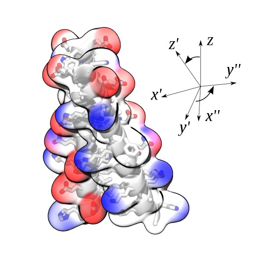
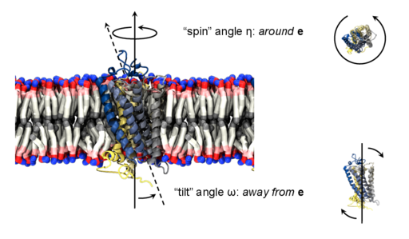
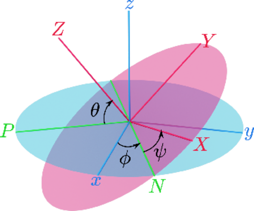

COLLECTIVE VARIABLES MODULE
Reference manual for GROMACS
Code version: 2026-09-10
Updated versions of this manual: [GROMACS] [LAMMPS] [NAMD] [Tinker-HP] [VMD]

Alejandro Bernardin, Haochuan Chen, Jeffrey R. Comer, Giacomo Fiorin, Haohao Fu, Jérôme Hénin, Axel Kohlmeyer, Fabrizio Marinelli, Hubert Santuz, Joshua V. Vermaas, Andrew D. White, Wei Zhang
Contents
2 Writing a Colvars configuration: a crash course
3 Enabling and controlling the Colvars module in GROMACS
3.1 Units in the Colvars module
3.2 Running Colvars in GROMACS
3.3 Configuration syntax used by the Colvars module
3.4 Global keywords
3.5 Input state file
3.5.1 Restarting in GROMACS.
3.5.2 Changing configuration upon restarting.
3.6 Output files
3.7 File formats
3.7.1 Configuration and state files.
3.7.2 Index (NDX) files
3.7.3 XYZ coordinate files
3.7.4 Grid files: multicolumn text format
3.7.5 Output trajectory files
4 Defining collective variables
4.1 Choosing a function
4.2 Treatment of periodic boundary conditions
4.3 Distances
4.3.1 distance: center-of-mass distance between two groups.
4.3.2 distanceZ: projection of a distance vector on an axis.
4.3.3 distanceXY: modulus of the projection of a distance vector on a plane.
4.3.4 distanceVec: distance vector between two groups.
4.3.5 distanceDir: distance unit vector between two groups.
4.3.6 distanceInv: mean distance between two groups of atoms.
4.4 Angles
4.4.1 angle: angle between three groups.
4.4.2 dipoleAngle: angle between two groups and dipole of a third group.
4.4.3 dihedral: torsional angle between four groups.
4.4.4 polarTheta: polar angle in spherical coordinates.
4.4.5 polarPhi: azimuthal angle in spherical coordinates.
4.5 Contacts
4.5.1 coordNum: coordination number between two groups.
4.5.2 selfCoordNum: coordination number between atoms within a group.
4.5.3 hBond: hydrogen bond between two atoms.
4.6 Collective metrics
4.6.1 rmsd: root mean square displacement (RMSD) from reference positions.
4.6.2 Advanced usage of the rmsd component.
4.6.3 eigenvector: projection of the atomic coordinates on a vector.
4.6.4 gyration: radius of gyration of a group of atoms.
4.6.5 inertia: total moment of inertia of a group of atoms.
4.6.6 dipoleMagnitude: dipole magnitude of a group of atoms.
4.6.7 inertiaZ: total moment of inertia of a group of atoms around a chosen axis.
4.7 Rotations
4.7.1 orientation: orientation from reference coordinates.
4.7.2 orientationAngle: angle of rotation from reference coordinates.
4.7.3 orientationProj: cosine of the angle of rotation from reference coordinates.
4.7.4 spinAngle: angle of rotation around a given axis.
4.7.5 tilt: cosine of the rotation orthogonal to a given axis.
4.7.6 eulerPhi: Roll angle from references coordinates.
4.7.7 eulerTheta: Pitch angle from references coordinates.
4.7.8 eulerPsi: Yaw angle from references coordinates.
4.8 Protein structure descriptors
4.8.1 alpha: -helix content of a protein segment.
4.8.2 dihedralPC: protein dihedral principal component
4.9 Raw data: building blocks for custom functions
4.9.1 cartesian: vector of atomic Cartesian coordinates.
4.9.2 distancePairs: set of pairwise distances between two groups.
4.10 Geometric path collective variables
4.10.1 gspath: progress along a path defined in atomic Cartesian coordinate space.
4.10.2 gzpath: distance from a path defined in atomic Cartesian coordinate space.
4.10.3 linearCombination: Helper CV to define a linear combination of other CVs
4.10.4 customColvar: Helper CV to define a mathematical expression as CV from other CVs
4.10.5 gspathCV: progress along a path defined in CV space.
4.10.6 gzpathCV: distance from a path defined in CV space.
4.11 Arithmetic path collective variables
4.11.1 aspathCV: progress along a path defined in CV space.
4.11.2 azpathCV: distance from a path defined in CV space.
4.11.3 aspath: progress along a path defined in atomic Cartesian coordinate space.
4.11.4 azpath: distance from a path defined in atomic Cartesian coordinate space.
4.12 Dense neural network in CV space (MLCV)
4.13 Torch-based collective variables
4.14 Shared keywords for all components
4.15 Periodic components
4.16 Non-scalar components
4.16.1 Calculating total forces
4.17 Linear and polynomial combinations of components
4.18 Custom functions
4.19 Defining grid parameters for a colvar
4.20 Trajectory output
4.21 Extended Lagrangian
4.22 Multiple time-step variables
4.23 Backward-compatibility
4.24 Statistical analysis
5 Selecting atoms
5.1 Atom selection keywords
5.2 Moving frame of reference.
5.2.1 Note on fit gradients
5.3 Treatment of periodic boundary conditions.
5.4 Performance of a Colvars calculation based on group size.
6 Biasing and analysis methods
6.1 Defining grids for biasing and analysis methods
6.2 Thermodynamic integration
6.3 Adaptive Biasing Force
6.3.1 ABF requirements on collective variables
6.3.2 Parameters for ABF
6.3.3 Multiple-walker ABF
Output files of multiple-walker ABF.
6.3.4 Output files
6.3.5 Multidimensional free energy surfaces
6.4 Extended-system Adaptive Biasing Force (eABF)
6.4.1 CZAR estimator of the free energy
6.5 Adiabatic Bias Molecular Dynamics (ABMD)
6.6 Metadynamics
6.6.1 Treatment of the PMF boundaries
6.6.2 Required metadynamics keywords
6.6.3 Output files
6.6.4 Performance optimization
6.6.5 Ensemble-Biased Metadynamics
6.6.6 Well-tempered metadynamics
6.6.7 Multiple-walker metadynamics
6.7 On-the-fly probability enhanced sampling (OPES)
6.7.1 Implementation notes
6.7.2 General options
6.7.3 Multiple-walker options
6.7.4 Output options
6.7.5 Example input
6.8 Harmonic restraints
6.8.1 Moving restraints: steered molecular dynamics
6.8.2 Moving restraints: umbrella sampling
6.8.3 Changing force constant
6.9 Computing the work of a changing restraint
6.10 Harmonic wall restraints
6.11 Linear restraints
6.12 Adaptive Linear Bias/Experiment Directed Simulation
6.13 Multidimensional histograms
6.13.1 Output options for multi-dimensional histograms
6.13.2 Histogramming vector variables
6.14 Probability distribution-restraints
7 Syntax changes from older versions
8 Compilation notes
In molecular dynamics simulations, it is often useful to reduce the large number of degrees of freedom of a physical system into few parameters whose statistical distributions can be analyzed individually, or used to define biasing potentials to alter the dynamics of the system in a controlled manner. These have been called ‘order parameters', ‘collective variables', ‘(surrogate) reaction coordinates', and many other terms.
Here we use primarily the term ‘collective variable', often shortened to colvar, to indicate any differentiable function of atomic Cartesian coordinates, , with between and , the total number of atoms:
| (1) |
This manual documents the collective variables module (Colvars), a software that provides an implementation for the functions with a focus on flexibility, robustness and high performance. The module is designed to perform multiple tasks concurrently during or after a simulation, the most common of which are:
-
apply restraints or biasing potentials to multiple variables, tailored on the system by choosing from a wide set of basis functions, without limitations on their number or on the number of atoms involved;
-
calculate potentials of mean force (PMFs) along any set of variables, using different enhanced sampling methods, such as Adaptive Biasing Force (ABF), metadynamics, steered MD and umbrella sampling; variants of these methods that make use of an ensemble of replicas are supported as well;
-
calculate statistical properties of the variables, such as running averages and standard deviations, correlation functions of pairs of variables, and multidimensional histograms: this can be done either at run-time without the need to save very large trajectory files, or after a simulation has been completed (post-processing).
Detailed explanations of the design of the Colvars module are provided in ref. 1. Please cite this reference whenever publishing work that makes use of this module, alongside any other publications for specific features being, according to the usage summary printed when running a Colvars-enabled MD simulation or analysis.
The Colvars configuration is a plain text file or string that defines collective variables, biases, and general parameters of the Colvars module. It is passed to the module using back-end-specific commands documented in section 3.
Example: steering two groups of atoms away from each other. Now let us look at a complete, non-trivial configuration. Suppose that we want to run a steered MD experiment where a small molecule is pulled away from a protein binding site. In Colvars terms, this is done by applying a moving restraint to the distance between the two objects. The configuration will contain two blocks, one defining the distance variable (see section 4 and 4.3.1), and the other the moving harmonic restraint (6.8).
colvar {
name dist
distance {
group1 { atomNumbersRange 42-55 }
group2 { indexGroup C-alpha_15-30 }
}
}
harmonic {
colvars dist
forceConstant 20.0
centers 4.0 # initial distance
targetCenters 15.0 # final distance
targetNumSteps 500000
}
Reading this input in plain English: the variable here named dist consists in a distance function between the centers of two groups: the ligand (atoms 42 to 55) and the -carbon atoms of residues 15 to 30 in the protein . To the “dist" variable, we apply a harmonic potential of force constant 20 kJ/mol/nm, initially centered around a value of 4 nm, which will increase to 15 nm over 500,000 simulation steps.
The atom selection keywords are detailed in section 5.
Example: using multiple variables and multiple biasing/analysis methods together. A more complex example configuration is included below, showing how a variable may be constructed by combining multiple existing functions, and how multiple variables or multiple biases may be used concurrently. The colvar indicated below as “" is defined as the difference between two distances (see 4.3): the first distance () is taken between the center of mass of atoms 1 and 2 and that of atoms 3 to 5, the second () between atom 7 and the center of mass of atoms 8 to 10 (see 5). The difference is obtained by multiplying the two by a coefficient or , respectively (see 4.17). The colvar called “" is the coordination number calculated between atoms 1 to 10 and atoms 11 to 20. A harmonic restraint (see 6.8) is applied to both and : to allow using the same force constant , both and are scaled by their respective fluctuation widths and . The values of “" are also recorded throughout the simulation as a joint 2-dimensional histogram (see 6.13).
colvar {
# difference of two distances
name d
width 0.2 # estimated fluctuation width
distance {
componentCoeff 1.0
group1 { atomNumbers 1 2 }
group2 { atomNumbers 3 4 5 }
}
distance {
componentCoeff -1.0
group1 { atomNumbers 7 }
group2 { atomNumbers 8 9 10 }
}
}
colvar {
name c
coordNum {
cutoff 6.0
group1 { atomNumbersRange 1-10 }
group2 { atomNumbersRange 11-20 }
tolerance 1.0e-6
pairListFrequency 1000
}
}
harmonic {
colvars d c
centers 3.0 4.0
forceConstant 5.0
}
histogram {
colvars c
}
Here, we document the syntax of the commands and parameters used to set up and use the Colvars module in GROMACS [2]. One of these parameters is the configuration file or the configuration text for the module itself, whose syntax is described in 3.3 and in the following sections.
The “internal units" of the Colvars module are the units in which values are expressed in the configuration file, and in which collective variable values, energies, etc. are expressed in the output and colvars trajectory files. Generally the Colvars module uses internally the same units as its back-end MD engine, with the exception of VMD, where different unit sets are supported to allow for easy setup, visualization and analysis of Colvars simulations performed with any simulation engine.
Note that angles are expressed in degrees, and derived quantities such as force constants are based on degrees as well. Some colvar components have default values, expressed in Ångström (Å) in this documentation. They are converted to the current length unit, if different from Å. Atomic coordinates read from XYZ files (and PDB files where applicable) are expected to be expressed in Ångström, no matter what unit system is in use by the back-end (GROMACS) or the Colvars Module. They are converted internally to the current length unit as needed. Note that force constants in harmonic and harmonicWalls biases (6.8) are rescaled according to the width parameter of colvars, so that they are formally in energy units, although if width is given its default value of 1.0, force constants are effectively expressed in kJ/mol/(colvar unit).
To avoid errors due to reading configuration files written in a different unit system, it can be specified within the input:
-
units — Unit system to be used
string, context: global
A string defining the units to be used internally by Colvars. In GROMACS the only supported value is GROMACS native units: gromacs (nm, kJ/mol).
Note: the GROMACS keywords described here are only supported in GROMACS versions 2024 and later, where Colvars is supported natively.
To enable a simulation with Colvars, one or more options should be added to the typical mdp parameters, for example:
; MDP file
...
colvars-active = yes
colvars-configfile = my_config.colvars
...
(other MDP options)
When the gmx grommp command is called to create a TPR file, the contents of my_config.colvars and of all files referenced by it are bundled in the TPR file as well. In any run based on the same TPR file, gmx mdrun will not access any of the original files used to initialize Colvars. Therefore to modify the Colvars configuration (e.g. adding or removing a bias), a new TPR file should be built as well. To do this while also continuing a previous simulations, please see 3.5.2.
-
colvars-active — Activate the Colvars module in GROMACS
Default: no boolean, context: MDP option
Activate Colvars computation in the current run. Requires that the Colvars library was compiled into GROMACS, which is the default. -
colvars-configfile — Colvars configuration file
string, context: MDP option
Name of the Colvars configuration file, which can be either an absolute path, or a path relative to the working directory when gmx grompp is called. -
colvars-seed — Random number generator seed
Default: -1 integer, context: MDP option
Seed used to initialize the random generator associated with certain stochastic methods implemented within Colvars. The default value generates a random seed.
Then, create the tpr and launch the simulation using a standard gmx mdrun command line:
gmx grompp -f system.mdp -p system.top -c init.gro -o test.tpr
gmx mdrun -s test.tpr
Continuing from a previous simulation is done using the -cpi parameter for the checkpoint file (e.g. “state.cpt"). This file holds the required information to restart the Colvars-based simulation.
gmx convert-tpr -s test.tpr -nsteps $NUMSTEPS -o test_restart.tpr
gmx mdrun -s test_restart.tpr -cpi state.cpt
Other output files (not needed for restarting) will be written using as prefix the value of the -e flag of gmx mdrun (see 3.6).
Configuration for the Colvars module is passed using an external file. Configuration lines follow the format “keyword value" or “keyword { ... }", where the keyword and its value must be separated by one or more space characters. The following formatting rules apply:
-
Keywords are case-insensitive; for example, upperBoundary is the same as upperboundary and UPPERBOUNDARY); note that their string values are however still case-sensitive (e.g. names of variables, file names).
-
A long value, or a list of multiple values, can be distributed across multiple lines by using curly braces, “{" and “}": the opening brace “{" must occur on the same line as the keyword, following at least one space character; the closing brace “}" may be at any position after that; any keywords following the closing brace on the same line are not valid (they should appear instead on a different line).
-
Many keywords are nested, and are only meaningful within the specific context of another keyword; for example, the keyword name is available inside the block of the keyword colvar {...}, but not outside of it; for every keyword documented in the following, the “parent" keyword that defines such context is also indicated.
-
If a keyword requiring a boolean value (yes|on|trueor no|off|false) is provided without an explicit value, it defaults to ‘yes|on|true'; for example, ‘outputAppliedForce' may be used as shorthand for ‘outputAppliedForce on'.
-
The hash character “#" indicates a comment: all text in the same line following this character will be ignored.
-
Outside of comments, only ASCII characters are allowed for defining keywords, and the only white-space characters supported are spaces, tabs and newlines: a warning will be printed upon detection of non-ASCII characters in a configuration line, which include both characters that are visibly “special", as well as those with a very similar appearance to ASCII ones (for instance, non-breaking spaces); common ways to identify/remove non-ASCII characters are using the Emacs text editor, or using LC_ALL=C vi.
The following keywords are available in the global context of the Colvars configuration, i.e. they are not nested inside other keywords:
-
colvarsTrajFrequency — Colvar value trajectory frequency
Default: 100 positive integer, context: global
The values of each colvar (and of other related quantities, if requested) are written to the file output.colvars.traj every these many steps throughout the simulation. If the value is 0, such trajectory file is not written. For optimization the output is buffered, and synchronized with the disk only when the restart file is being written. -
colvarsRestartFrequency — Colvar module restart frequency
Default: 0 positive integer, context: global
When this value is non-zero, a state file suitable for restarting will be written every these many steps. Additionally, any other output files produced by Colvars are written as well (except the trajectory file, which is written every colvarsTrajFrequency steps). It is generally a good idea to leave this parameter at its default value, unless needed for special cases or to disable automatic writing of output files altogether. (The default value of 0 in GROMACS reflects this.) -
indexFile — Index file for atom selection (GROMACS “ndx" format)
UNIX filename, context: global
This option reads an index file (usually with a .ndx extension) as produced by the make_ndx tool of GROMACS. This keyword may be repeated to load multiple index files. A group with the same name may appear multiple times, as long as it contains the same indices in identical order each time: an error is raised otherwise. The names of index groups contained in this file can then be used to define atom groups with the indexGroup keyword. Other supported methods to select atoms are described in 5. -
smp — Whether SMP parallelism should be used
Default: on boolean, context: global
If this flag is enabled (default), SMP parallelism over threads will be used to compute variables and biases, provided that this is supported by the GROMACS build in use.
Several of the sampling methods implemented in Colvars are time- or history-dependent, i.e. they work by accumulating data as a simulation progresses, and use these data to determine their biasing forces. If the simulation engine uses a checkpoint or restart file (as GROMACS and LAMMPS do), any data needed by Colvars are embedded into that file. Otherwise, a dedicated state file can be loaded into Colvars directly.
When a dedicated Colvars state file is used, it may be in either one of two formats:
-
Formatted, i.e. “text" format, which takes more space and is slower to to load/save but is also portable across different platforms and even different simulation engines (save for changes in physical units). This format is used by default, unless explicitly requested otherwise.
-
Unformatted, i.e. “binary" format, which is both space-efficient and quick to load/save, but requires that the same GROMACS build was used to write the file and that the Colvars configuration remains the same. This format is supported by Colvars versions starting 2023-09-25 (GROMACS versions 2024 and later). Colvars state files can be written in binary format by setting the environment variable “COLVARS_BINARY_RESTART" to 1.
In either format, the state file contains accumulated data as well as the step number at the end of the run. The step number read from a state file overrides any value that GROMACS provides, and will be incremented if the simulation proceeds. This means that the step number used internally by Colvars may not always match the step number reported by GROMACS.
Beginning with GROMACS 2024, all information necessary to restart Colvars is included in the checkpoint “.cpt" file. No special provisions are therefore needed compared to a GROMACS simulation without Colvars enabled.
In some cases, it is useful to modify the configuration of variables or biases between consecutive runs, for example by adding or removing a restraint. Some special provisions will happen in that case. When a state file is loaded, no information is available about any newly added variable or bias, which will thus remain uninitialized until the first compute step. Conversely, any information that the state file may contain about variables or biases that are no longer defined will be silently ignored. Please note that these checks are performed based only on the names of variables and biases: it is your responsibility to ensure that these names have consistent definitions between runs.
The flexibility just described carries some limitations: namely, it is only supported when reading text-format Colvars state files. Instead, restarting from binary files (such as the GROMACS checkpoint file) after a configuration change will trigger an error. It is also important to remind that when switching to a different build of GROMACS, the binary format may change slightly, even if the release version is the same.
To work around the potential issues just described, a text-format Colvars state file should be loaded. Loading such state file requires an exception to the standard behavior in GROMACS (i.e. loading a checkpoint file): this exception is supported by the following Colvars configuration:
-
defaultInputStateFile — Default input state file, if not provided by GROMACS
UNIX filename, context: global
Define a state file that will be loaded by default, unless GROMACS provides restarting information for Colvars through the checkpoint file.
When a Colvars configuration featuring defaultInputStateFile is processed into a TPR file, and a GROMACS simulation is started from this TPR file but without providing a checkpoint, Colvars will load its state from the file named by defaultInputStateFile. Later, when that same simulation is continued by providing a checkpoint file to GROMACS, Colvars will ignore defaultInputStateFile and will read its data from the checkpoint file. For the sake of clarity, we recommend that as soon as a suitable GROMACS checkpoint becomes available, the defaultInputStateFile is removed and a new TPR file is produced accordingly.
When the output prefix output is defined (in GROMACS, this is automatically set to the value of the -eflag of mdrun), the following output files are written during a simulation run:
-
A state file, named output.colvars.state, which is written at the end of the specified run. This file is in plain text format by default, or in binary format if the environment variable COLVARS_BINARY_RESTART is set to a non-zero integer. The state file can be used to continue a simulation: unless its contents are embedded in the checkpoint file of the MD engine itself (currently, GROMACS and LAMMPS support this), instructions for loading the Colvars state file will be required in the simulation script (see 3.5).
-
If the parameter colvarsRestartFrequency is larger than zero and the restart prefix is defined (note: this is not the case in GROMACS), a restart file is written every that many steps: this file is fully equivalent to the final state file. The name of this file is restart.colvars.state.
-
If the parameter colvarsTrajFrequency is greater than 0 (default value: 100 steps), a trajectory file, named output.colvars.traj, is written during the simulation. Unlike a state file, this file is not needed to restart a simulation, but can be used for post-processing and analysis. The format of this file is described in sec. 3.7.5.
-
Additionally, certain features, when enabled, can emit output files with a specific purpose: for example, potentials of mean force (PMFs) can be written to file to be analyzed or plotted. These files are described in the respective sections, but as a general rule they all use names beginning with the output prefix. Like the trajectory file, these additional files are needed only for analyzing a simulation's results, but not to continue it.
Note: please note that appending output files is not supported for all Colvars output files, and is therefore disabled: when running with the same output prefix, existing files will be backed up and replaced. When using Colvars, we highly recommend that you run GROMACS as:
gmx mdrun -s topol.tpr -noappend ...
This section summarizes the file formats of various files that Colvars may be reading or writing.
Configuration files are text files that are generally read as input by GROMACS. Starting from version 2017-02-01, changes in newline encodings are handled transparently, i.e. it is possible to typeset a configuration file in Windows (CR-LF newlines) and then use it with Linux or macOS (LF-only newlines).
Formatted state files, although not written manually, follow otherwise the same text format as configuration files. Binary state files can only be read by the Colvars code itself.
For atom selections that cannot be specified only by using internal Colvars keywords, external index files may also be used following the NDX format used in GROMACS:
[ group_1_name ]
i1 i2 i3 i4 ...
... ... iN
[ group_2_name ]
...
where i1 through iN are 1-based indices. Each group name may not contain spaces or tabs: otherwise, a parsing error will be raised.
Multiple index files may be provided to Colvars, each using the keyword indexFile. Two index files may contain groups with the same names, however these must also represent identical atom selections, i.e. the same sequence of indices including order.
Note that although GROMACS reads index files natively, indexFile uses a Colvars internal function. Thus, index files loaded into GROMACS and Colvars do not need to coincide, but it is recommended that they do for simplicity.
Other than with GROMACS, an index group may also be generated from the VMD command-line interface, using the helper function write_index_group provided in the colvartools folder:
source colvartools/write_index_group.tcl
set sel [atomselect top "resname XXX and not hydrogen"]
write_index_group indexfile.ndx $sel "Ligand"
XYZ coordinate files are text files with the extension “.xyz". They are read by the Colvars module using an internal reader, and expect the following format:
| Comment | line | ||
| … | |||
where is the number of atomic coordinates in the file and is the chemical element of the -th atom. Because is not used in Colvars, any string that does not contain tabs or spaces is acceptable.
Note: all XYZ coordinates are assumed to be expressed in Å units; it is advisable to obtain them from a PDB file, or using VMD and/or the Colvars Dashboard to avoid inconstencies with GROMACSńm units.
An XYZ file may contain either one of the following scenarios:
-
The file contains as many coordinates as the atoms that they are being read for: all coordinates will be read from the file following the same order as the atoms appear in the selection generated using the keywords listed in section 5. (Note that the order is guaranteed only if a single type of selection keyword is used one or more times, and not guaranteed when different types of selection keywords are used.)
-
The file contains more coordinates than needed, and it is assumed to contain coordinates for the entire system: only coordinates that match the numeric indices of the selected atoms are read, in order of increasing number.
XYZ-file coordinates are read directly by Colvars and stored internally as double-precision floating point numbers.
Many simulation methods and analysis tools write files that contain functions of the collective variables tabulated on a grid (e.g. potentials of mean force or multidimensional histograms) for the purpose of analyzing results. Such files are produced by ABF (6.3), metadynamics (6.6), multidimensional histograms (6.13), as well as any restraint with optional thermodynamic integration support (6.2).
In some cases, these files may also be read as input of a new simulation. Suitable input files for
this purpose are typically generated as output files of previous simulations, or directly by
the user in the specific case of ensemble-biased metadynamics (6.6.5). This section
explains the “multicolumn" format used by these files. For a multidimensional function
,
,
… the
multicolumn grid format is defined as follows:
| # | ||||||
| # | ||||||
| # | ||||||
| # | … | … | … | … | ||
| # | ||||||
| … | f(, , …, ) | |||||
| … | f(, , …, ) | |||||
| … | … | … | … | … | ||
Lines beginning with the character “#" are the header of the file. is the number of collective variables sampled by the grid. For each variable , is the lowest value sampled by the grid (i.e. the left-most boundary of the grid along ), is the width of each grid step along , is the number of points and is a flag whose value is 1 or 0 depending on whether the grid is periodic along . In most situations:
-
is given by the lowerBoundarykeyword of the variable ;
-
is given by the width keyword;
-
is calculated from the two above numbers and the upperBoundary keyword;
-
is set to 1 if and only if is periodic and the grids' boundaries cover its period.
How the grid's boundaries affect the sequence of points depends on how the contents of the file were computed. In many cases, such as histograms and PMFs computed by metadynamics (6.6.5), the values of in the first few columns correspond to the midpoints of the corresponding bins, i.e. . However, there is a slightly different format in PMF files computed by ABF (6.3) or other biases that use thermodynamic integration (6.2). In these cases, it is free-energy gradients that are accumulated on an (npoints)-long grid along each variable : after these gradients are integrated, the resulting PMF is discretized on a slightly larger grid with (npoints+1) points along (unless the interval is periodic). Therefore, the grid's outer edges extend by above and below the specified boundaries, so that for instance in the header appears to be shifted back by compared to what would be expected. Please keep this difference in mind when comparing PMFs computed by different methods.
After the header, the rest of the file contains values of the tabulated function
,
,
…, one for each line.
The first columns
contain values of ,
,
… and the last column contains
the value of the function .
Points are sorted in ascending order with the fastest-changing values at the right (“C-style" order). Each sweep of the
right-most variable
is terminated by an empty line. For two dimensional grid files, this allows quick visualization by programs
such as GNUplot.
Example 1: multicolumn text file for a one-dimensional histogram with lowerBoundary = 15, upperBoundary = 48 and width = 0.1.
| # | 1 | ||||
| # | 15 | 0.1 | 330 | 0 | |
| 15.05 | 6.14012e-07 | ||||
| 15.15 | 7.47644e-07 | ||||
| … | … | ||||
| 47.85 | 1.65944e-06 | ||||
| 47.95 | 1.46712e-06 | ||||
Example 2: multicolumn text file for a two-dimensional histogram of two dihedral angles (periodic interval with 6 bins):
| # | 2 | ||||
| # | -180.0 | 6.0 | 30 | 1 | |
| # | -180.0 | 6.0 | 30 | 1 | |
| -177.0 | -177.0 | 8.97117e-06 | |||
| -177.0 | -171.0 | 1.53525e-06 | |||
| … | … | … | |||
| -177.0 | 177.0 | 2.442956-06 | |||
| -171.0 | -177.0 | 2.04702e-05 | |||
| … | … | … | |||
The Colvars trajectory file (with a suffix .colvars.traj) is a plain text file (scientific notation with 14-digit precision) whose columns represent quantities such as colvar values, applied forces, or individual restraints' energies. Under most scenarios, plotting or analyzing this file is straightforward: for example, the following contains a variable “" and the energy of a restraint “":
# step A E_rA
0 1.42467449615693e+01 6.30982865292123e+02
100 1.42282559728026e+01 6.20640585041317e+02
…
Occasionally, if the Colvars configuration is changed mid-run certain quantities may be added or removed, changing the column layout. Labels in comment lines can assist in such cases: for example, consider the trajectory above with the addition of a second variable, “", after 10,000 steps:
# step A E_rA
0 1.42467449615693e+01 6.30982865292123e+02
100 1.42282559728026e+01 6.20640585041317e+02
…
# step A B E_rA
10000 1.38136915830229e+01 9.99574098859265e-01 4.11184644791030e+02
10100 1.36437184346326e+01 9.99574091957314e-01 3.37726286543895e+02
Analyzing the above file with standard tools is possible, but laborious: a convenience script is provided for this and related purposes. It may be used either as a command-line tool or as a Python module:
>>> from plot_colvars_traj import Colvars_traj
>>> traj = Colvars_traj('test.colvars.traj')
>>> print(traj['A'].steps, traj['A'].values)
[ 0 100 ... 10000 10100] [14.246745 14.228256 ... 13.813692 13.643718]
>>> print(traj['B'].steps, traj['B'].values)
[10000 10100] [0.999574 0.9995741]
A collective variable is defined by the keyword colvar followed by its configuration options contained within curly braces:
colvar {
name xi
other options
function_name {
parameters
atom selection
}
}
There are multiple ways of defining a variable:
-
The simplest and most common way way is using one of the precompiled functions (here called “components"), which are listed in section 4.1. For example, using the keyword rmsd (section 4.6.1) defines the variable as the root mean squared deviation (RMSD) of the selected atoms.
-
A new variable may also be constructed as a linear or polynomial combination of the components listed in section 4.1 (see 4.17 for details).
-
A user-defined mathematical function of the existing components (see list in section 4.1), or of the atomic coordinates directly (see the cartesian keyword in 4.9.1). The function is defined through the keyword customFunction (see 4.18 for details).
Choosing a component (function) is the only parameter strictly required to define a collective variable. It is also highly recommended to specify a name for the variable:
-
name — Name of this colvar
Default: “colvar" + numeric id string, context: colvar
The name is an unique case-sensitive string which allows the Colvars module to identify this colvar unambiguously; it is also used in the trajectory file to label to the columns corresponding to this colvar.
In this context, the function that computes a colvar is called a component. A component's choice and definition consists of including in the variable's configuration a keyword indicating the type of function (e.g. rmsd), followed by a definition block specifying the atoms involved (see 5) and any additional parameters (cutoffs, “reference" values, …). At least one component must be chosen to define a variable: if none of the keywords listed below is found, an error is raised.
The following components implement functions with a scalar value (i.e. a real number):
-
distance: distance between two groups;
-
distanceZ: projection of a distance vector on an axis;
-
distanceXY: projection of a distance vector on a plane;
-
distanceInv: mean distance between two groups of atoms (e.g. NOE-based distance);
-
angle: angle between three groups;
-
dihedral: torsional (dihedral) angle between four groups;
-
dipoleAngle: angle between two groups and dipole of a third group;
-
dipoleMagnitude: magnitude of the dipole of a group of atoms;
-
polarTheta: polar angle of a group in spherical coordinates;
-
polarPhi: azimuthal angle of a group in spherical coordinates;
-
eulerPhi: Roll angle of rotation from references coordinates;
-
eulerTheta: Pitch angle of rotation from references coordinates;
-
eulerPsi: Yaw angle of rotation from references coordinates;
-
coordNum: coordination number between two groups;
-
selfCoordNum: coordination number of atoms within a group;
-
hBond: hydrogen bond between two atoms;
-
rmsd: root mean square deviation (RMSD) from a set of reference coordinates;
-
eigenvector: projection of the atomic coordinates on a vector;
-
orientationAngle: angle of the best-fit rotation from a set of reference coordinates;
-
orientationProj: cosine of orientationProj;
-
spinAngle: projection orthogonal to an axis of the best-fit rotation from a set of reference coordinates;
-
tilt: projection on an axis of the best-fit rotation from a set of reference coordinates;
-
gyration: radius of gyration of a group of atoms;
-
inertia: moment of inertia of a group of atoms;
-
inertiaZ: moment of inertia of a group of atoms around a chosen axis;
-
alpha: -helix content of a protein segment.
-
dihedralPC: projection of protein backbone dihedrals onto a dihedral principal component.
Some components do not return scalar, but vector values:
-
distanceVec: distance vector between two groups (length: 3);
-
distanceDir: unit vector parallel to distanceVec (length: 3);
-
cartesian: vector of atomic Cartesian coordinates (length: times the number of Cartesian components requested, X, Y or Z);
-
distancePairs: vector of mutual distances (length: );
-
orientation: best-fit rotation, expressed as a unit quaternion (length: 4).
The types of components used in a colvar (scalar or not) determine the properties of that colvar, and particularly which biasing or analysis methods can be applied.
What if “X" is not listed? If a function type is not available on this list, it may be possible to define it as a polynomial superposition of existing ones (see 4.17), a custom function (see 4.18).
In the rest of this section, all available component types are listed, along with their physical units and their ranges of values, if limited. Such ranges are often used to define automatically default sampling intervals, for example by setting the parameters lowerBoundary and upperBoundary in the parent colvar.
For each type of component, the available configurations keywords are listed: when two components share certain keywords, the second component references to the documentation of the first one that uses that keyword. The very few keywords that are available for all types of components are listed in a separate section 4.14.
When copying over atomic coordinates from GROMACS, Colvars also copies its boundary conditions and unit cell vectors. Periodic or non-periodic boundary conditions are supported for each direction independently, thus allowing for mixed-periodicity conditions if GROMACS allows them. When using triclinic unit cells, tilt factors up to 1/2 are supported by looping over one additional layer of adjacent periodic images around the simulation cell to find the minimum image. The use of tilt factors beyond 1/2 is not recommended, and may lead to slower performance.
For all colvar components implemented by Colvars internal code, the following rules apply:
-
Distance vectors between two coordinates , are calculated following the minimum-image convention by default, unless forceNoPBC is enabled. ( and may be either individual atomic coordinates, or centers of mass of two groups.)
-
For all other functions of multiple atomic coordinates, , it is assumed that all atoms that are part of the same group are in the same periodic unit cell (see 5.3).
-
forceNoPBC — Use absolute rather than minimum-image distances?
Default: no boolean, context: any component
If this keyword is set to yes, PBCs will be ignored when calculating this component. This is only useful in a limited number of special cases, e.g. to describe the distance between remote points of a single macromolecule, which cannot be split across periodic cell boundaries, and for which the minimum-image distance might give the wrong result because of a relatively small periodic cell.
Example: ignoring PBCs in a distance between two groups. Using forceNoPBC yes when defining a distance { ... } function lets Colvars ignore the minimum-image convention when computing the distance between the centers of mass of group1 and group2. (Note that the centers of mass themselves are always calculated as weighted averages anyway).
colvar {
name d
distance {
forceNoPBC yes
group1 { … }
group2 { … }
}
}
The distance {...} block defines a distance component between the two atom groups, group1 and group2.
List of keywords (see also 4.2, 4.14, 4.15 and 4.17 for additional options):
-
group1 — First group of atoms
Atom group, context: distance
First group of atoms. -
oneSiteTotalForce — Measure total force on group 1 only?
Default: no boolean, context: angle, dipoleAngle, dihedral
If this is set to yes, the total force is measured along a vector field (see equation (26) in section 6.3) that only involves atoms of group1. This option is only useful for ABF, or custom biases that compute total forces. See section 6.3 for details. -
forceNoPBC — Use absolute rather than minimum-image distances? (see description)
Default: no
The value returned is a positive number (in nm), ranging from to the largest possible interatomic distance within the chosen boundary conditions (with PBCs, the minimum image convention is used unless the forceNoPBC option is set).
The distanceZ {...} block defines a distance projection component, which can be seen as measuring the distance between two groups projected onto an axis, or the position of a group along such an axis. The axis can be defined using either one reference group and a constant vector, or dynamically based on two reference groups. One of the groups can be set to a dummy atom to allow the use of an absolute Cartesian coordinate.
List of keywords (see also 4.2, 4.14, 4.15 and 4.17 for additional options):
-
main — Main group of atoms
Atom group, context: distanceZ
Group of atoms whose position is measured. -
ref — Reference group of atoms
Atom group, context: distanceZ
Reference group of atoms. The position of its center of mass is noted below. -
ref2 — Secondary reference group
Default: none Atom group, context: distanceZ
Optional group of reference atoms, whose position can be used to define a dynamic projection axis: . In this case, the origin is , and the value of the component is . -
axis — Projection axis
Default: (0.0, 0.0, 1.0) (x, y, z)triplet, context: distanceZ
This vector will be normalized to define a projection axis for the distance vector joining the centers of groups refand main. The value of the component is then . The vector should be written as three components separated by commas and enclosed in parentheses. -
oneSiteTotalForce — same definition as oneSiteTotalForce (distance component)
-
forceNoPBC — Use absolute rather than minimum-image distances? (see description)
Default: no
This component returns a number (in nm) whose range is determined by the chosen boundary conditions. For instance, if the axis is used in a simulation with periodic boundaries, the returned value ranges between and , where is the box length along (this behavior is disabled if forceNoPBC is set).
The distanceXY {...} block defines a distance projected on a plane, and accepts the same keywords as the component distanceZ, i.e. main, ref, either ref2 or axis, and oneSiteTotalForce. It returns the norm of the projection of the distance vector between main and ref onto the plane orthogonal to the axis. The axis is defined using the axis parameter or as the vector joining ref and ref2 (see distanceZ above).
List of keywords (see also 4.2, 4.14, 4.15 and 4.17 for additional options):
-
main — same definition as main (distanceZ component)
-
ref — same definition as ref (distanceZ component)
-
ref2 — same definition as ref2 (distanceZ component)
-
axis — same definition as axis (distanceZ component)
-
oneSiteTotalForce — same definition as oneSiteTotalForce (distance component)
-
forceNoPBC — Use absolute rather than minimum-image distances? (see description)
Default: no
The distanceVec component computes the 3-dimensional vector joining the centers of mass of group1 and group2. Its values are therefore multi-dimensional and are subject to the restrictions listed in 4.16. Moreover, when computing differences between two different values of a distanceVec variable the minimum-image convention is assumed (unless forceNoPBC is enabled).
List of keywords (see also 4.2, 4.14, 4.15 and 4.17 for additional options):
-
group1 — same definition as group1 (distance component)
-
oneSiteTotalForce — same definition as oneSiteTotalForce (distance component)
-
forceNoPBC — Use absolute rather than minimum-image distances? (see description)
Default: no
The distanceDir {...} block defines a distance unit vector component, which accepts the same keywords as the component distance: group1, group2, and forceNoPBC. It returns a 3-dimensional unit vector , with .
This multi-dimensional variable has two intrinsic degrees of freedom: however, these cannot be sampled independently as one-dimensional variables. A decomposition in two dimensions can be done using polarTheta and polarPhi angles, with the caveat that the latter is ill-defined when the former approaches 0or 180.
The distance between two values of distanceDir is calculated internally as the angle (in radians) between the two unit vectors: this definition adapts the standard Euclidean distance to the unit sphere, to ensure that restraint forces comply with the mathematical constraint.
List of keywords (see also 4.2, 4.14, 4.15 and 4.17 for additional options):
-
group1 — same definition as group1 (distance component)
-
oneSiteTotalForce — same definition as oneSiteTotalForce (distance component)
-
forceNoPBC — Use absolute rather than minimum-image distances? (see description)
Default: no
The distanceInv {...} block defines a generalized mean distance between two groups of atoms 1 and 2, where each distance is taken to the power :
| (2) |
where is the distance between atoms and in groups 1 and 2 respectively, and is an even integer.
List of keywords (see also 4.2, 4.14, 4.15 and 4.17 for additional options):
-
group1 — same definition as group1 (distance component)
-
oneSiteTotalForce — same definition as oneSiteTotalForce (distance component)
-
exponent— Exponent in equation 2
Default: 6 positive even integer, context: distanceInv
Defines the exponent to which the individual distances are elevated before averaging. The default value of 6 is useful for example to applying restraints based on NOE-measured distances. -
forceNoPBC — Use absolute rather than minimum-image distances? (see description)
Default: no
This component returns a number ranging from to the largest possible distance within the chosen boundary conditions.
The angle {...} block defines an angle, and contains the three blocks group1, group2 and group3, defining the three groups. It returns an angle (in degrees) within the interval .
List of keywords (see also 4.2, 4.14, 4.15 and 4.17 for additional options):
-
group1 — same definition as group1 (distance component)
-
oneSiteTotalForce — same definition as oneSiteTotalForce (distance component)
-
forceNoPBC — Use absolute rather than minimum-image distances? (see description)
Default: no
The dipoleAngle {...} block defines an angle, and contains the three blocks group1, group2 and group3, defining the three groups, being group1the group where dipole is calculated. It returns an angle (in degrees) within the interval .
List of keywords (see also 4.2, 4.14, 4.15 and 4.17 for additional options):
-
group1 — same definition as group1 (distance component)
-
oneSiteTotalForce — same definition as oneSiteTotalForce (distance component)
-
forceNoPBC — Use absolute rather than minimum-image distances? (see description)
Default: no
The dihedral {...} block defines a torsional angle, and contains the blocks group1, group2, group3 and group4, defining the four groups. It returns an angle (in degrees) within the interval . The Colvars module calculates all the distances between two angles taking into account periodicity. For instance, reference values for restraints or range boundaries can be defined by using any real number of choice.
List of keywords (see also 4.2, 4.14, 4.15 and 4.17 for additional options):
-
group1 — same definition as group1 (distance component)
-
oneSiteTotalForce — same definition as oneSiteTotalForce (distance component)
-
forceNoPBC — Use absolute rather than minimum-image distances? (see description)
Default: no
The polarTheta {...} block defines the polar angle in spherical coordinates, for the center of mass of a group of atoms described by the block atoms. It returns an angle (in degrees) within the interval . To obtain spherical coordinates in a frame of reference tied to another group of atoms, use the fittingGroup (5.2) option within the atoms block. An example is provided in file examples/11_polar_angles.in of the Colvars public repository.
List of keywords (see also 4.2, 4.14, 4.15 and 4.17 for additional options):
-
atoms — Group of atoms defining this function
Atom group, context: polarPhi
Defines the group of atoms for the COM of which the angle should be calculated. -
forceNoPBC — Use absolute rather than minimum-image distances? (see description)
Default: no
The polarPhi {...} block defines the azimuthal angle in spherical coordinates, for the center of mass of a group of atoms described by the block atoms. It returns an angle (in degrees) within the interval . The Colvars module calculates all the distances between two angles taking into account periodicity. For instance, reference values for restraints or range boundaries can be defined by using any real number of choice. To obtain spherical coordinates in a frame of reference tied to another group of atoms, use the fittingGroup (5.2) option within the atoms block. An example is provided in file examples/11_polar_angles.in of the Colvars public repository.
List of keywords (see also 4.2, 4.14, 4.15 and 4.17 for additional options):
-
atoms — Group of atoms defining this function
Atom group, context: polarPhi
Defines the group of atoms for the COM of which the angle should be calculated. -
forceNoPBC — Use absolute rather than minimum-image distances? (see description)
Default: no
Note: polarPhi is ill-defined when the corresponding polarTheta component is close to 0or 180; please take measures to avoid sampling these configurations in your simulations.
The coordNum {...} block defines a coordination number (or number of contacts), which calculates the function , where is the “cutoff" distance, and and are exponents that can control its long range behavior and stiffness [3]. This function is summed over all pairs of atoms in group1 and group2:
| (3) |
List of keywords (see also 4.2, 4.14, 4.15 and 4.17 for additional options):
-
group1 — same definition as group1 (distance component)
-
cutoff — “Interaction" distance (nm)
Default: 4.0 Å positive decimal, context: coordNum
This number defines the switching distance to define an interatomic contact: for , the switching function is close to 1, at it has a value of ( with the default and ), and at it goes to zero approximately like . Hence, for a proper behavior, must be larger than . -
cutoff3 — Reference distance vector (nm)
Default: (4.0, 4.0, 4.0) Å “(x, y, z)" triplet of positive decimals, context: coordNum
The three components of this vector define three different cutoffs for each direction. This option is mutually exclusive with cutoff. -
expNumer — Numerator exponent
Default: 6 positive even integer, context: coordNum
This number defines the exponent for the switching function. -
expDenom — Denominator exponent
Default: 12 positive even integer, context: coordNum
This number defines the exponent for the switching function. -
group1CenterOnly — Use only group1's center of mass
Default: off boolean, context: coordNum
If this option is on, only contacts between the center of mass of group1 and atoms of group2 are calculated (by default, the sum extends over all pairs of atoms in group1 and group2). If group1 is a dummyAtom, this option is set to yes by default. -
group2CenterOnly — Use only group2's center of mass
Default: off boolean, context: coordNum
If this option is on, only contacts between each atoms in group1 and the center of mass of group2 are calculated (by default, the sum extends over all pairs of atoms in group1 and group2). If group2 is a dummyAtom, this option is set to yes by default. -
tolerance — Pairlist control
Default: 0.0 decimal, context: coordNum
This controls the pair list feature, dictating the minimum value for each summation element in Eq. 3 such that the pair that contributed the summation element is included in subsequent simulation timesteps until the next pai r list recalculation. For most applications, this value should be small (eg. 0.001) to avoid missing important contributions to the overall sum. Higher values will improve performance by reducing the number of pairs that contribute to the sum. Values above 1 will exclude all possible pair interactions. Similarly, values below 0 will never exclude a pair from consideration. To ensure continuous forces, Eq. 3 is further modified by subtracting the tolerance and then rescaling so that each pair covers the range . -
pairListFrequency — Pairlist regeneration frequency
Default: 100 positive integer, context: coordNum
This controls the pairlist feature, dictating how many steps are taken between regenerating pair lists if the tolerance is greater than 0. -
forceNoPBC — Use absolute rather than minimum-image distances? (see description)
Default: no
This component returns a dimensionless number, which ranges from 0 (all interatomic distances are much larger than the cutoff) to (all possible pairwise distances are much smaller than the cutoff). The computational cost also grows with the number of pairwise distances calculated, unless either group1CenterOnly or group2CenterOnly are used. Setting could mitigate this by looping over pairs less frequently than every step.
The selfCoordNum {...} block defines a coordination number similarly to the component coordNum, but the function is summed over atom pairs within group1:
| (4) |
The keywords accepted by selfCoordNum are a subset of those accepted by coordNum, namely group1 (here defining all of the atoms to be considered), cutoff, expNumer, and expDenom.
List of keywords (see also 4.2, 4.14, 4.15 and 4.17 for additional options):
-
group1 — same definition as group1 (coordNum component)
-
cutoff — same definition as cutoff (coordNum component)
-
cutoff3 — same definition as cutoff3 (coordNum component)
-
expNumer — same definition as expNumer (coordNum component)
-
expDenom — same definition as expDenom (coordNum component)
-
tolerance — same definition as tolerance (coordNum component)
-
pairListFrequency — same definition as pairListFrequency (coordNum component)
-
forceNoPBC — Use absolute rather than minimum-image distances? (see description)
Default: no
This component returns a dimensionless number, which ranges from approximately 0 (all interatomic distances much larger than the cutoff) to (all distances within the cutoff). For performance reasons, group1should be of limited size, because the cost of the loop over all pairs grows as .
The hBond {...} block defines a hydrogen bond, implemented as a coordination number (eq. 3) between the donor and the acceptor atoms. Therefore, it accepts the same options cutoff (with a different default value of 3.3 Å), expNumer (with a default value of 6) and expDenom (with a default value of 8). Unlike coordNum, it requires two atom numbers, acceptor and donor, to be defined. It returns a dimensionless number, with values between 0 (acceptor and donor far outside the cutoff distance) and 1 (acceptor and donor much closer than the cutoff).
List of keywords (see also 4.2, 4.14, 4.15 and 4.17 for additional options):
-
acceptor — Number of the acceptor atom
positive integer, context: hBond
Number that uses the same convention as atomNumbers. -
cutoff — same definition as cutoff (coordNum component)
Note: default value is 3.3 Å. -
expNumer — same definition as expNumer (coordNum component)
Note: default value is 6. -
expDenom — same definition as expDenom (coordNum component)
Note: default value is 8. -
forceNoPBC — Use absolute rather than minimum-image distances? (see description)
Default: no
The block rmsd {...} defines the root mean square replacement (RMSD) of a group of atoms with respect to a reference structure. For each set of coordinates , the colvar component rmsd calculates the optimal rotation that best superimposes the coordinates onto a set of reference coordinates . Both the current and the reference coordinates are centered on their centers of geometry, and . The root mean square displacement is then defined as:
| (5) |
The optimal rotation is calculated within the formalism developed in ref. 4, which guarantees a continuous dependence of with respect to .
List of keywords (see also 4.2, 4.14, 4.15 and 4.17 for additional options):
-
atoms — Group of atoms defining this function
Atom group, context: rmsd
Defines the group of atoms of which the RMSD should be calculated. Optimal fit options (such as refPositions and rotateToReference) should typically NOT be set within this block. Exceptions to this rule are the special cases discussed in the Advanced usage paragraph below. -
refPositions — Reference coordinates
space-separated list of (x, y, z)triplets, context: rmsd
This option (mutually exclusive with refPositionsFile) sets the reference coordinates for RMSD calculation, and uses these to compute the roto-translational fit. See the equivalent option refPositions within the atom group definition for details on acceptable formats and other features. -
refPositionsFile — Reference coordinates file
UNIX filename, context: rmsd
This option (mutually exclusive with refPositions) sets the reference coordinates for RMSD calculation, and uses these to compute the roto-translational fit. See the equivalent option refPositionsFile within the atom group definition for details on acceptable file formats and other features. -
atomPermutation — Alternate ordering of atoms for RMSD computation
List of atom numbers, context: rmsd
If defined, this parameter defines a re-ordering (permutation) of the 1-based atom numbers that can be used to compute the RMSD, typically due to molecular symmetry. This parameter can be specified multiple times, each one defining a new permutation: the returned RMSD value is the minimum over the set of permutations. For example, if the atoms making up the group are 6, 7, 8, 9, and atoms 7, 8, and 9 are invariant by circular permutation (as the hydrogens in a CH3 group), a symmetry-adapted RMSD would be obtained by adding:
atomPermutation 6 8 9 7
atomPermutation 6 9 7 8
This will result in these 2 atom orders being considered in addition to the order used when defining the atom group. Note that this does not affect the least-squares roto-translational fit. Therefore, this feature is mostly useful when using custom fitting parameters within the atom group, such as fittingGroup, or when fitting is disabled altogether. For details, see ref. 5. -
forceNoPBC — Use absolute rather than minimum-image distances? (see description)
Default: no
This component returns a positive real number (in nm).
In the standard usage as described above, the rmsd component calculates a minimum RMSD, that is, current coordinates are optimally fitted onto the same reference coordinates that are used to compute the RMSD value. The fit itself is handled by the atom group object, whose parameters are automatically set by the rmsd component. For very specific applications, however, it may be useful to control the fitting process separately from the definition of the reference coordinates, to evaluate various types of non-minimal RMSD values. This can be achieved by setting the related options (refPositions, etc.) explicitly in the atom group block. This allows for the following non-standard cases:
-
applying the optimal translation, but no rotation (rotateToReference off), to bias or restrain the shape and orientation, but not the position of the atom group;
-
applying the optimal rotation, but no translation (centerToReference off), to bias or restrain the shape and position, but not the orientation of the atom group;
-
disabling the application of optimal roto-translations, which lets the RMSD component describe the deviation of atoms from fixed positions in the laboratory frame: this allows for custom positional restraints within the Colvars module;
-
fitting the atomic positions to different reference coordinates than those used in the RMSD calculation itself (by specifying refPositionsor refPositionsFilewithin the atom group as well as within the rmsd block);
-
applying the optimal rotation and/or translation from a separate atom group, defined through fittingGroup: the RMSD then reflects the deviation from reference coordinates in a separate, moving reference frame (see example in the section on fittingGroup).
The block eigenvector {...} defines the projection of the coordinates of a group of atoms (or more precisely, their deviations from the reference coordinates) onto a vector in , where is the number of atoms in the group. The computed quantity is the total projection:
| (6) |
where, as in the rmsdcomponent, is the optimal rotation matrix, and are the centers of geometry of the current and reference positions respectively, and are the components of the vector for each atom. Example choices for are an eigenvector of the covariance matrix (essential mode), or a normal mode of the system. It is assumed that : otherwise, the Colvars module centers the automatically when reading them from the configuration.
List of keywords (see also 4.2, 4.14, 4.15 and 4.17 for additional options):
-
atoms — same definition as atoms (rmsd component)
-
refPositions — same definition as refPositions (rmsd component)
-
refPositionsFile — same definition as refPositionsFile (rmsd component)
-
vector — Vector components
space-separated list of (x, y, z)triplets, context: eigenvector
This option (mutually exclusive with vectorFile) sets the values of the vector components. -
vectorFile — file containing vector components
UNIX filename, context: eigenvector
This option (mutually exclusive with vector) sets the name of an XYZ (3.7.3) coordinate file containing the vector components. Note: Reading data from a coordinate file may entail an automatic unit conversion if the length unit currently used by the MD engine is not Å. If this is not the desired behavior, this can be remedied using the normalizeVector option described below. -
normalizeVector — Normalize the vector components when reading them?
Default: off boolean, context: eigenvector
If this flag is activated, the norm of the vector is set equal to 1 by automatically rescaling all the components ; alternatively, the value of is printed. -
differenceVector— The -dimensional vector is the difference between vector and refPositions
Default: off boolean, context: eigenvector
If this option is on, the numbers provided by vectorare interpreted as another set of positions, : the vector is then defined as . This allows to conveniently define a colvar as a projection on the linear transformation between two sets of positions, “A" and “B". If this flag is on, the vector is normalized so that when the atoms are at the set of positions “A" and at the set of positions “B". Setting normalizeVector on overrides this behavior. -
forceNoPBC — Use absolute rather than minimum-image distances? (see description)
Default: no
The block gyration {...}defines the parameters for calculating the radius of gyration of a group of atomic positions with respect to their center of geometry, :
| (7) |
This component must contain one atoms {...} block to define the atom group, and returns a positive number, expressed in nm.
List of keywords (see also 4.2, 4.14, 4.15 and 4.17 for additional options):
-
atoms — same definition as atoms (rmsd component)
-
forceNoPBC — Use absolute rather than minimum-image distances? (see description)
Default: no
The block inertia {...}defines the parameters for calculating the total moment of inertia of a group of atomic positions with respect to their center of geometry, :
| (8) |
Note that all atomic masses are set to 1 for simplicity. This component must contain one atoms {...} block to define the atom group, and returns a positive number, expressed in nm.
List of keywords (see also 4.2, 4.14, 4.15 and 4.17 for additional options):
-
atoms — same definition as atoms (rmsd component)
-
forceNoPBC — Use absolute rather than minimum-image distances? (see description)
Default: no
The dipoleMagnitude {...}block defines the dipole magnitude of a group of atoms (norm of the dipole moment's vector), being atoms the group where dipole magnitude is calculated. It returns the magnitude in elementary charge times nm.
List of keywords (see also 4.2, 4.14, 4.15 and 4.17 for additional options):
-
atoms — same definition as atoms (rmsd component)
-
forceNoPBC — Use absolute rather than minimum-image distances? (see description)
Default: no
The block inertiaZ {...} defines the parameters for calculating the component along the axis of the moment of inertia of a group of atomic positions with respect to their center of geometry, :
| (9) |
Note that all atomic masses are set to 1 for simplicity. This component must contain one atoms {...} block to define the atom group, and returns a positive number, expressed in nm.
List of keywords (see also 4.2, 4.14, 4.15 and 4.17 for additional options):
-
atoms — same definition as atoms (rmsd component)
-
axis — Projection axis
Default: (0.0, 0.0, 1.0) (x, y, z)triplet, context: inertiaZ
The three components of this vector define (when normalized) the projection axis . -
forceNoPBC — Use absolute rather than minimum-image distances? (see description)
Default: no
The variables discussed in this section quantify the rotations of macromolecules (or other quasi-rigid objects) from a given set of reference coordinates to the current coordinates. Such rotations are computed following the same method used for best-fit RMSDs (see rmsd and fittingGroup). The underlying mathematical formalism is described in refs. 4, 6, 7, and the implementation in ref. 1.
The first of the functions described is the orientation, which describes the full rotation as a unit quaternion , i.e. 4 numbers with one constraint (3 degrees of freedom). The quaternion is one of only two representations that are both complete and accurate, the other being a unit matrix with 3 independent parameters. Although is used internally in the Colvars module for features such as the rmsd function and the fittingGroup option, its direct use as a collective variable is mostly limited to fixed or moving restraints.
The two functions orientationAngle and orientationProj, with the latter being the cosine of the former, represent the amplitude of the full rotation described by , regardless of the direction of its axis. As one-dimensional scalar variables, both orientationAngle and orientationProj are a much reduced simplification of the full rotation. However, they can be used in a variety of methods including both restraints and PMF computations.
A slightly more complete parametrization is achieved by decomposing the full rotation into the two parameters, tilt and spinAngle. These quantify the amplitudes of two independent sub-rotations away from a certain axis , and around that axis , respectively. The axis is chosen by the user, and is by default the Z axis: under that choice, tilt is equivalent to the sine of the Euler “pitch" angle , and spinAngle to the combined effect of the other two angles and . This parameterization is mathematically well defined for most orientations, including when the current coordinates are almost completely aligned with the reference ones. However, a mathematical singularity affects the spinAngle function near configurations where the value of the corresponding tilt is -1 (i.e. a rotation around an axis orthogonal to ). Therefore, tilt and spinAngle are most useful together when it is known that the range of possible orientations are somewhat limited. For example, a membrane protein that is unable to fully flip around the membrane plane, or a molecule whose tilt has a wall restraint applied to it; example inputs for each case are provided below.
Lastly, the traditional Euler angles are also available as the functions eulerPhi, eulerTheta and eulerPsi. Altogether, these are sufficient to represent all three degrees of freedom of a full rotation. However, they also suffer from the potential “gimbal lock" problem, which emerges whenever , which includes also the case where the full rotation is small. Under such conditions, the angles and are both ill-defined and cannot be used as collective variables. For these reasons, it is highly recommended that Euler angles are used only in simulations where their range of applicability is known ahead of time, and excludes configurations where altogether.
The block orientation {...}returns the same optimal rotation used in the rmsdcomponent to superimpose the coordinates onto a set of reference coordinates . Such component returns a four dimensional vector , with ; this quaternion expresses the optimal rotation according to the formalism in ref. 4. The quaternion can also be written as , where is the angle and the normalized axis of rotation; for example, a rotation of 90 around the axis is expressed as “(0.707, 0.0, 0.0, 0.707)". For any quaternion , and represent the same rotation. Therefore, by convention, orientation always returns a quaternion verifying . This ensures that orientation is a unique and continuously-varying function of Cartesian coordinates. The script quaternion2rmatrix.tcl provides Tcl functions for converting to and from a rotation matrix in a format suitable for usage in VMD.
As for the component rmsd, the available options are atoms, refPositionsFile and refPositions.
Note: refPositions and refPositionsFile define the set of positions from which the optimal rotation is calculated, but this rotation is not applied to the coordinates of the atoms involved: it is used instead to define the variable itself.
List of keywords (see also 4.2, 4.14, 4.15 and 4.17 for additional options):
-
atoms — same definition as atoms (rmsd component)
-
refPositions — same definition as refPositions (rmsd component)
-
refPositionsFile — same definition as refPositionsFile (rmsd component)
-
closestToQuaternion — Reference rotation
Default: (1.0, 0.0, 0.0, 0.0)(“null" rotation) “(q0, q1, q2, q3)" quadruplet, context: orientation
Between the two equivalent quaternions and , the closer to (1.0, 0.0, 0.0, 0.0) is chosen. This simplifies the visualization of the colvar trajectory when sampled values are a smaller subset of all possible rotations. Note: this only affects the output, never the dynamics. -
forceNoPBC — Use absolute rather than minimum-image distances? (see description)
Default: no
Example: stopping the rotation of a protein. To stop the rotation of an elongated macromolecule in solution (and use an anisotropic box to save water molecules), it is possible to define a colvar with an orientation component, and restrain it through the harmonic bias around the identity rotation, (1.0, 0.0, 0.0, 0.0). Only the overall orientation of the macromolecule is affected, and not its internal degrees of freedom.
colvar {
name Orient
orientation {
atoms { … }
refPositionsFile reference.pdb
}
}
harmonic { # Define a harmonic restraint
colvars Orient # acting on colvar "Orient"
centers (1.0, 0.0, 0.0, 0.0) # center the unit quaternion (no rotation)
forceConstant 500.0 # unit is energy: quaternions are dimensionless
}
The block orientationAngle {...} accepts the same base options as the component orientation: atoms, refPositions, refPositionsFile. The returned value is the angle of rotation between the current and the reference positions. This angle is expressed in degrees within the range [0:180].
List of keywords (see also 4.2, 4.14, 4.15 and 4.17 for additional options):
-
atoms — same definition as atoms (rmsd component)
-
refPositions — same definition as refPositions (rmsd component)
-
refPositionsFile — same definition as refPositionsFile (rmsd component)
-
forceNoPBC — Use absolute rather than minimum-image distances? (see description)
Default: no
The block orientationProj {...} accepts the same base options as the component orientation: atoms, refPositions, refPositionsFile. The returned value is the cosine of the angle of rotation between the current and the reference positions. The range of values is [-1:1].
List of keywords (see also 4.2, 4.14, 4.15 and 4.17 for additional options):
-
atoms — same definition as atoms (rmsd component)
-
refPositions — same definition as refPositions (rmsd component)
-
refPositionsFile — same definition as refPositionsFile (rmsd component)
-
forceNoPBC — Use absolute rather than minimum-image distances? (see description)
Default: no
The full rotation from the current coordinates and the reference coordinates , can be decomposed into two sub-rotations:
-
a “spin" rotation of angle around e
-
a “tilt" rotation of angle around an axis orthogonal to e.
The schematic below, adapted from ref. 8, illustrates the use of the two angles to model the rotations of a membrane protein:

If the axis eis the Cartesian Z-axis, can be thought of as combining the effect of the two Euler angles and , has a similar role to the Euler angle , and the axis orthogonal to e is the line of nodes. Compared to the Euler angles, the spin angle is well defined even if the current coordinates are near the reference coordinates (), or more broadly, : at that condition, the spin angle is preferable to the Euler angles to avoid a “gimbal lock".
Note that numerical issues may still arise in the diametrically opposite configuration where (see the expression for in Table A5 in ref. 1 when and ). Under that scenario, neither the spin angle nor the Euler angles are suitable collective variables.
Tip: To avoid such configurations altogether, consider defining a colvar of type tilt using the same axis e, and restraining it to gave only positive values, i.e. .
The colvar component spinAnglemeasures the angle of the “spin" sub-rotation around the chosen axis e. For a quaternion that represents the full rotation, the spin angle of the sub-rotation is defined by this expression [6, 7]:
| (10) |
List of keywords (see also 4.2, 4.14, 4.15 and 4.17 for additional options):
-
atoms — same definition as atoms (rmsd component)
-
refPositions — same definition as refPositions (rmsd component)
-
refPositionsFile — same definition as refPositionsFile (rmsd component)
-
axis — Special rotation axis
Default: (0.0, 0.0, 1.0) (x, y, z)triplet, context: tilt
The three components of this vector define (when normalized) the special rotation axis used to calculate the tilt and spinAngle components. -
forceNoPBC — Use absolute rather than minimum-image distances? (see description)
Default: no
The component spinAngle returns an angle (in degrees) within the periodic interval . Its value is a continuous function almost everywhere, with the exception of configurations with the corresponding “tilt" angle is near 180(i.e. the tilt component is near ).
Example: stopping the rotation of a membrane protein around the Z-axis. To prevent a membrane protein from “spinning" around the membrane normal (such rotations are usually irrelevant when the membrane is homogeneous and periodic), the restraint shown in the following example may be used. This restraint allows its internal motions and changes in tilt angle, which are physically meaningful.
colvar {
name p_spin
spinAngle {
atoms { (your selection here) }
refPositionsFile reference.pdb
axis (0.0, 0.0, 1.0) # This is also the default
}
}
harmonic { # Define a harmonic restraint
colvars p_spin # acting on colvar "spin"
centers 0.0
forceConstant 10.0 # unit: energy/degrees**2
}
The component tilt measures the cosine of the angle of the “tilt" sub-rotation away from a chosen axis (see also spinAngle).
For a quaternion that represents the full rotation, a chosen axis and the spin angle around that axis (keyword spinAngle), the cosine of the tilt angle is defined as [6, 7]:
| (11) |
where the function is extended by continuity for at (full rotation of around ). Notably, the cosine of the tilt angle is here provided, rather than the angle itself, because the latter is unevenly distributed even for an isotropic system: consider as an analogy the angle in the spherical coordinate system.
The component tilt relies on the same options as spinAngle, including the definition of the axis e.
List of keywords (see also 4.2, 4.14, 4.15 and 4.17 for additional options):
-
atoms — same definition as atoms (rmsd component)
-
refPositions — same definition as refPositions (rmsd component)
-
refPositionsFile — same definition as refPositionsFile (rmsd component)
-
axis — same definition as axis (spinAngle component)
-
forceNoPBC — Use absolute rather than minimum-image distances? (see description)
Default: no
The values of tilt are real numbers in the interval : the value represents an orientation fully parallel to e (tilt angle ), and the value represents an anti-parallel orientation (tilt angle ).
Example: keeping a macromole orientation within 60from a chosen axis. To prevent a molecule to lose orientation with respect to an axis, while allowing its internal motions and rotations around that axis unperturbed, the following example may be used. The lower wall of 0.5 for the variable “mol_tilt" represents an upper wall on the tilt angle at 60.
colvar {
name mol_tilt
tilt {
atoms { (your selection here) }
refPositionsFile reference.pdb
axis (0.0, 0.0, 1.0) # This is also the default
}
}
harmonicWalls { # Define a harmonic wall
colvars mol_tilt # acting on colvar "t"
lowerWalls 0.5
forceConstant 100.0 # unit: energy (tilt is dimensionless)
}
Assuming the axes of the original frame are denoted as x, y, z and the axes of the rotated frame as X, Y, Z, the line of nodes, N, can be defined as the intersection of the plane xy and XY. The axis perpendicular to N and z is defined as P. In this case, as illustrated in the figure below, the complete rotation described by orientation can optionally be decomposed into three Euler angles:
-
the “roll" angle , i.e. the rotation angle from the x axis to the N axis;
-
the “pitch" angle , i.e. the rotation angle from the P axis to the Z axis, and
-
the “yaw" angle , i.e. the rotation angle from the N axis to the X axis.

Although Euler angles are more straightforward to use than quaternions, they are also potentially
subject to the “gimbal lock" problem:
https://en.wikipedia.org/wiki/Gimbal_lock
which arises whenever ,
including the common case when the simulated coordinates are near the reference coordinates.
Therefore, a safe use of Euler angles as collective variables requires the use of restraints
to avoid such singularities, such as done in ref. 9 and in the protein-ligand binding NAMD
tutorial.
The eulerPhi component accepts exactly the same options as orientation, and measures the rotation angle from the x axis to the N axis. This angle is expressed in degrees within the periodic range .
List of keywords (see also 4.2, 4.14, 4.15 and 4.17 for additional options):
-
atoms — same definition as atoms (rmsd component)
-
refPositions — same definition as refPositions (rmsd component)
-
refPositionsFile — same definition as refPositionsFile (rmsd component)
-
forceNoPBC — Use absolute rather than minimum-image distances? (see description)
Default: no
This component accepts exactly the same options as orientation, and measures the rotation angle from the P axis to the Z axis. This angle is expressed in degrees within the range .
Warning: When this angle reaches or , the definition of orientation by euler angles suffers from the gimbal lock issue. You may need to apply a restraint to keep eulerTheta away from the singularities.
List of keywords (see also 4.2, 4.14, 4.15 and 4.17 for additional options):
-
atoms — same definition as atoms (rmsd component)
-
refPositions — same definition as refPositions (rmsd component)
-
refPositionsFile — same definition as refPositionsFile (rmsd component)
-
forceNoPBC — Use absolute rather than minimum-image distances? (see description)
Default: no
This component accepts exactly the same options as orientation, and measures the rotation angle from the N axis to the X axis. This angle is expressed in degrees within the periodic range .
List of keywords (see also 4.2, 4.14, 4.15 and 4.17 for additional options):
-
atoms — same definition as atoms (rmsd component)
-
refPositions — same definition as refPositions (rmsd component)
-
refPositionsFile — same definition as refPositionsFile (rmsd component)
-
forceNoPBC — Use absolute rather than minimum-image distances? (see description)
Default: no
The block alpha {...} defines a measure of the helical content of a segment of protein residues, as a tunable combination of an angle term between alpha carbon atoms, and a 1-4 hydrogen-bond term. To create a colvar that computes the helical content of a protein with several, non-contiguous helical segments, just define several alpha blocks inside a single colvar block, and give them linear combination coefficients that sum to 1 (see componentCoeff in section 4.17).
The -helical content across the residues to is calculated by the formula:
where is defined by hBondCoeff, the score function for the angle is defined as:
| (14) |
and the score function for the hydrogen bond is defined through a hBond colvar component on the same atoms.
List of keywords (see also 4.2, 4.14, 4.15 and 4.17 for additional options):
-
prefix— Prefix of atom groups to be used for computing the -helix content
Default: alpha_ string, context: alpha
Atoms involved in an alpha-helix component are based on groups defined within a GROMACS-style index file specified with indexFilein the global Colvars configuration, i.e. outside of a colvar block. The group names must use a common prefix followed by atom names, e.g. alpha_N, alpha_CA, and alpha_O when using the default prefix alpha_. The CA group is only required when the angle term is enabled, that is when hBondCoeffis less than 1. This option lets users set a different prefix, for example, when several -helical segments must be tracked. -
hBondCoeff — Coefficient for the hydrogen bond term
Default: 0.5 positive between 0 and 1, context: alpha
This number specifies the contribution to the total value from the hydrogen bond terms. 0 disables the hydrogen bond terms, 1 disables the angle terms. -
angleRef— Reference angle
Default: 88 positive decimal, context: alpha
This option sets the reference angle used in the score function (14). -
angleTol— Tolerance in the angle
Default: 15 positive decimal, context: alpha
This option sets the angle tolerance used in the score function (14). -
hBondCutoff — Hydrogen bond cutoff
Default: 3.3 Å positive decimal, context: alpha
Equivalent to the cutoff option in the hBond component. -
hBondExpNumer — Hydrogen bond numerator exponent
Default: 6 positive integer, context: alpha
Equivalent to the expNumer option in the hBond component. -
hBondExpDenom — Hydrogen bond denominator exponent
Default: 8 positive integer, context: alpha
Equivalent to the expDenom option in the hBond component. -
forceNoPBC — Use absolute rather than minimum-image distances? (see description)
Default: no
This component returns positive values, always comprised between 0 (lowest -helical score) and 1 (highest -helical score).
The block dihedralPC {...} defines the parameters of the projection of backbone dihedral angles within a protein segment onto a dihedral principal component, following the formalism of dihedral principal component analysis (dPCA) proposed by Mu et al.[10] and documented in detail by Altis et al.[11]. Given a peptide or protein segment of residues, each with Ramachandran angles and , dPCA rests on a variance/covariance analysis of the variables . Note that angles and have little impact on chain conformation, and are therefore discarded, following the implementation of dPCA in the analysis software Carma.[12]
For a given principal component (eigenvector) of coefficients , the projection of the current backbone conformation is:
| (15) |
The atoms involved in dihedralPC are defined by the same parameters as the alpha component.
List of keywords (see also 4.2, 4.14, 4.15 and 4.17 for additional options):
-
prefix — Prefix of atom groups to be used for computing a dihedralPC projection
Default: dihed_ string, context: dihedralPC
Backbone atoms involved in a dihedralPC component are based on groups defined within a GROMACS-style index file specified with indexFile in the global Colvars configuration, i.e. outside of a colvar block. The group names must use a common prefix followed by atom names CA, N, and C, e.g. dihed_CA, dihed_N, and dihed_C when using the default prefix dihed_. -
vectorFile — File containing dihedral PCA eigenvector(s)
file name, context: dihedralPC
A text file containing the coefficients of dihedral PCA eigenvectors on the cosine and sine coordinates. The vectors should be arranged in columns, as in the files output by Carma.[12] -
vectorNumber — File containing dihedralPCA eigenvector(s)
positive integer, context: dihedralPC
Number of the eigenvector to be used for this component. -
forceNoPBC — Use absolute rather than minimum-image distances? (see description)
Default: no
The cartesian {...} block defines a component returning a flat vector containing the Cartesian coordinates of all participating atoms, in the order .
List of keywords (see also 4.2, 4.14, 4.15 and 4.17 for additional options):
-
atoms — Group of atoms
Atom group, context: cartesian
Defines the atoms whose coordinates make up the value of the component. If rotateToReference, centerToReference, or centerToOrigin are defined, coordinates are evaluated within the moving frame of reference. -
forceNoPBC — Use absolute rather than minimum-image distances? (see description)
Default: no
The distancePairs {...} block defines a -dimensional variable that includes all mutual distances between the atoms of two groups.
List of keywords (see also 4.2, 4.14, 4.15 and 4.17 for additional options):
-
group1 — same definition as group1 (distance component)
-
forceNoPBC — Use absolute rather than minimum-image distances? (see description)
Default: no
This component returns a -dimensional vector of numbers, each ranging from to the largest possible distance within the chosen boundary conditions.
The geometric path collective variables define the progress along a path, , and the distance from the path, . These CVs are proposed by Leines and Ensing[13] , which differ from that[14] proposed by Branduardi et al., and utilize a set of geometric algorithms. The path is defined as a series of frames in the atomic Cartesian coordinate space or the CV space. and are computed as
| (16) |
| (17) |
where is the vector connecting the current position to the closest frame, is the vector connecting the second closest frame to the current position, is the vector connecting the closest frame to the third closest frame, and is the vector connecting the second closest frame to the closest frame. and are the current index of the closest frame and the total number of frames, respectively. If the current position is on the left of the closest reference frame, the in turns to the positive sign. Otherwise it turns to the negative sign.
The equations above assume: (i) the frames are equidistant and (ii) the second and the third closest frames are neighbouring to the closest frame. When these assumptions are not satisfied, this set of path CV should be used carefully.
In the gspath {...} and the gzpath {...} block all vectors, namely and are defined in atomic Cartesian coordinate space. More specifically, , where is the -th atom specified in the atomsblock. , where means the -th atom of the -th reference frame.
List of keywords (see also 4.2, 4.14, 4.15 and 4.17 for additional options):
-
atoms — Group of atoms
Atom group, context: gspathand gzpath
Defines the atoms whose coordinates make up the value of the component. -
refPositionsCol — PDB column containing atom flags
O, B, X, Y, or Z, context: gspathand gzpath
If refPositionsFileN is a PDB file that contains all the atoms in the topology, this option may be provided to set which PDB field is used to flag the reference coordinates for atoms. -
refPositionsFileN — File containing the reference positions for fitting
UNIX filename, context: gspathand gzpath
The path is defined by multiple refPositionsFiles which are similiar to refPositionsFile in the rmsdCV. If your path consists of nodes, you can list the coordinate file (in PDB or XYZ format) from refPositionsFile1 to refPositionsFile10. -
useSecondClosestFrame— Define as the second closest frame?
Default: on boolean, context: gspathand gzpath
The definition assumes the second closest frame is neighbouring to the closest frame. This is not always true especially when the path is crooked. If this option is set to on (default), is defined as the second closest frame. If this option is set to off, is defined as the left or right neighbouring frame of the closest frame. -
useThirdClosestFrame— Define as the third closest frame?
Default: off boolean, context: gspathand gzpath
The definition assumes the third closest frame is neighbouring to the closest frame. This is not always true especially when the path is crooked. If this option is set to on, is defined as the third closest frame. If this option is set to off(default), is defined as the left or right neighbouring frame of the closest frame. -
fittingAtoms — The atoms that are used for alignment
Group of atoms, context: gspathand gzpath
Before calculating , , and , the current frame need to be aligned to the corresponding reference frames. This option specifies which atoms are used to do alignment. -
forceNoPBC — Use absolute rather than minimum-image distances? (see description)
Default: no
List of keywords (see also 4.2, 4.14, 4.15 and 4.17 for additional options):
-
useZsquare— Compute instead of
Default: off boolean, context: gzpath
is not differentiable when it is zero. This implementation workarounds it by setting the derivative of to zero when . Another workaround is set this option to on, which computes instead of , and then is differentiable when it is zero. -
forceNoPBC — Use absolute rather than minimum-image distances? (see description)
Default: no
The usage of gzpath and gspath is illustrated below:
colvar {
# Progress along the path
name gs
# The path is defined by 5 reference frames (from string-00.pdb to string-04.pdb)
# Use atomic coordinate from atoms 1, 2 and 3 to compute the path
gspath {
atoms {atomnumbers { 1 2 3 }}
refPositionsFile1 string-00.pdb
refPositionsFile2 string-01.pdb
refPositionsFile3 string-02.pdb
refPositionsFile4 string-03.pdb
refPositionsFile5 string-04.pdb
}
}
colvar {
# Distance from the path
name gz
# The path is defined by 5 reference frames (from string-00.pdb to string-04.pdb)
# Use atomic coordinate from atoms 1, 2 and 3 to compute the path
gzpath {
atoms {atomnumbers { 1 2 3 }}
refPositionsFile1 string-00.pdb
refPositionsFile2 string-01.pdb
refPositionsFile3 string-02.pdb
refPositionsFile4 string-03.pdb
refPositionsFile5 string-04.pdb
}
}
This is a helper CV which can be defined as a linear combination of other CVs. It maybe useful when you want to define the gspathCV {...} and the gzpathCV {...} as combinations of other CVs. Total forces (required by ABF) of this CV are not available.
This is a helper CV which can be defined as a mathematical expression (see 4.18) of other CVs by using customFunction. Currently only the scalar type of customFunction is supported. If customFunction is not provided, this component falls back to linearCombination. It maybe useful when you want to define the gspathCV {...}, the gzpathCV {...} and NeuralNetwork {...} as combinations of other CVs. Total forces (required by ABF) of this CV are not available.
In the gspathCV {...} and the gzpathCV {...} block all vectors, namely and are defined in CV space. More specifically, , where is the -th CV. , where means the -th CV of the -th reference frame. It should be note that these two CVs requires the pathFile option, which specifies a path file. Each line in the path file contains a set of space-seperated CV value of the reference frame. The sequence of reference frames matches the sequence of the lines. The values of sub-CVs defined in gspathCV {...} and the gzpathCV {...} are passed as by their sorted names. It is very important to manually specify the name fields of the sub-CVs, and if the name fields are not specified, Colvars would assign default names to sub-CVs, which would yield unexpected behavior.
List of keywords (see also 4.2, 4.14, 4.15 and 4.17 for additional options):
-
useSecondClosestFrame— Define as the second closest frame?
Default: on boolean, context: gspathCVand gzpathCV
The definition assumes the second closest frame is neighbouring to the closest frame. This is not always true especially when the path is crooked. If this option is set to on (default), is defined as the second closest frame. If this option is set to off, is defined as the left or right neighbouring frame of the closest frame. -
useThirdClosestFrame— Define as the third closest frame?
Default: off boolean, context: gspathCVand gzpathCV
The definition assumes the third closest frame is neighbouring to the closest frame. This is not always true especially when the path is crooked. If this option is set to on, is defined as the third closest frame. If this option is set to off(default), is defined as the left or right neighbouring frame of the closest frame. -
pathFile — The file name of the path file.
UNIX filename, context: gspathCVand gzpathCV
Defines the nodes or images that constitutes the path in CV space. The CVs of an image are listed in a line of pathFile using space-seperated format. Lines from top to button in pathFile corresponds images from initial to last. -
forceNoPBC — Use absolute rather than minimum-image distances? (see description)
Default: no
List of keywords (see also 4.2, 4.14, 4.15 and 4.17 for additional options):
-
useZsquare— Compute instead of
Default: off boolean, context: gzpathCV
is not differentiable when it is zero. This implementation workarounds it by setting the derivative of to zero when . Another workaround is set this option to on, which computes instead of , and then is differentiable when it is zero. -
forceNoPBC — Use absolute rather than minimum-image distances? (see description)
Default: no
The usage of gzpathCV and gspathCV is illustrated below:
colvar {
# Progress along the path
name gs
# Path defined by the CV space of two dihedral angles
gspathCV {
pathFile ./path.txt
dihedral {
name 001
group1 {atomNumbers {5}}
group2 {atomNumbers {7}}
group3 {atomNumbers {9}}
group4 {atomNumbers {15}}
}
dihedral {
name 002
group1 {atomNumbers {7}}
group2 {atomNumbers {9}}
group3 {atomNumbers {15}}
group4 {atomNumbers {17}}
}
}
}
colvar {
# Distance from the path
name gz
gzpathCV {
pathFile ./path.txt
dihedral {
name 001
group1 {atomNumbers {5}}
group2 {atomNumbers {7}}
group3 {atomNumbers {9}}
group4 {atomNumbers {15}}
}
dihedral {
name 002
group1 {atomNumbers {7}}
group2 {atomNumbers {9}}
group3 {atomNumbers {15}}
group4 {atomNumbers {17}}
}
}
}
The arithmetic path collective variable in CV space uses a similar formula as the one proposed by Branduardi[14] et al., except that it computes and in CV space instead of RMSDs in Cartesian space. Moreover, this implementation allows different coefficients for each CV components as described in [15]. Assuming a path is composed of reference frames and defined in an -dimensional CV space, then the equations of and of the path are
| (18) |
| (19) |
where is the coefficient(weight) of the -th CV, is the value of -th CV of -th reference frame and is the value of -th CV of current frame. is a parameter to smooth the variation of and . It should be noted that the index ranges from to , and the definition of is normalized by . Consequently, the scope of is .
This colvar component computes the variable. The values of sub-CVs are passed by their sorted names. It is very important to manually specify the name fields of the sub-CVs, and if the name fields are not specified, Colvars would assign default names to sub-CVs, which would yield unexpected behavior.
List of keywords (see also 4.2, 4.14, 4.15 and 4.17 for additional options):
-
weights — Coefficients of the collective variables
Default: {1.0 ...} space-separated numbers in a {...}block, context: aspathCVand azpathCV
Define the coefficients. The -th value in the {...}block corresponds the in the equations. -
lambda— Smoothness of the variation of and
Default: inverse of the mean square displacements of successive reference frames decimal, context: aspathCVand azpathCV
The value of in the equations. -
pathFile — The file name of the path file.
UNIX filename, context: aspathCVand azpathCV
Defines the nodes or images that constitutes the path in CV space. The CVs of an image are listed in a line of pathFile using space-separated format. Lines from top to button in pathFile corresponds images from initial to last. -
forceNoPBC — Use absolute rather than minimum-image distances? (see description)
Default: no
This colvar component computes the variable. Options are the same as in 4.11.1. The values of sub-CVs are passed by their sorted names. It is very important to manually specify the name fields of the sub-CVs, and if the name fields are not specified, Colvars would assign default names to sub-CVs, which would yield unexpected behavior.
The usage of azpathCV and aspathCV is illustrated below:
colvar {
# Progress along the path
name as
# Path defined by the CV space of two dihedral angles
aspathCV {
pathFile ./path.txt
weights {1.0 1.0}
lambda 0.005
dihedral {
name 001
group1 {atomNumbers {5}}
group2 {atomNumbers {7}}
group3 {atomNumbers {9}}
group4 {atomNumbers {15}}
}
dihedral {
name 002
group1 {atomNumbers {7}}
group2 {atomNumbers {9}}
group3 {atomNumbers {15}}
group4 {atomNumbers {17}}
}
}
}
colvar {
# Distance from the path
name az
azpathCV {
pathFile ./path.txt
weights {1.0 1.0}
lambda 0.005
dihedral {
name 001
group1 {atomNumbers {5}}
group2 {atomNumbers {7}}
group3 {atomNumbers {9}}
group4 {atomNumbers {15}}
}
dihedral {
name 002
group1 {atomNumbers {7}}
group2 {atomNumbers {9}}
group3 {atomNumbers {15}}
group4 {atomNumbers {17}}
}
}
}
This CV computes a special case of Eq. 18, where is the -th atomic position, is the -th atomic position of the -th reference frame. The subtraction is actually calculated as , where is a 3x3 rotation matrix that minimizes the RMSD between the current atomic positions of simulation and the -th reference frame. Bold is used since an atomic position is a vector.
List of keywords (see also 4.2, 4.14, 4.15 and 4.17 for additional options):
-
atoms — Group of atoms
Atom group, context: aspathand azpath
Defines the atoms whose coordinates make up the value of the component. -
refPositionsCol — PDB column containing atom flags
O, B, X, Y, or Z, context: aspathand azpath
If refPositionsFileN is a PDB file that contains all the atoms in the topology, this option may be provided to set which PDB field is used to flag the reference coordinates for atoms. -
refPositionsFileN — File containing the reference positions for fitting
UNIX filename, context: aspathand azpath
The path is defined by multiple refPositionsFiles which are similiar to refPositionsFile in the rmsdCV. If your path consists of nodes, you can list the coordinate file (in PDB or XYZ format) from refPositionsFile1 to refPositionsFile10. -
fittingAtoms — The atoms that are used for alignment
Group of atoms, context: aspathand azpath
Before calculating , , and , the current frame need to be aligned to the corresponding reference frames. This option specifies which atoms are used to do alignment. -
forceNoPBC — Use absolute rather than minimum-image distances? (see description)
Default: no
Similar to aspath, this CV computes a special case of Eq. 19, and shares the same options as aspath.
The usage of azpath and aspath is illustrated below:
colvar {
# Progress along the path
name as
# The path is defined by 5 reference frames (from string-00.pdb to string-04.pdb)
# Use atomic coordinate from atoms 1, 2 and 3 to compute the path
aspath {
atoms {atomnumbers { 1 2 3 }}
refPositionsFile1 string-00.pdb
refPositionsFile2 string-01.pdb
refPositionsFile3 string-02.pdb
refPositionsFile4 string-03.pdb
refPositionsFile5 string-04.pdb
}
}
colvar {
# Distance from the path
name az
# The path is defined by 5 reference frames (from string-00.pdb to string-04.pdb)
# Use atomic coordinate from atoms 1, 2 and 3 to compute the path
azpath {
atoms {atomnumbers { 1 2 3 }}
refPositionsFile1 string-00.pdb
refPositionsFile2 string-01.pdb
refPositionsFile3 string-02.pdb
refPositionsFile4 string-03.pdb
refPositionsFile5 string-04.pdb
}
}
This colvar component computes a non-linear combination of other scalar colvar components, where the transformation is defined by a dense neural network.[16] The network can be optimized using any framework, and its parameters are provided to Colvars in plain text files, as detailed below. An example Python script to export the parameters of a TensorFlow model is provided in colvartools/extract_weights_biases.py in the Colvars source tree. The values of sub-CVs are passed by their sorted names. It is very important to manually specify the name fields of the sub-CVs, and if the name fields are not specified, Colvars would assign default names to sub-CVs, which would yield unexpected behavior.

The output of the -th node of a -th layer that has nodes is computed by
| (20) |
where is the activation function of the -th layer, is the weight of -th node with respect to the -th output of previous layer, and is the bias of -th node of -th layer.
List of keywords (see also 4.2, 4.14, 4.15 and 4.17 for additional options):
-
output_component— The -th node of the output or the last layer
integer starting from 0, context: NeuralNetwork
The value of this option specifies the output node to be used as the value of this CV. -
layer_WeightsFile — The weights from layer to layer
UNIX filename, context: NeuralNetwork
The letter in this option needs to be replaced with the indexing number starting from 1, for example, layer1_WeightsFileand layer2_WeightsFile. The value of this option specifies a plain text file containing the weights from layer to layer . In the file, the number at -th column and -th row represents the weight from node at layer to node at layer . -
layer_BiasesFile — The biases from layer to layer
UNIX filename, context: NeuralNetwork
The letter in this option needs to be replaced with the indexing number starting from 1, for example, layer1_BiasesFile and layer2_BiasesFile. The value of this option specifies a plain text file containing the weights of layer . The file should have only one column, where the number at -th row represents the bias of node from layer to layer . -
layer_activation — The activation function from layer to layer
tanh, sigmoid, linear, relu, lrelu100, elu, context: NeuralNetwork
The letter in this option needs to be replaced with the indexing number starting from 1, for example, layer1_activationand layer2_activation. The activation function from layer to layer . Available choices are tanh, sigmoid, linear (identity), relu, lrelu100 (a leaky rely with coefficients and 1), and elu (with coefficient 1). -
layer_custom_activation — An alternative custom expression as the activation function from layer to layer
string, context: NeuralNetwork
Mathematical expression to define the activation function from layer to layer . The input value must be written as x. For example, the ELU activation function can be expressed as select(step(x), alpha*(exp(x)-1), x). For details of the expression syntax, see customFunction. This option is mutually exclusive with colvar|NeuralNetwork|layeri_activation -
forceNoPBC — Use absolute rather than minimum-image distances? (see description)
Default: no
An example of configuration using NeuralNetwork is shown below:
colvar {
# Define a neural network with 2 layers
# The inputs are two torsion angles
# and the first node at the output layer is used as the final CV
name nn_output_1
NeuralNetwork {
output_component 0
layer1_WeightsFile dense_1_weights.txt
layer1_BiasesFile dense_1_biases.txt
layer1_activation tanh
layer2_WeightsFile dense_2_weights.txt
layer2_BiasesFile dense_2_biases.txt
layer2_activation tanh
# The component coefficient is used for normalization
componentCoeff 180.0
dihedral {
name 001
# normalization factor 1.0/180.0
componentCoeff 0.00555555555555555556
group1 {atomNumbers {5}}
group2 {atomNumbers {7}}
group3 {atomNumbers {9}}
group4 {atomNumbers {15}}
}
dihedral {
name 002
# normalization factor 1.0/180.0
componentCoeff 0.00555555555555555556
group1 {atomNumbers {7}}
group2 {atomNumbers {9}}
group3 {atomNumbers {15}}
group4 {atomNumbers {17}}
}
}
}
The torchANN keyword defines a scalar component based on an artificial neural network (ANN) model previously trained using PyTorch. Similarly to the linearCombination and neuralNetwork components, the ANN model is expressed as a function of collective variable components. The model is loaded from a PyTorch-formatted file, defined by the keyword modelFile; the contents of this file are embedded in the TPR.
This component requires that GROMACS is linked against the libTorch library; see 8 for more details.
List of keywords (see also 4.2, 4.14, 4.15 and 4.17 for additional options):
-
modelFile — Name of the file containing the model (PyTorch format)
filename, context: torchANN
This file contains the PyTorch model, as saved for example by the torch.jit.save()function. The model is assumed to take a one-dimensional tensor (excluding batch dimension) as input. -
output_component — Index of the output node to use
Default: 0 0-based integer, context: torchANN
This option specifies the index of the output node to be used as the value of the collective variable (see also the equivalent keyword output_component in the built-in neural network implementation). -
doubleInputTensor — Specify that the input model is in double precision
Default: off boolean, context: torchANN
This flags controls the precision of the PyTorch model contained in modelFile. -
forceNoPBC — Use absolute rather than minimum-image distances? (see description)
Default: no
An example of creating a model file and defining a collective variable component using torchANN is shown below:
import torch
import torch.nn as nn
# The neural network model is a function:
# .
model = nn.Sequential(nn.Linear(8, 100),
nn.ReLU(),
nn.Linear(100, 3))
# Train the model
...
# Save the trained model
torch.jit.script(model).save("./model.pt")
colvar {
# Define a scalar CV as ,
# i.e. the function represented by the first component of the Torch model,
# evaluated at the coordinates of the two atoms with atomNumbers 2 and 4,
# and the two torsion angles .
name nn_output_1
torchann {
modelFile model.pt
output_component 0
cartesian {
atoms {
atomNumbers {{2 4}}
}
}
dihedral {
name 001
group1 {atomnumbers {5}}
group2 {atomnumbers {7}}
group3 {atomnumbers {9}}
group4 {atomnumbers {15}}
}
dihedral {
name 002
group1 {atomnumbers {7}}
group2 {atomnumbers {9}}
group3 {atomnumbers {15}}
group4 {atomnumbers {17}}
}
}
}
The following options can be used for any of the above colvar components in order to obtain a polynomial combination.
-
name — Name of this component
Default: type of component + numeric id string, context: any component
The name is an unique case-sensitive string which allows the Colvars module to identify this component. It also defines the variable name representing the component's value in a customFunction expression. -
scalable — Attempt to calculate this component in parallel?
Default: on, if available boolean, context: any component
If set to on (default), the Colvars module will attempt to calculate this component in parallel to reduce overhead. Whether this option is available depends on the type of component: currently supported are distance, distanceZ, distanceXY, distanceVec, distanceDir, angle and dihedral. This flag influences computational cost, but does not affect numerical results: therefore, it should only be turned off for debugging or testing purposes.
Certain components, such as dihedral or dihedral, compute angles that lie in a periodic interval between and . When computing pairwise distances between values of those angles (e.g. for the sake of computing restraint potentials, or sampling PMFs), periodicity is taken into account by following the minimum-image convention.
Additionally, several other components, such as distanceZ, support optional periodicity if this is provided in the configuration.
The following keywords can be used within periodic components, or within custom variables (4.18)).
-
period — Period of the component
Default: 0.0, unless otherwise stated positive decimal, context: components with optional periodicity
Setting this number enables the treatment of as a periodic component: by default, distanceZ is not considered periodic. The keyword is supported, but irrelevant within dihedral or spinAngle, because their period is always 360 degrees. -
wrapAround — Center of the wrapping interval for periodic variables
Default: 0.0 decimal, context: periodic components
By default, values of the periodic components are centered around zero, ranging from to , where is the period. Setting this number centers the interval around this value. This can be useful for convenience of output, or to set the walls for a harmonicWalls in an order that would not otherwise be allowed.
Note: using linear/polynomial combinations of periodic components (see 4.17), or other custom or scripted function may invalidate the periodicity. Use such combinations carefully: estimate the range of possible values of each component in a given simulation, and make use of wrapAround to limit this problem whenever possible.
When one of the following components are used, the defined colvar returns a value that is not a scalar number:
-
distanceVec: 3-dimensional vector of the distance between two groups;
-
distanceDir: 3-dimensional unit vector of the distance between two groups;
-
orientation: 4-dimensional unit quaternion representing the best-fit rotation from a set of reference coordinates.
The distance between two 3-dimensional unit vectors is computed as the angle between them. The distance between two quaternions is computed as the angle between the two 4-dimensional unit vectors: because the orientation represented by is the same as the one represented by , distances between two quaternions are computed considering the closest of the two symmetric images.
Non-scalar components carry the following restrictions:
-
Calculation of total forces (outputTotalForce option) is currently not implemented.
-
Each colvar can only contain one non-scalar component.
-
Binning on a grid (abf, histogramand metadynamicswith useGridsenabled) is currently not implemented for colvars based on such components.
Note: while these restrictions apply to individual colvars based on non-scalar components, no limit is set to the number of scalar colvars. To compute multi-dimensional histograms and PMFs, use sets of scalar colvars of arbitrary size.
In addition to the restrictions due to the type of value computed (scalar or non-scalar), a final restriction can arise when calculating total force (outputTotalForce option or application of a abf bias). total forces are available currently only for the following components: distance, distanceZ, distanceXY, angle, dihedral, rmsd, eigenvector and gyration.
To extend the set of possible definitions of colvars , multiple components can be summed with the formula:
| (21) |
where each component appears with a unique coefficient (1.0 by default) the positive integer exponent (1 by default).
Any set of components can be combined within a colvar, provided that they return the same type of values (scalar, unit vector, vector, or quaternion). By default, the colvar is the sum of its components. Linear or polynomial combinations (following equation (21)) can be obtained by setting the following parameters, which are common to all components:
-
componentCoeff — Coefficient of this component in the colvar
Default: 1.0 decimal, context: any component
Defines the coefficient by which this component is multiplied (after being raised to componentExp) before being added to the sum. -
componentExp — Exponent of this component in the colvar
Default: 1 integer, context: any component
Defines the power at which the value of this component is raised before being added to the sum. When this exponent is different than 1 (non-linear sum), total forces and the Jacobian force are not available, making the colvar unsuitable for ABF calculations (eABF remains possible).
Example: To define the average of a colvar across different parts of the system, simply define within the same colvar block a series of components of the same type (applied to different atom groups), and assign to each component a componentCoeff of .
Collective variables may be defined by specifying a custom function of multiple components, i.e. an analytical expression that is more general than the linear combinations described in 4.17. Such expression is parsed and calculated by Lepton, the lightweight expression parser written by Peter Eastman (https://simtk.org/projects/lepton) that produces efficient evaluation routines for both the expression and its derivatives. Although Lepton is generally available in most applications and builds where Colvars is included, it is best to check section 8 to confirm.
-
customFunction — Compute colvar as a custom function of its components
string, context: colvar
Mathematical expression to define the colvar as a closed-form function of its colvar components. See below for the detailed syntax of Lepton expressions. Multiple mentions of this keyword can be used to define a vector variable (as in the example below). -
customFunctionType — Type of value returned by the custom function
Default: scalar string, context: colvar
With this flag, the user may specify whether the colvar is a scalar or one of the following vector types: vector3(a 3D vector), unit_vector3(a normalized 3D vector), or unit_quaternion (a normalized quaternion), or vector. Note that the scalar and vector cases are not necessary, as they are detected automatically.
The expression may use the collective variable components as variables, referred to by their user-defined name. Scalar elements of vector components may be accessed by appending a 1-based index to their name, as in the example below. When implementing generic functions of Cartesian coordinates rather than functions of existing components, the cartesian component may be particularly useful. A scalar-valued custom variable may be manually defined as periodic by providing the keyword period, and the optional keyword wrapAround, with the same meaning as in periodic components (see 4.15 for details). A vector variable may be defined by specifying the customFunction parameter several times: each expression defines one scalar element of the vector colvar, as in this example:
colvar {
name custom
# A 2-dimensional vector function of a scalar x and a 3-vector r
customFunction cos(x) * (r1 + r2 + r3)
customFunction sqrt(r1 * r2)
distance {
name x
group1 { atomNumbers 1 }
group2 { atomNumbers 50 }
}
distanceVec {
name r
group1 { atomNumbers 10 11 12 }
group2 { atomNumbers 20 21 22 }
}
}
Numeric constants may be given in either decimal or exponential form (e.g. 3.12e-2). An expression
may be followed by definitions for intermediate values that appear in the expression, separated by
semicolons. For example, the expression:
a^2 + a*b + b^2; a = a1 + a2; b = b1 + b2
is exactly equivalent to:
(a1 + a2)^2 + (a1 + a2) * (b1 + b2) + (b1 + b2)^2.
The definition of an intermediate value may itself involve other intermediate values. All uses of a value
must appear before that value's definition.
Lepton supports the usual arithmetic operators +, -, *, /, and ^ (power), as well as the following functions:
| sqrt | Square root |
| exp | Exponential |
| log | Natural logarithm |
| erf | Error function |
| erfc | Complementary error function |
| sin | Sine (angle in radians) |
| cos | Cosine (angle in radians) |
| sec | Secant (angle in radians) |
| csc | Cosecant (angle in radians) |
| tan | Tangent (angle in radians) |
| cot | Cotangent (angle in radians) |
| asin | Inverse sine (in radians) |
| acos | Inverse cosine (in radians) |
| atan | Inverse tangent (in radians) |
| atan2 | Two-argument inverse tangent (in radians) |
| sinh | Hyperbolic sine |
| cosh | Hyperbolic cosine |
| tanh | Hyperbolic tangent |
| abs | Absolute value |
| floor | Floor |
| ceil | Ceiling |
| min | Minimum of two values |
| max | Maximum of two values |
| delta | if , 0 otherwise |
| step | if , 1 if |
| select | if , otherwise |
Many algorithms require the definition of two boundaries and a bin width for each colvar, which are necessary to compute discrete “states" for a collective variable's otherwise continuous values. The following keywords define these parameters for a specific variable, and will be used by all bias that refer to that variable unless otherwise specified. Some of these parameters can be set directly within a bias configuration by inserting a grid block (6.1).
-
lowerBoundary — Lower boundary of the colvar
Default: natural boundary of the function decimal, context: colvar
Defines the lowest end of the interval of “relevant" values for the variable. This number can be, for example, a true physical boundary imposed by the choice of function (e.g. the distance function is always larger than zero): if this is the case, and only one function is used to define the variable, the default value of this number is set to the lowest end of the range of values of that function, if available (see Section 4.1). Alternatively, this value may be provided by the user, to represent for example the left-most point of a PMF calculation along this variable. In the latter case, it is the user's responsibility to either (a) ensure the variable does not go significantly beyond the boundary (for example by adding a harmonicWalls restraint, 6.10), or (b) instruct the code that this is a true physical boundary by setting hardLowerBoundary. -
upperBoundary — Upper boundary of the colvar
Default: natural boundary of the function decimal, context: colvar
Similarly to lowerBoundary, defines the highest of the “relevant" values of the variable. -
width — grid spacing, or unit of the variable
Default: 1.0 positive decimal, context: colvar
This number defines the width of a discrete “state" for a collective variable, and is used by the many biasing methods to achieve different purposes. Histograms (6.13), ABF (6.3) and metadynamics (6.6) all use this number as the initial choice for the grid spacing along this variable. As a typical rule of thumb, width should be no larger than the standard deviation of the colvar in an unbiased simulation (to characterize a local free-energy minimum with at least two points).Further, many restraints such as harmonic potentials (6.8), harmonic walls (6.10) and linear restraints (6.11) also use this parameter to define the expected fluctuations of the colvar, allowing to express the force constant in terms of this unit. This is most useful with multi-dimensional restraints acting on variables that have very different units (for examples, working with nm and degrees simultaneously): a single force constant can be used for all, which is converted to the respective unit of each variable when forces are applied (the are printed at initialization time.
-
hardLowerBoundary — Whether the lower boundary is the physical lower limit
Default: provided by the component boolean, context: colvar
When the colvar has a “natural" boundary (for example, a distancecolvar cannot go below 0) this flag is automatically enabled. For more complex variable definitions, or when lowerBoundary is provided directly by the user, it may be useful to set this flag explicitly. This option does not affect simulation results, but enables some internal optimizations by letting the code know that the variable is unable to cross the lower boundary, regardless of whether restraints are applied to it. -
hardUpperBoundary— Whether the upper boundary is the physical upper limit of the colvar's values
Default: provided by the component boolean, context: colvar
Analogous to hardLowerBoundary. -
expandBoundaries — Allow to expand the two boundaries if needed
Default: off boolean, context: colvar
If defined, lowerBoundaryand upperBoundarymay be automatically expanded to accommodate colvar values that do not fit in the initial range. Currently, this option is used by the metadynamics bias (6.6) to keep all of its hills fully within the grid. Enabling this option does not affect any boundaries that are defined as “hard" (see above), or any boundaries that span the full period of a periodic colvar.
-
outputValue — Output a trajectory for this colvar
Default: on boolean, context: colvar
If colvarsTrajFrequency is non-zero, the value of this colvar is written to the trajectory file every colvarsTrajFrequencysteps in the column labeled “name". -
outputVelocity — Output a velocity trajectory for this colvar
Default: off boolean, context: colvar
If colvarsTrajFrequencyis defined, the finite-difference calculated velocity of this colvar are written to the trajectory file under the label “v_name". -
outputEnergy — Output an energy trajectory for this colvar
Default: off boolean, context: colvar
This option applies only to extended Lagrangian colvars. If colvarsTrajFrequencyis defined, the kinetic energy of the extended degree and freedom and the potential energy of the restraining spring are are written to the trajectory file under the labels “Ek_name" and “Ep_name". -
outputTotalForce — Output a total force trajectory for this colvar
Default: off boolean, context: colvar
If colvarsTrajFrequency is defined, the total force on this colvar (i.e. the projection of all atomic total forces onto this colvar — see equation (26) in section 6.3) are written to the trajectory file under the label “fs_name". For extended Lagrangian colvars, the “total force" felt by the extended degree of freedom is simply the force from the harmonic spring. Note: not all components support this option. The physical unit for this force is kJ/mol/(colvar unit). -
outputAppliedForce — Output an applied force trajectory for this colvar
Default: off boolean, context: colvar
If colvarsTrajFrequency is defined, the total force applied on this colvar by Colvars biases are written to the trajectory under the label “fa_name". For extended Lagrangian colvars, this force is actually applied to the extended degree of freedom rather than the geometric colvar itself. The physical unit for this force is kJ/mol/(colvar unit).
The following options enable extended-system dynamics, where a colvar is coupled to an additional degree of freedom (fictitious particle) by a harmonic spring. This extended coordinate masks the colvar and replaces it transparently from the perspective of biasing and analysis methods. Biasing forces are then applied to the extended degree of freedom, and the actual geometric colvar (function of Cartesian coordinates) only feels the force from the harmonic spring. This is particularly useful when combined with an abf bias to perform eABF simulations (6.4).
Note that for some biases (harmonicWalls, histogram), this masking behavior is controlled by the keyword bypassExtendedLagrangian. Specifically for harmonicWalls, the default behavior is to bypass extended Lagrangian coordinates and act directly on the actual colvars.
-
extendedLagrangian — Add extended degree of freedom
Default: off boolean, context: colvar
Adds a fictitious particle to be coupled to the colvar by a harmonic spring. The fictitious mass and the force constant of the coupling potential are derived from the parameters extendedTimeConstant and extendedFluctuation, described below. Biasing forces on the colvar are applied to this fictitious particle, rather than to the atoms directly. This implements the extended Lagrangian formalism used in some metadynamics simulations [3]. . -
extendedFluctuation — Standard deviation between the colvar and the fictitious particle (colvar unit)
positive decimal, context: colvar
Defines the spring stiffness for the extendedLagrangianmode, by setting the typical deviation between the colvar and the extended degree of freedom due to thermal fluctuation. The spring force constant is calculated internally as , where is the value of extendedFluctuation. -
extendedTimeConstant — Oscillation period of the fictitious particle (fs)
Default: 200 positive decimal, context: colvar
Defines the inertial mass of the fictitious particle, by setting the oscillation period of the harmonic oscillator formed by the fictitious particle and the spring. The period should be much larger than the MD time step to ensure accurate integration of the extended particle's equation of motion. The fictitious mass is calculated internally as , where is the period and is the typical fluctuation (see above). -
extendedTemp — Temperature for the extended degree of freedom (K)
Default: thermostat temperature positive decimal, context: colvar
Temperature used for calculating the coupling force constant of the extended variable (see extendedFluctuation) and, if needed, as a target temperature for extended Langevin dynamics (see extendedLangevinDamping). This should normally be left at its default value. -
extendedLangevinDamping— Damping factor for extended Langevin dynamics (ps)
Default: 1.0 positive decimal, context: colvar
If this is non-zero, the extended degree of freedom undergoes Langevin dynamics at temperature extendedTemp. The friction force is minus extendedLangevinDamping times the velocity. This is useful because the extended dynamics coordinate may heat up in the transient non-equilibrium regime of ABF. Use moderate damping values, to limit viscous friction (potentially slowing down diffusive sampling) and stochastic noise (increasing the variance of statistical measurements). In doubt, use the default value. -
reflectingLowerBoundary— Whether the lower boundary reflects the extended Lagrangian particle
Default: off boolean, context: colvar
This turns the specified lowerBoundary into a reflecting wall for the extended particle: upon collision, the particle is reflected with opposite momentum. -
reflectingUpperBoundary— Whether the upper boundary reflects the extended Lagrangian particle
Default: off boolean, context: colvar
This turns the specified upperBoundary into a reflecting wall for the extended particle: upon collision, the particle is reflected with opposite momentum.
-
timeStepFactor — Compute this colvar once in a certain number of timesteps
Default: 1or engine-specific positive integer, context: colvar
Instructs this colvar to activate at a time interval equal to the base (MD) timestep times timeStepFactor.[17] At other time steps, the value of the variable is not updated, and no biasing forces are applied. Any forces exerted by biases are accumulated over the given time interval, then applied as an impulse at the next update.
-
subtractAppliedForce — Do not include biasing forces in the total force for this colvar
Default: off boolean, context: colvar
If the colvar supports total force calculation (see 4.16.1), all forces applied to this colvar by biases will be removed from the total force. This keyword allows to recover some of the “system force" calculation available in the Colvars module before version 2016-08-10. Please note that removal of all other external forces (including biasing forces applied to a different colvar) is no longer supported, due to changes in the underlying simulation engines (primarily NAMD). This option may be useful when continuing a previous simulation where the removal of external/applied forces is essential. For all new simulations, the use of this option is not recommended.
Run-time calculations of statistical properties that depend explicitly on time can be performed for individual collective variables. Currently, several types of time correlation functions, running averages and running standard deviations are implemented. For run-time computation of histograms, please see the histogram bias (6.13).
-
corrFunc — Calculate a time correlation function?
Default: off boolean, context: colvar
Whether or not a time correlaction function should be calculated for this colvar. -
corrFuncWithColvar — Colvar name for the correlation function
string, context: colvar
By default, the auto-correlation function (ACF) of this colvar, , is calculated. When this option is specified, the correlation function is calculated instead with another colvar, , which must be of the same type (scalar, vector, or quaternion) as . -
corrFuncType — Type of the correlation function
Default: velocity velocity, coordinateor coordinate_p2, context: colvar
With coordinateor velocity, the correlation function = is calculated between the variables and , or their velocities. is the scalar product when calculated between scalar or vector values, whereas for quaternions it is the cosine between the two corresponding rotation axes. With coordinate_p2, the second order Legendre polynomial, , is used instead of the cosine. -
corrFuncNormalize — Normalize the time correlation function?
Default: on boolean, context: colvar
If enabled, the value of the correlation function at = 0 is normalized to 1; otherwise, it equals to . -
corrFuncLength — Length of the time correlation function
Default: 1000 positive integer, context: colvar
Length (in number of points) of the time correlation function. -
corrFuncStride — Stride of the time correlation function
Default: 1 positive integer, context: colvar
Number of steps between two values of the time correlation function. -
corrFuncOffset — Offset of the time correlation function
Default: 0 positive integer, context: colvar
The starting time (in number of steps) of the time correlation function (default: = 0). Note: the value at = 0 is always used for the normalization. -
corrFuncOutputFile — Output file for the time correlation function
Default: output.name.corrfunc.dat UNIX filename, context: colvar
The time correlation function is saved in this file. -
runAve — Calculate the running average and standard deviation
Default: off boolean, context: colvar
Whether or not the running average and standard deviation should be calculated for this colvar. -
runAveLength — Length of the running average window
Default: 1000 positive integer, context: colvar
Length (in number of points) of the running average window. -
runAveStride — Stride of the running average window values
Default: 1 positive integer, context: colvar
Number of steps between two values within the running average window. -
runAveOutputFile — Output file for the running average and standard deviation
Default: output.name.runave.traj UNIX filename, context: colvar
The running average and standard deviation are saved in this file.
To define collective variables, atoms are usually selected as groups. Each group is defined using an identifying keyword that is unique in the context of the specific colvar component (e.g. for a distance component, the two groups are identified by the group1 and group2 keywords).
The group's identifying keyword is followed by a brace-delimited block containing selection keywords and other parameters, one of which is name:
-
name — Unique name for the atom group
string, context: atom group
This parameter defines a globally unique name for this atom group, which can be referred to in the definition of other atom groups (including in other colvars) by invoking atomsOfGroup as a selection keyword. This has two benefits: (1) it can make the configuration shorter and more legible, and (2) several related atom groups can be defined using a common set of atoms, so that this selection can be changed in one place, keeping all related groups synchronized with the same atom set.
Other keywords are documented in the following sections.
In the example below, the gyration component uses the identifying keyword atoms to define its associated group, which is defined based on the index group named “Protein-H". Optionally, the group is also given the unique name “my_protein", so that atom groups defined later in the Colvars configuration may refer to it.
colvar {
name rgyr
gyration {
atoms {
name my_protein
indexGroup Protein-H
}
}
}
Selection keywords may be used individually or in combination with each other, and each can be
repeated any number of times. Selection is incremental: each keyword adds the corresponding
atoms to the selection, so that different sets of atoms can be combined. However, atoms
included by multiple keywords are only counted once. Below is an example configuration
for an atom group called “atoms". Note: this is an unusually varied combination of selection
keywords, demonstrating how they can be combined together: most simulations only use one of
them.
atoms {
# add atoms 1 and 3 to this group (note: first atom in the system is 1)
atomNumbers {
1 3
}
# add atoms starting from 20 up to and including 50
atomNumbersRange 20-50
# add index group (requires a .ndx file to be provided globally)
indexGroup Water
}
The resulting selection includes atoms 1 and 3, those between 20 and 50, and those in the index group called “Water". The indices of this group are read from the file provided by the global keyword indexFile.
The complete list of selection keywords available in GROMACS is:
-
atomNumbers — List of atom numbers
space-separated list of positive integers, context: atom group
This option adds to the group all the atoms whose numbers are in the list. The number of the first atom in the system is 1: to convert from a VMD selection, use “atomselect get serial". -
indexGroup — Name of index group to be used (GROMACS format)
string, context: atom group
If the name of an index file has been provided by indexFile, this option allows to select one index group from that file: the atoms from that index group will be used to define the current group. -
atomsOfGroup — Name of group defined previously
string, context: atom group
Refers to a group defined previously using its user-defined name. This adds all atoms of that named group to the current group. -
atomNumbersRange — Atoms within a number range
Starting number-Ending number, context: atom group
This option includes in the group all atoms whose numbers are within the range specified. The number of the first atom in the system is 1. -
dummyAtom — Dummy atom position (nm)
(x, y, z)triplet, context: atom group
Instead of selecting any atom, this option makes the group a virtual particle at a fixed position in space. This is useful e.g. to replace a group's center of geometry with a user-defined position.
The following options define an automatic calculation of an optimal translation (centerToReference) or optimal rotation (rotateToReference), that superimposes the positions of this group to a provided set of reference coordinates. Alternately, centerToOrigin applies a translation to place the geometric center of the group at (0, 0, 0). This can allow, for example, to effectively remove from certain colvars the effects of molecular tumbling and of diffusion. Given the set of atomic positions , the colvar can be defined on a set of roto-translated positions . is the geometric center of the , is the optimal rotation matrix to the reference positions and is the geometric center of the reference positions.
Components that are defined based on pairwise distances are naturally invariant under global roto-translations. Other components are instead affected by global rotations or translations: however, they can be made invariant if they are expressed in the frame of reference of a chosen group of atoms, using the centerToReference and rotateToReference options. Finally, a few components are defined by convention using a roto-translated frame (e.g. the minimal RMSD): for these components, centerToReference and rotateToReference are enabled by default. In typical applications, the default settings result in the expected behavior.
Warning on rotating frames of reference and periodic boundary conditions. rotateToReference affects coordinates that depend on minimum-image distances in periodic boundary conditions (PBC). After rotation of the coordinates, the periodic cell vectors become irrelevant: the rotated system is effectively non-periodic. A safe way to handle this is to ensure that the relevant inter-group distance vectors remain smaller than the half-size of the periodic cell. If this is not desirable, one should avoid the rotating frame of reference, and apply orientational restraints to the reference group instead, in order to keep the orientation of the reference group consistent with the orientation of the periodic cell.
Warning on rotating frames of reference and ABF. Note that centerToReference and rotateToReference may affect the Jacobian derivative of colvar components in a way that is not taken into account by default. Be careful when using these options in ABF simulations or when using total force values.
-
centerToReference — Implicitly remove translations for this group
Default: off boolean, context: atom group
If this option is on, the center of geometry of the group will be aligned with that of the reference positions provided by refPositions or refPositionsFile. Colvar components will only have access to the aligned positions. Note: unless otherwise specified, rmsd and eigenvector set this option to on by default. -
centerToOrigin — Implicitly remove translations for this group by keeping its center at the origin
Default: off boolean, context: atom group
This option implies centerToReference. If this option is on, coordinates from the group will be translated so that the center of geometry of the group remains at (0, 0, 0), except if fittingGroup is enabled. In that case, the translation applied is the translation that brings the center of geometry of the fitting group to (0, 0, 0). -
rotateToReference — Implicitly remove rotations for this group
Default: off boolean, context: atom group
If this option is on, the coordinates of this group will be optimally superimposed to the reference positions provided by refPositions or refPositionsFile. The rotation will be performed around the center of geometry if centerToReference is on, or around the origin otherwise. The algorithm used is the same employed by the orientationcolvar component [4]. Forces applied to the atoms of this group will also be implicitly rotated back to the original frame. Note: unless otherwise specified, rmsd and eigenvector set this option to on by default. -
refPositions — Reference positions for fitting (nm)
space-separated list of (x, y, z)triplets, context: atom group
This option provides a list of reference coordinates for centerToReferenceand/or rotateToReference, and is mutually exclusive with refPositionsFile. If only centerToReference is on, the list may contain a single (x, y, z) triplet; if also rotateToReference is on, the list should be as long as the atom group, and its order must match the order in which atoms were defined. -
refPositionsFile — File containing the reference positions for fitting
UNIX filename, context: atom group
This option provides a list of reference coordinates for centerToReferenceand/or rotateToReference, and is mutually exclusive with refPositions. The acceptable file format is XYZ (3.7.3), which is read in double precision. . -
fittingGroup — Use an alternate set of atoms to define the roto-translation
Default: This atom group itself Atom group, context: atom group
If either centerToReferenceor rotateToReferenceis defined, this keyword defines an alternate atom group to calculate the optimal roto-translation. Use this option to define a continuous rotation if the structure of the group involved changes significantly (a typical symptom would be the message “Warning: discontinuous rotation!").
When either centerToReferenceor rotateToReferenceis on, the gradients of some colvars include terms proportional
to (rotational
gradients) and
(translational gradients). In practice, these terms are calculated as follows,
In the case of a minimum RMSD component, the contributions of those derivatives to the gradients cancel out, so this term is not computed. Other types of variable require projecting each of the gradients of the variable onto each of the gradients of the roto-translation. When fittingGroup is enabled, the computation is a loop -- that is, linear in both atom group sizes, for all variables including RMSDs.
In simulations with periodic boundary conditions (PBCs), Colvars computes all distances between two points following the nearest-image convention, using PBC parameters provided by GROMACS. However, many common variables rely on a consistent definition of the center of mass or geometry of a group of atoms. This requires the use of unwrapped coordinates, which are not subject to “jumps" when they diffuse across periodic boundaries.
Internally, GROMACS wraps individual atom coordinates into a single periodic cell, which may break the calculation of some variables if their atom groups become split across PBCs. To prevent this, Colvars unwraps coordinates throughout the simulation, by assuming that each atom group is intact in the initial coordinates, and canceling any later jumps across the periodic box. This information is propagated across restarts using a checkpoint (cpt) file.
Whenever preparing a new simulation input with gmx grompp, users should provide input coordinates such that the atoms involved in collective variables will not be artificially moved across the boundary conditions, but occupy their relevant positions relative to each other -- usually the nearest ones. Unwrapped coordinates are communicated between replicas when GROMACS is used for replica-exchange simulations. Thus, Colvars is compatible with native replica-exchange in GROMACS.
In general, internal coordinate wrapping by GROMACS does not affect the calculation of colvars if each atom group satisfies one or more of the following:
-
it is composed by only one atom;
-
it is used by a colvar component which does not make use of its center of geometry, but only of pairwise distances (distanceInv, coordNum, hBond, alpha, dihedralPC);
-
it is used by a colvar component that ignores the ill-defined Cartesian components of its center of mass (such as the and components of a membrane's center of mass modeled with distanceZ).
In simulations performed with MD simulation engines such as GROMACS, LAMMPS or NAMD, the computation of energy and forces is distributed (i.e., parallelized) over multiple nodes, as well as over the CPU/GPU cores of each node. When Colvars is enabled, atomic coordinates are collected on a single CPU core, where collective variables and their biases are computed. This means that in the case of simulations that are already being run over large numbers of nodes, or inside a GPU, a Colvars calculation may produce a significant overhead. This overhead comes from the combined cost of two operation: transmitting atomic coordinates, and computing functions of the same.
Performance can be improved in multiple ways:
-
As a general rule, the size of atom groups should be kept relatively small (up to a few thousands of atoms, depending on the size of the entire system in comparison). For example, restraining a protein through a RMSD colvar defined over all of its atoms is only marginally different than one defined over only the carbon atoms, but the difference in computational cost is much higher. To gain an estimate of the computational cost of a specific Colvars configuration, one may use a test calculation of the same colvar in VMD (hint: use the time Tcl command to measure the cost of running cv update).
-
The calculation of variables, components and biases can be distributed over the processor cores of the node where the Colvars module is executed. Currently, an equal weight is assigned to each colvar, or to each component of those colvars that include more than one component. The performance of simulations that use many colvars or components is improved automatically. For simulations that use a single large colvar, it may be advisable to partition it in multiple components, which will be then distributed across the available cores. In GROMACS, this feature is supported automatically when GROMACS is compiled with OpenMP support. The messages “SMP parallelism is available" or “SMP parallelism is enabled", printed by Colvars at initialization time, indicate the availability or status of this feature. If available, the option is turned on by default, but may be disabled using the keyword smp if required for debugging or troubleshooting.
A biasing or analysis method can be applied to existing collective variables by using the following configuration:
biastype {
name name
colvars xi1 xi2 ...
parameters
}
The keyword biastype indicates the method of choice. There can be multiple instances of the same method, e.g. using multiple harmonic blocks allows defining multiple restraints.
All biasing and analysis methods implemented recognize the following options:
-
name — Identifier for the bias
Default: type of biasbias index string, context: colvar bias
This string is used to identify the bias or analysis method in the output, and to name some output files. Tip: although a unique name is assigned automatically, you are strongly encouraged to give a name to a bias that you may want to analyze later. For example, processing a trajectory file (sec. 3.7.5) containing a harmonic restraint is much simpler with a clearly identifiable name, like “smd" for a moving harmonic restraint or “us" for a static one. -
colvars — Collective variables involved
space-separated list of colvar names, context: colvar bias
This option selects by name all the variables to which this bias or analysis will be applied. -
outputEnergy — Write the current bias energy to the trajectory file
Default: off boolean, context: colvar bias
If this option is chosen and colvarsTrajFrequency is not zero, the current value of the biasing energy will be written to the trajectory file during the simulation. -
outputFreq — Frequency (number of steps) at which output files are written
Default: colvarsRestartFrequency positive integer, context: colvar bias
If this bias produces aggregated data that needs to be written to disk (for example, a PMF), this number specifies the number of steps after which these data are written to files. A value of zero disables writing files for this bias during the simulation (except for outputEnergy, which is controlled by colvarsTrajFrequency). All output files are also written at the end of a simulation run, regardless of the value of this number. -
bypassExtendedLagrangian— Apply bias to actual colvars, bypassing extended coordinates
Default: off boolean, context: colvar bias
This option is implemented by the harmonicWallsand histogrambiases. It is only relevant if the bias is applied to one or several extended-Lagrangian colvars (4.21), for example within an eABF (6.4) simulation. Usually, biases use the value of the extended coordinate as a proxy for the actual colvar, and their biasing forces are applied to the extended coordinates as well. If bypassExtendedLagrangian is enabled, the bias behaves as if there were no extended coordinates, and accesses the value of the underlying colvars, applying any biasing forces along the gradients of those variables. -
stepZeroData — Accumulate data starting at step 0 of a simulation run
Default: off boolean, context: colvar bias
This option is meaningful for biases that record and accumulate data during a simulation, such as ABF (6.3), metadynamics (6.6), histograms (6.13) and in general any bias that accumulates free-energy samples with thermodynamic integration, or TI (6.2). When this option is disabled (default), data will only be recorded into the bias after the first coordinate update: this is generally the correct choice in simulation runs. Biasing energy and forces will always be computed for all active biases, regardless of this option. -
scaledBiasingForce — Scale biasing force by a factor in an external histogram
Default: off boolean, context: colvar bias
If this option is set to on, the biasing force at each step will be scaled by a factor provided in the grid of an external histogram. The histogram file is provided by scaledBiasingForceFactorsGrid. It ought to be noted that if the variables are not in any grids of the histogram, the scaling factor is 1.0. -
scaledBiasingForceFactorsGrid — A histogram file with the scaling factor of biasing force in each bin
string, context: colvar bias
If scaledBiasingForce is set to on, this option accepts the filename of the histogram file that contains the scaling factors. The histogram file is expected to be in “multicolumn" format (3.7.4), similar to the low-dimensional the PMF files written by metadynamics and ABF.
Several methods (histograms, ABF and eABF, optionally metadynamics) rely on discretizing colvars on regular grids to represent functions such as probability distributions or free energy surfaces.
Grid parameters are specific to each variable, and some of them may even be defined automatically: for instance, periodic angles have default boundaries of -180and 180. When not given by default, boundaries may be also specified when defining the collective variable itself (4.19).
Each bias will use by default any colvar boundaries that are automatically defined or explicitly given. Optionally, the bias may also contain a dedicated configuration block grid { …} inside its configuration. The options supported within the grid { …} block are:
-
lowerBoundary — Lower boundaries of the grid
list of space-separated decimals, context: grid
This option is specified once, and takes as many parameters as there are colvars associated with this bias. It defines the lower boundaries of the grid, overriding any values defined by the lowerBoundary keyword of each colvar. -
width — Bin widths of the grid
list of space-separated decimals, context: grid
This option is specified once, and takes as many parameters as there are colvars associated with this bias. It defines the bin widths of the grid along each dimension, overriding any values defined by the width keyword of each colvar.
Example: Definition of custom grid parameters for a histogram. Note how some of the boundaries of the variables are automatically defined, but this histogram's grid is custom-defined to also specify a finer width and narrower boundaries.
colvar {
name r
# lowerBoundary 0.0 is automatically defined
upperBoundary 20.0
distance { ... }
}
colvar {
name theta
# lowerBoundary -180.0 is automatically defined
# upperBoundary 180.0 is automatically defined
dihedral { ... }
}
histogram {
name hist2d
colvars r theta
grid {
width 0.1 1.0
lowerBoundary 2.0 30.0
upperBoundary 10.0 90.0
}
}
The methods implemented here provide a variety of estimators of conformational free-energies. These are carried out at run-time, or with the use of post-processing tools over the generated output files. The specifics of each estimator are discussed in the documentation of each biasing or analysis method.
A special case is the traditional thermodynamic integration (TI) method, used for example to compute potentials of mean force (PMFs). Most types of restraints (6.8, 6.10, 6.11, ...) as well as metadynamics (6.6) can optionally use TI alongside their own estimator, based on the keywords documented below.
-
writeTIPMF — Write the PMF computed by thermodynamic integration
Default: off boolean, context: colvar bias
If the bias is applied to a variable that supports the calculation of total forces (see outputTotalForce and 4.16.1), this option allows calculating the corresponding PMF by thermodynamic integration, and writing it to the file output.name.ti.pmf, where name is the name of the bias and the contents of the file are in multicolumn text format (3.7.4). The total force includes the forces applied to the variable by all bias, except those from this bias itself. If any bias applies time-dependent forces besides the one using this option, an error is raised. -
writeTISamples — Write the free-energy gradient samples
Default: off boolean, context: colvar bias
This option allows to compute total forces for use with thermodynamic integration as done by the keyword writeTIPMF. The names of the files containing the variables' histogram and mean thermodynamic forces are output.name.ti.count and output.name.ti.force, respectively: these can be used by abf_integrate (see 6.3.5) or similar utility. Note that because the .forcefile contains mean forces instead of free-energy gradients, abf_integrate filename -s -1.0 should be used. This option is on by default when writeTIPMF is on, but can be enabled separately if the bias is applied to more than one variable, making not possible the direct integration of the PMF at runtime. If any bias applies time-dependent forces besides the one using this option, an error is raised.
In adaptive biasing force (ABF) (6.3) the above keywords are not recognized, because their functionality is either included already (conventional ABF) or not available (extended-system ABF).
For a full description of the Adaptive Biasing Force method, see ref. 18. For details about this implementation, see references [19] and [20]. When publishing research that makes use of this functionality, please cite references [18] and [20].
An alternate usage of this feature is the application of custom tabulated biasing potentials to one or more colvars. See inputPrefix and updateBias below.
Combining ABF with the extended Lagrangian feature (4.21) of the variables produces the extended-system ABF variant of the method (6.4).
ABF is based on the thermodynamic integration (TI) scheme for computing free energy profiles. The free energy as a function of a set of collective variables is defined from the canonical distribution of , :
| (22) |
In the TI formalism, the free energy is obtained from its gradient, which is generally calculated in the form of the average of a force exerted on , taken over an iso- surface:
| (23) |
Several formulae that take the form of (23) have been proposed. This implementation relies partly on the classic formulation [21], and partly on a more versatile scheme originating in a work by Ruiz-Montero et al. [22], generalized by den Otter [23] and extended to multiple variables by Ciccotti et al. [24]. Consider a system subject to constraints of the form . Let be arbitrarily chosen vector fields () verifying, for all , , and :
then the following holds [24]:
| (26) |
where is the potential energy function. can be interpreted as the direction along which the force acting on variable is measured, whereas the second term in the average corresponds to the geometric entropy contribution that appears as a Jacobian correction in the classic formalism [21]. Condition (24) states that the direction along which the total force on is measured is orthogonal to the gradient of , which means that the force measured on does not act on .
Equation (25) implies that constraint forces are orthogonal to the directions along which the free energy gradient is measured, so that the measurement is effectively performed on unconstrained degrees of freedom.
In the framework of ABF, is accumulated in bins of finite size , thereby providing an estimate of the free energy gradient according to equation (23). The biasing force applied along the collective variables to overcome free energy barriers is calculated as:
| (27) |
where denotes the current estimate of the free energy gradient at the current point in the collective variable subspace, and is a scaling factor that is ramped from 0 to 1 as the local number of samples increases to prevent non-equilibrium effects in the early phase of the simulation, when the gradient estimate has a large variance. See the fullSamples parameter below for details.
As sampling of the phase space proceeds, the estimate is progressively refined. The biasing force introduced in the equations of motion guarantees that in the bin centered around , the forces acting along the selected collective variables average to zero over time. Eventually, as the underlying free energy surface is canceled by the adaptive bias, evolution of the system along is governed mainly by diffusion. Although this implementation of ABF can in principle be used in arbitrary dimension, a higher-dimension collective variable space is likely to be difficult to sample and visualize. Most commonly, the number of variables is one or two, sometimes three.
The following conditions must be met for an ABF simulation to be possible and to produce an accurate estimate of the free energy profile. Note that these requirements do not apply when using the extended-system ABF method (6.4).
-
Only linear combinations of colvar components can be used in ABF calculations.
-
Availability of total forces is necessary. The following colvar components can be used in ABF calculations: distance, distance_xy, distance_z, angle, dihedral, gyration, rmsd and eigenvector. Atom groups may not be replaced by dummy atoms, unless they are excluded from the force measurement by specifying oneSiteTotalForce, if available.
-
Mutual orthogonality of colvars. In a multidimensional ABF calculation, equation (24) must be satisfied for any two colvars and . Various cases fulfill this orthogonality condition:
-
and are based on non-overlapping sets of atoms.
-
atoms involved in the force measurement on do not participate in the definition of . This can be obtained using the option oneSiteTotalForce of the distance, angle, and dihedralcomponents (example: Ramachandran angles , ).
-
and are orthogonal by construction. Useful cases are the sum and difference of two components, or distance_z and distance_xy using the same axis.
-
-
Mutual orthogonality of components: when several components are combined into a colvar, it is assumed that their vectors (equation (26)) are mutually orthogonal. The cases described for colvars in the previous paragraph apply.
-
Orthogonality of colvars and constraints: equation 25 can be satisfied in two simple ways, if either no constrained atoms are involved in the force measurement (see point 3 above) or pairs of atoms joined by a constrained bond are part of an atom group which only intervenes through its center (center of mass or geometric center) in the force measurement. In the latter case, the contributions of the two atoms to the left-hand side of equation 25 cancel out. For example, all atoms of a rigid TIP3P water molecule can safely be included in an atom group used in a distance component.
ABF depends on parameters from each collective variable to define the grid on which free energy gradients are computed: see 4.19 for details. Alternately, grid parameters can be set directly inside the abf block by inserting a grid sub-block, as explained in 6.1. Other parameters to control the ABF runtime can be set in the ABF configuration block:
-
name — same definition as name (biasing and analysis methods)
-
colvars — same definition as colvars (biasing and analysis methods)
-
outputEnergy — same definition as outputEnergy (biasing and analysis methods)
-
outputFreq — same definition as outputFreq (biasing and analysis methods)
-
stepZeroData — same definition as stepZeroData (biasing and analysis methods)
-
fullSamples — Number of samples in a bin prior to full application of the ABF
Default: 200 positive integer, context: abf
To avoid non-equilibrium effects due to large fluctuations of the force exerted along the colvars, it is recommended to apply a biasing force only after a the estimate has started converging. If fullSamplesis non-zero, the applied biasing force is scaled by a factor between 0 and 1. If the number of samples in the current bin is higher than fullSamples, the factor is one. If it is less than minSamples (by default, half of fullSamples), the factor is zero and no bias is applied. Between those two thresholds, the factor follows a linear ramp from 0 to 1: . -
minSamples — Number of samples in a bin prior to application of the ABF
Default: fullSamples / 2 positive integer, context: abf
See fullSamples. -
maxForce — Maximum magnitude of the ABF force
Default: disabled positive decimals (one per colvar), context: abf
This option enforces a cap on the magnitude of the biasing force effectively applied by this ABF bias on each colvar. This can be useful in the presence of singularities in the PMF such as hard walls, where the discretization of the average force becomes very inaccurate, causing the colvar's diffusion to get “stuck" at the singularity. To enable this cap, provide one non-negative value for each colvar. The unit of force is kJ/mol/(colvar unit). -
hideJacobian — Remove geometric entropy term from calculated free energy gradient?
Default: no boolean, context: abf
In a few special cases, most notably distance-based variables, an alternate definition of the potential of mean force is traditionally used, which excludes the Jacobian term describing the effect of geometric entropy on the distribution of the variable. This results, for example, in particle-particle potentials of mean force being flat at large separations. The Jacobian term is exactly represented in equation (26) by the second term of the average, . Enabling the hideJacobianoption causes the output data to follow the traditional potential of mean force convention, by omitting this contribution from the measured free energy gradients. To ensure uniform sampling despite the incomplete description of the free energy, an additional biasing force that counteracts the Jacobian force is applied internally by the colvar. Warning: using this option without detailed knowledge of the terms of equation (26) is not recommended. Warning: a bug affecting Colvars version until October 2020 leads to this term to be subtracted twice in the PMFs reported by conventional ABF. The bug does not affect the simulated trajectory, and the correct PMF can be recovered by adding back the term manually. Other than conventional ABF, the PMFs computed by other sampling methods were never affected. -
historyFreq — Frequency (in timesteps) at which ABF history files are accumulated
Default: 0 positive integer, context: abf
If this number is non-zero, the free energy gradient estimate and sampling histogram (and the PMF in one-dimensional calculations) are written to files on disk at the given time interval. History file names use the same prefix as output files, with “.hist" appended (output.hist.pmf). historyFreq must be a multiple of outputFreq. -
inputPrefix — Filename prefix for reading ABF data
list of strings, context: abf
If this parameter is set, for each item in the list, ABF tries to read a gradient and a sampling files named inputPrefix.grad and inputPrefix.count. This is done at startup and sets the initial state of the ABF algorithm. The data from all provided files is combined appropriately. Also, the grid definition (min and max values, width) need not be the same that for the current run. This command is useful to piece together data from simulations in different regions of collective variable space, or change the colvar boundary values and widths. Note that it is not recommended to use it to switch to a smaller width, as that will leave some bins empty in the finer data grid. This option is NOT compatible with reading the data from a restart file. -
applyBias — Apply the ABF bias?
Default: yes boolean, context: abf
If this is set to no, the calculation proceeds normally but the adaptive biasing force is not applied. Data is still collected to compute the free energy gradient. This is mostly intended for testing purposes, and should not be used in routine simulations. -
updateBias — Update the ABF bias?
Default: yes boolean, context: abf
If this is set to no, the initial biasing force (e.g. read from a restart file or through inputPrefix) is not updated during the simulation. As a result, a constant bias is applied. This can be used to apply a custom, tabulated biasing potential to any combination of colvars. To that effect, one should prepare a gradient file containing the gradient of the potential to be applied (negative of the bias force), and a count file containing only values greater than fullSamples. These files must match the grid parameters of the colvars.
This implements the multiple-walker ABF scheme described in [25]. The references for this implementation are [26] and [8]. This feature requires that GROMACS be compiled and executed with multiple-replica support.
If shared is enabled, the total force samples will be synchronized among all replicas at intervals defined by sharedFreq. Each replica maintains a separate buffer of total force samples that determine the biasing force. Every sharedFreq steps, the replicas communicate the samples that have been gathered since the last synchronization time, ensuring all replicas apply a similar biasing force. Thus, it is as if total force samples among all replicas are gathered in a single shared buffer. Shared ABF allows all replicas to benefit from the sampling done by other replicas and can lead to faster convergence of the biasing force.
Output files of multiple-walker ABF. In multiple-walker ABF runs, since Colvars version 2024-01-06, each walker outputs gradient and count files containing only data collected locally. In addition, the first walker outputs the collected data using the common prefix, with an additional ".all" string (i.e. file names ending with ".all.count", ".all.grad" etc.).
-
shared — Apply multiple-walker ABF, sharing force samples among the replicas?
Default: no boolean, context: abf
Enable sharing of ABF data between replicas, in a multi-replica simulation. -
sharedFreq — Frequency (in timesteps) at which force samples are synchronized among the replicas
Default: outputFreq positive integer or zero, context: abf
Every sharedFreq steps, the replicas communicate the samples that have been gathered since the last synchronization time. Because this forces the replicas to synchronize, small values of this parameter may slightly reduce the overall throughput, especially on systems with unequal performance.
The ABF bias produces the following files, all in multicolumn text format (3.7.4):
-
output.grad: current estimate of the free energy gradient (grid), in multicolumn;
-
output.count: histogram of samples collected, on the same grid;
-
output.pmf: integrated free energy profile or PMF (for dimension 1, and dimension 2 or 3).
Also in the case of one-dimensional calculations, the ABF bias can report its current energy via outputEnergy; in higher dimensions, such computation is not implemented and the energy reported is zero.
If several ABF biases are defined concurrently, their name is inserted to produce unique filenames for output, as in output.abf1.grad. This should not be done routinely and could lead to meaningless results: only do it if you know what you are doing!
If the colvar space has been partitioned into sections (windows) in which independent ABF simulations have been run, the resulting data can be merged using the inputPrefix option described above (a run of 0 steps is enough).
The ABF method only produces an estimate of the free energy gradient. The free energy surface itself can be computed depending on the value of integrate and related options.
-
integrate — Integrate free energy surface from ABF gradients (dim < 3)
Default: yes boolean, context: abf
This option, active by default when the dimension of the colvar space is 3 or less, enables the calculation of an integrated free energy surface every time ABF output files are written. In dimension 2 or 3, by default integration is performed by solving an unweighted Poisson equation: [27](28) where is the estimated gradient at time , and is corresponding free energy surface. The free energy surface is written under the file name <outputName>.pmf, in a plain text format (see 3.7.4) that can be read by most data plotting and analysis programs (e.g. Gnuplot). Periodic boundary conditions are applied to periodic coordinates, and Neumann boundary conditions otherwise (imposed free energy gradient at the boundary of the domain). The grid used for free energy discretization is extended by one point along non-periodic coordinates, but not along periodic coordinates. See ref. [27], [28] for implementation details.
-
integrateTol — Tolerance for free energy integration
Default: 1e-6 positive decimal, context: abf
The conjugate gradients algorithm used to integrate the free energy surface is stopped when the RMS error reaches integrateTol. -
integrateMaxIterations — Maximum iterations for free energy integration
Default: 10000 integer, context: abf
The conjugate gradients algorithm used to integrate the free energy surface is stopped when the number of iterations reaches integrateMaxIterations, unless the RMS error has reached integrateTol before. -
integrateWeighted — Use weighted method to integrate free energy surface from ABF gradients
Default: no boolean, context: abf
This option is disabled by default. If activated, the calculation of the free energy will be performed using weighted integration. This means solving the following weighted Poisson equation:(29) With , the weights, corresponding to how much an area has been visited during the simulation. The weights values are all strictly superior to 0 so the problem is well-posed. For any cell with zero visits, its weight is assigned to the value corresponding to the 10th percentile of the visit-count distribution. Moreover, visit counts are capped at the 50th percentile measured from the upper tail (i.e., the 50th percentile from the lower tail). The choice of the percentile is hard code. The goal is that the most visited cells which corresponds to the cells where the gradient is the best known have more importance in the free energy calculation.
In dimension 4 or greater, integrating the discretized gradient becomes non-trivial. The standalone utility abf_integrate is provided to perform that task. Because 4D ABF calculations are uncommon, this tool is practically deprecated by the Poisson integration described above.
abf_integrate reads the gradient data and uses it to perform a Monte-Carlo (M-C) simulation in discretized collective variable space (specifically, on the same grid used by ABF to discretize the free energy gradient). By default, a history-dependent bias (similar in spirit to metadynamics) is used: at each M-C step, the bias at the current position is incremented by a preset amount (the hill height). Upon convergence, this bias counteracts optimally the underlying gradient; it is negated to obtain the estimate of the free energy surface.
abf_integrate is invoked using the command-line:
abf_integrate <gradient_file> [-n <nsteps>] [-t <temp>] [-m (0|1)] [-h <hill_height>] [-f
<factor>]
The gradient file name is provided first, followed by other parameters in any order. They are described below, with their default value in square brackets:
-
-n: number of M-C steps to be performed; by default, a minimal number of steps is chosen based on the size of the grid, and the integration runs until a convergence criterion is satisfied (based on the RMSD between the target gradient and the real PMF gradient)
-
-t: temperature for M-C sampling; expects kcal/mol as energy unit (unrelated to the simulation temperature) [500 K]
-
-s: scaling factor for the gradients; when using a histogram of total forces obtained from outputTotalForceor the .forcefile written by writeTISamples, a scaling factor of -1 should be used [1.0]
-
-m: use metadynamics-like biased sampling? (0 = false) [1]
-
-h: increment for the history-dependent bias (“hill height") [0.01 kcal/mol]
-
-f: if non-zero, this factor is used to scale the increment stepwise in the second half of the M-C sampling to refine the free energy estimate [0.5]
Using the default values of all parameters should give reasonable results in most cases.
abf_integrate produces the following output files:
-
<gradient_file>.pmf: computed free energy surface
-
<gradient_file>.histo: histogram of M-C sampling (not usable in a straightforward way if the history-dependent bias has been applied)
-
<gradient_file>.est: estimated gradient of the calculated free energy surface (from finite differences)
-
<gradient_file>.dev: deviation between the user-provided numerical gradient and the actual gradient of the calculated free energy surface. The RMS norm of this vector field is used as a convergence criterion and output periodically during integration.
Note: Typically, the “deviation" vector field does not vanish as the integration converges. This happens because the numerical estimate of the gradient does not exactly derive from a potential, due to numerical approximations used to obtain it (finite sampling and discretization on a grid). See Ref.[27] for details.
Extended-system ABF (eABF) is a variant of ABF (6.3) where the bias is not applied directly to the collective variable, but to an extended coordinate (“fictitious variable") that evolves dynamically according to Newtonian or Langevin dynamics. Such an extended coordinate is enabled for a given colvar using the extendedLagrangian and associated keywords (4.21). The theory of eABF and the present implementation are documented in detail in ref. 29.
Defining an ABF bias on a colvar wherein the extendedLagrangian option is active will perform eABF automatically; there is no dedicated option.
The extended variable is coupled to the colvar by the harmonic potential . Under eABF dynamics, the adaptive bias on is the running estimate of the average spring force:
| (30) |
where the angle brackets indicate a canonical average conditioned by . At long simulation times, eABF produces a flat histogram of the extended variable , and a flattened histogram of , whose exact shape depends on the strength of the coupling as defined by extendedFluctuation in the colvar.
Coupling should be strong enough that the bias helps overcome barriers along the colvar.[29] A value of extendedFluctuation equal to the bin width is often reasonable. In the limit of strong coupling (small extendedFluctuation), the eABF free energy surface (.pmf file) becomes close to the true one, making the asymptotically more accurate but noisier CZAR estimator (.czar.pmf file) unnecessary. In practice, we recommend comparing these two free energy surfaces to decide which one to use.
Distribution of the colvar may be assessed by plotting its histogram, which is written to the output.zcount file in every eABF simulation. Note that a histogram bias (6.13) applied to an extended-Lagrangian colvar will access the extended degree of freedom , not the original colvar ; however, the joint histogram may be explicitly requested by listing the name of the colvar twice in a row within the colvars parameter of the histogram block.
The eABF PMF is that of the coordinate , it is not exactly the free energy profile of . That quantity can be calculated based on the CZAR estimator.
The corrected z-averaged restraint (CZAR) estimator is described in detail in ref. 29. It is computed automatically in eABF simulations, regardless of the number of colvars involved. Note that ABF may also be applied on a combination of extended and non-extended colvars; in that case, CZAR still provides an unbiased estimate of the free energy gradient.
CZAR estimates the free energy gradient as:
| (31) |
where is the colvar, is the extended variable harmonically coupled to with a force constant , and is the observed distribution (histogram) of , affected by the eABF bias.
Parameters for the CZAR estimator are:
-
CZARestimator — Calculate CZAR estimator of the free energy?
Default: yes boolean, context: abf
This option is only available when ABF is performed on extended-Lagrangian colvars. When enabled, it triggers calculation of the free energy following the CZAR estimator. -
writeCZARwindowFile — Write internal data from CZAR to a separate file?
Default: no boolean, context: abf
When this option is enabled, eABF simulations will write a file containing the -averaged restraint force under the name output.zgrad. The same information is always included in the colvars state file, which is sufficient for restarting an eABF simulation. These separate file is only useful when joining adjacent windows from a stratified eABF simulation, either to continue the simulation in a broader window or to compute a CZAR estimate of the PMF over the full range of the coordinate(s). Important warning. Unbiased free-energy estimators from eABF dynamics rely on some form of sampling histogram. When running stratified (windowed) calculations this histogram becomes discontinuous, and as a result the free energy gradient estimated by CZAR is inaccurate at the window boundary, resulting in visible "blips" in the PMF. As a workaround, we recommend manually replacing the two free energy gradient values at the boundary, either with the ABF values from .grad files (accurate in the limit of tight coupling), or with values interpolated for the neighboring values of the CZAR gradient.
Similar to ABF, the CZAR estimator produces two output files in multicolumn text format (3.7.4):
-
output.czar.grad: current estimate of the free energy gradient (grid), in multicolumn;
-
output.czar.pmf: only for one-dimensional calculations, integrated free energy profile or PMF.
The sampling histogram associated with the CZAR estimator is the -histogram, which is written in the file output.zcount.
This implements the Adiabatic Bias Molecular Dynamics (ABMD) method of Marchi and Ballone [30], sometimes referred to as ratchet-and-pawl or ratcheted MD. ABMD is a non-equilibrium process that enhances the motion of a scalar colvar in a given direction. For simplicity, the case of an increasing value is described below, but enhancing downward motion of the variable is also supported via the decreasing flag.
ABMD does not directly push the variable forward, but prevents it from backtracking by applying a time-dependent half-harmonic potential , the center of which is the highest value attained by the variable so far (its high-water mark). This design implies that the bias is conservative at all times and therefore exerts zero net work, hence the “adiabatic" qualifier:
| (32) |
where is the high-water mark at time , bounded by a user-defined stopping value :
| (33) |
Note: because the ABMD potential in eq. 32 is never defined for more than one variable, no internal unit conversion is applied to : this behavior is different from other restraints available in Colvars, such as the harmonic wall restraints in 6.10.
Besides the name of the biased variable specified by the colvarskeyword, the tunable parameters of ABMD are the force constant and the stopping value , set by the following user keywords:
-
forceConstant — Force constant for the half-harmonic bias
positive decimal, context: abmd
The value of . Stronger values result if faster motion of the coordinate, along more biased pathways. -
stoppingValue — Value beyong which the reference value is not updated
decimal, context: abmd
This sets the value of . It is useful to prevent the variable from reaching unrealistic values after the relevant range has been covered. -
decreasing — Should the variable decrease over time?
Default: no boolean, context: abmd
This is used to make ABMD enhance motion toward lower colvar values. When enabled, it reverses the shape of the half-harmonic potential, and makes the reference value follow the minimum of the variable.
ABMD also supports the following common bias parameters:
-
name — same definition as name (biasing and analysis methods)
-
colvars — same definition as colvars (biasing and analysis methods)
-
outputEnergy — same definition as outputEnergy (biasing and analysis methods)
-
outputFreq — same definition as outputFreq (biasing and analysis methods)
The metadynamics method uses a history-dependent potential [31] that generalizes to any type of colvars the conformational flooding [32] and local elevation [33] methods, originally formulated to use as colvars the principal components of a covariance matrix or a set of dihedral angles, respectively. The metadynamics potential on the colvars is defined as:
| (34) |
where is the history-dependent potential acting on the current values of the colvars , and depends only parametrically on the previous values of the colvars. is constructed as a sum of -dimensional repulsive Gaussian “hills", whose height is a chosen energy constant , and whose centers are the previously explored configurations .
During the simulation, the system evolves towards the nearest minimum of the “effective" potential of mean force , which is the sum of the “real" underlying potential of mean force and the the metadynamics potential, . Therefore, at any given time the probability of observing the configuration is proportional to : this is also the probability that a new Gaussian “hill" is added at that configuration. If the simulation is run for a sufficiently long time, each local minimum is canceled out by the sum of the Gaussian “hills". At that stage the “effective" potential of mean force is constant, and is an estimator of the “real" potential of mean force , save for an additive constant:
| (35) |
Such estimate of the free energy can be provided by enabling writeFreeEnergyFile. Assuming that the set of collective variables includes all relevant degrees of freedom, the predicted error of the estimate is a simple function of the correlation times of the colvars , and of the user-defined parameters , and [34]. In typical applications, a good rule of thumb can be to choose the ratio much smaller than , where is the longest among 's correlation times: then dictates the resolution of the calculated PMF.
If the metadynamics parameters are chosen correctly, after an equilibration time, , the estimator provided by eq. 35 oscillates on time around the “real" free energy, thereby a better estimate of the latter can be obtained as the time average of the bias potential after [35, 36]:
| (36) |
where is the time after which the bias potential grows (approximately) evenly during the simulation and is the total simulation time. The free energy calculated according to eq. 36 can thus be obtained averaging on time multiple time-dependent free energy estimates, that can be printed out through the keyword keepFreeEnergyFiles. An alternative is to obtain the free energy profiles by summing the hills added during the simulation; the hills trajectory can be printed out by enabling the option writeHillsTrajectory.
In typical scenarios the Gaussian hills of a metadynamics potential are interpolated and summed together onto a grid, which is much more efficient than computing each hill independently at every step (the keyword useGrids is on by default). This numerical approximation typically yields negligible errors in the resulting PMF [1]. However, due to the finite thickness of the Gaussian function, the metadynamics potential would suddenly vanish each time a variable exceeds its grid boundaries.
To avoid such discontinuity the Colvars metadynamics code will keep an explicit copy of each hill that straddles a grid's boundary, and will use it to compute metadynamics forces outside the grid. This measure is taken to protect the accuracy and stability of a metadynamics simulation, except in cases of “natural" boundaries (for example, the interval of an angle colvar) or when the flags hardLowerBoundary and hardUpperBoundary are explicitly set by the user. Unfortunately, processing explicit hills alongside the potential and force grids could easily become inefficient, slowing down the simulation and increasing the state file's size.
In general, it is a good idea to define a repulsive potential to avoid hills from coming too close to the
grid's boundaries, for example as a harmonicWalls restraint (see 6.10).
Example: Using harmonic walls to protect the grid's boundaries.
colvar {
name r
distance { ... }
upperBoundary 15.0
width 0.2
}
metadynamics {
name meta_r
colvars r
hillWeight 0.001
hillWidth 2.0
}
harmonicWalls {
name wall_r
colvars r
upperWalls 13.0
upperWallConstant 2.0
}
In the colvar r, the distance function used has a lowerBoundary automatically set to 0 by default, thus the keyword lowerBoundary itself is not mandatory and hardLowerBoundary is set to yes internally. However, upperBoundary does not have such a “natural" choice of value. The metadynamics potential meta_r will individually process any hill whose center is too close to the upperBoundary, more precisely within fewer grid points than 6 times the Gaussian parameter plus one. It goes without saying that if the colvar r represents a distance between two freely-moving molecules, it will cross this “threshold" rather frequently.
In this example, where the value of hillWidth () amounts to 2 grid points, the threshold is 6+1 = 7 grid points away from upperBoundary. In explicit units, the width of is 0.2 Å, and the threshold is 15.0 - 70.2 = 13.6 Å.
The wall_r restraint included in the example prevents this: the position of its upperWall is 13 Å, i.e. 3 grid points below the buffer's threshold (13.6 Å). For the chosen value of upperWallConstant, the energy of the wall_r bias at r = = 13.6 Å is:
which results in a relative probability that r crosses the threshold. The probability that r exceeds upperBoundary, which is further away, has also become vanishingly small. At that point, you may want to set hardUpperBoundary to yes for r, and let meta_r know that no special treatment near the grid's boundaries will be needed.
What is the impact of the wall restraint onto the PMF? Not a very complicated one: the PMF reconstructed by metadynamics will simply show a sharp increase in free-energy where the wall potential kicks in (r 13 Å). You may then choose between using the PMF only up until that point and discard the rest, or subtracting the energy of the harmonicWalls restraint from the PMF itself. Keep in mind, however, that the statistical convergence of metadynamics may be less accurate where the wall potential is strong.
In summary, although it would be simpler to set the wall's position upperWall and the grid's boundary upperBoundary to the same number, the finite width of the Gaussian hills calls for setting the former strictly within the latter.
To enable a metadynamics-based calculation, a metadynamics {...} block must be included in the Colvars configuration file.
By default, metadynamics bias energy and forces will be recorded onto a grid, the parameters of which can be defined within the definition of each colvar, as described in 4.19. Alternately, grid parameters can be set directly inside the metadynamics block by inserting a grid sub-block, as explained in 6.1.
Other required keywords will be specified within the metadynamics block: these are colvars (the names of the variables involved), hillWeight (the weight parameter ), and the widths of the Gaussian hills in each dimension that can be given either as the single dimensionless parameter hillWidth, or explicitly for each colvar with gaussianSigmas.
-
name — same definition as name (biasing and analysis methods)
-
colvars — same definition as colvars (biasing and analysis methods)
-
outputEnergy — same definition as outputEnergy (biasing and analysis methods)
-
outputFreq — same definition as outputFreq (biasing and analysis methods)
-
writeTIPMF — same definition as writeTIPMF (biasing and analysis methods)
-
writeTISamples — same definition as writeTISamples (biasing and analysis methods)
-
stepZeroData — same definition as stepZeroData (biasing and analysis methods)
-
hillWeight — Height of each hill (kJ/mol)
positive decimal, context: metadynamics
This option sets the height of the Gaussian hills that are added during this run. Lower values provide more accurate sampling of the system's degrees of freedom at the price of longer simulation times to complete a PMF calculation based on metadynamics. -
hillWidth— Width of a Gaussian hill, measured in number of grid points
positive decimal, context: metadynamics
This keyword sets the Gaussian width for all colvars, expressed in number of grid points, with the grid spacing along each colvar determined by the respective value of width. Values between 1 and 3 are recommended for this option: smaller numbers will fail to adequately interpolate each Gaussian function [1], while larger values may be unable to account for steep free-energy gradients. The values of each half-width in the physical units of are also printed by GROMACS at initialization time; alternatively, they may be set explicitly via gaussianSigmas. -
gaussianSigmas— Half-widths of the Gaussian hill (one for each colvar)
space-separated list of decimals, context: metadynamics
This option sets the parameters of the Gaussian hills along each colvar , expressed in the same unit of . No restrictions are placed on each value, but a warning will be printed if useGrids is on and the Gaussian width is smaller than the corresponding grid spacing, . If not given, default values will be computed from the dimensionless number hillWidth. -
newHillFrequency — Frequency of hill creation
Default: 1000 positive integer, context: metadynamics
This option sets the number of steps after which a new Gaussian hill is added to the metadynamics potential. The product of this number and the integration time-step defines the parameter in eq. 34. Higher values provide more accurate statistical sampling, at the price of longer simulation times to complete a PMF calculation.
When interpolating grids are enabled (default behavior), the PMF is written by default every colvarsRestartFrequency steps to the file output.pmf in multicolumn text format (3.7.4). The following two options allow to disable or control this behavior and to track statistical convergence:
-
writeFreeEnergyFile — Periodically write the PMF for visualization
Default: on boolean, context: metadynamics
When useGrids and this option are on, the PMF is written every outputFreq steps. -
keepFreeEnergyFiles — Keep all the PMF files
Default: off boolean, context: metadynamics
When writeFreeEnergyFile and this option are on, the step number is included in the file name, thus generating a series of PMF files. Activating this option can be useful to follow more closely the convergence of the simulation, by comparing PMFs separated by short times. -
writeHillsTrajectory — Write a log of new hills
Default: off boolean, context: metadynamics
If this option is on, a file containing the Gaussian hills written by the metadynamics bias, with the name:
“output.colvars.name.hills.traj",
which can be useful to post-process the time series of the Gassian hills. Each line is written every newHillFrequency, regardless of the value of outputFreq. When multipleReplicas is on, its name is changed to:
“output.colvars.name.replicaID.hills.traj".
The columns of this file are the centers of the hills, , followed by the half-widths, , and the weight, . Note: prior to version 2020-02-24, the full-width of the Gaussian was reported in lieu of .
The following options control the computational cost of metadynamics calculations, but do not affect results. Default values are chosen to minimize such cost with no loss of accuracy.
-
useGrids — Interpolate the hills with grids
Default: on boolean, context: metadynamics
This option discretizes all hills for improved performance, accumulating their energy and their gradients on two separate grids of equal spacing. Grids are defined by the values of lowerBoundary, upperBoundaryand widthfor each colvar. Currently, this option is implemented for all types of variables except the non-scalar types (distanceDiror orientation). If expandBoundaries is defined in one of the colvars, grids are automatically expanded along the direction of that colvar. -
rebinGrids — Recompute the grids when reading a state file
Default: off boolean, context: metadynamics
When restarting from a state file, the grid's parameters (boundaries and widths) saved in the state file override those in the configuration file. Enabling this option forces the grids to match those in the current configuration file. -
keepHills — Write each individual hill to the state file
Default: off boolean, context: metadynamics
When useGrids and this option are on, all hills are saved to the state file in their analytic form, alongside their grids. This makes it possible to later use exact analytic Gaussians for rebinGrids. To only keep track of the history of the added hills, writeHillsTrajectory is preferable.
The ensemble-biased metadynamics (EBMetaD) approach [37] is designed to reproduce a target probability distribution along selected collective variables. Standard metadynamics can be seen as a special case of EBMetaD with a flat distribution as target. This is achieved by weighing the Gaussian functions used in the metadynamics approach by the inverse of the target probability distribution:
| (37) |
where is the target probability distribution and its corresponding differential entropy. The method is designed so that during the simulation the resulting distribution of the collective variable converges to . A practical application of EBMetaD is to reproduce an “experimental" probability distribution, for example the distance distribution between spectroscopic labels inferred from Förster resonance energy transfer (FRET) or double electron-electron resonance (DEER) experiments [37].
The PMF along can be estimated from the bias potential and the target ditribution [37]:
| (38) |
and obtained by enabling writeFreeEnergyFile. Similarly to eq. 36, a more accurate estimate of the free energy can be obtained by averaging (after an equilibration time) multiple time-dependent free energy estimates (see keepFreeEnergyFiles).
The following additional options define the configuration for the ensemble-biased metadynamics approach:
-
ebMeta — Perform ensemble-biased metadynamics
Default: off boolean, context: metadynamics
If enabled, this flag activates the ensemble-biased metadynamics as described by Marinelli et al.[37]. The target distribution file, targetdistfile, is then required. The keywords lowerBoundary, upperBoundary and width for the respective variables are also needed to set the binning (grid) of the target distribution file. -
targetDistFile — Target probability distribution file for ensemble-biased metadynamics
multicolumn text file, context: metadynamics
This file provides the target probability distribution, , reported in eq. 37. The latter distribution must be a tabulated function provided in a multicolumn text format (see 3.7.4). The provided distribution is then normalized. -
ebMetaEquilSteps — Number of equilibration steps for ensemble-biased metadynamics
positive integer, context: metadynamics
The EBMetaD approach may introduce large hills in regions with small values of the target probability distribution (eq. 37). This happens, for example, if the probability distribution sampled by a conventional molecular dynamics simulation is significantly different from the target distribution. This may lead to instabilities at the beginning of the simulation related to large biasing forces. In this case, it is useful to introduce an equilibration stage in which the bias potential gradually switches from standard metadynamics (eq. 34) to EBmetaD (eq. 37) as , where and step is the current simulation step number. -
targetDistMinVal — Minimum value of the target distribution in reference to its maximum value
positive decimal, context: metadynamics
It is useful to set a minimum value of the target probability distribution to avoid values of the latter that are nearly zero, leading to very large hills. This parameter sets the minimum value of the target probability distribution that is expressed as a fraction of its maximum value: minimum value = maximum value X targetDistMinVal. This implies that 0 <targetDistMinVal < 1 and its default value is set to 1/1000000. To avoid divisions by zero (see eq. 37), if targetDistMinValis set as zero, values of equal to zero are replaced by the smallest positive value read in the same file.
As with standard metadynamics, multidimensional probability distributions can be targeted using a
single metadynamics block using multiple colvars and a multidimensional target distribution file (see
3.7.4). Instead, multiple probability distributions on different variables can be targeted separately in
the same simulation by introducing multiple metadynamics blocks with the ebMeta option.
Example: EBmetaD configuration for a single variable.
colvar {
name r
distance {
group1 { atomNumbers 991 992 }
group2 { atomNumbers 1762 1763 }
}
upperBoundary 100.0
width 0.1
}
metadynamics {
name ebmeta
colvars r
hillWeight 0.01
hillWidth 3.0
ebMeta on
targetDistFile targetdist1.dat
ebMetaEquilSteps 500000
}
where targetdist1.dat is a text file in “multicolumn" format (3.7.4) with the same width as the variable r
(0.1 in this case):
| # | 1 | ||||
| # | 0.0 | 0.1 | 1000 | 0 | |
| 0.05 | 0.0012 | ||||
| 0.15 | 0.0014 | ||||
| … | … | ||||
| 99.95 | 0.0010 | ||||
Tip: Besides setting a meaningful value for targetDistMinVal, the exploration of unphysically low values of the target distribution (which would lead to very large hills and possibly numerical instabilities) can be also prevented by restricting sampling to a given interval, using e.g. harmonicWalls restraint (6.10).
The following options define the configuration for the “well-tempered" metadynamics approach [38]:
-
wellTempered — Perform well-tempered metadynamics
Default: off boolean, context: metadynamics
If enabled, this flag causes well-tempered metadynamics as described by Barducci et al.[38] to be performed, rather than standard metadynamics. The parameter biasTemperature is then required. This feature was contributed by Li Li (Luthey-Schulten group, Department of Chemistry, UIUC). -
biasTemperature — Temperature bias for well-tempered metadynamics
positive decimal, context: metadynamics
When running metadynamics in the long time limit, collective variable space is sampled to a modified temperature . In conventional metadynamics, the temperature “boost" would constantly increases with time. Instead, in well-tempered metadynamics must be defined by the user via biasTemperature. The written PMF includes the scaling factor [38]. A careful choice of determines the sampling and convergence rate, and is hence crucial to the success of a well-tempered metadynamics simulation.
Note: usage of well-tempered metadynamics in combination with multiple walkers (6.6.7) is discouraged. Should you want to use the two features, keep in mind that in Colvars, the well-tempered scaling factor is applied independently of the communication between replicas, i.e. each walker has its Gaussian hills scaled independently of the other walkers.
Metadynamics calculations can be performed concurrently by multiple replicas that share a common history. This variant of the method is called multiple-walker metadynamics [39]: the Gaussian hills of all replicas are periodically combined into a single biasing potential, intended to converge to a single PMF.
In the implementation here described [1], replicas communicate through files. This arrangement allows launching the replicas either (1) as a bundle (i.e. a single job in a cluster's queueing system) or (2) as fully independent runs (i.e. as separate jobs for the queueing system). One advantage of the use case (1) is that an identical Colvars configuration can be used for all replicas (otherwise, replicaID needs to be manually set to a different string for each replica). However, the use case (2) is less demanding in terms of high-performance computing resources: a typical scenario would be a computer cluster (including virtual servers from a cloud provider) where not all nodes are connected to each other at high speed, and thus each replica runs on a small group of nodes or a single node.
Whichever way the replicas are started (coupled or not), a shared filesystem is needed so that each
replica can read the files created by the others: paths to these files are stored in the shared file
replicasRegistry. This file, and those listed in it, are read every replicaUpdateFrequency steps. Each
time the Colvars state file is written (for example, colvarsRestartFrequency steps), the file
named:
output.colvars.name.replicaID.state
is written as well; this file contains only the state of the metadynamics bias, which the other replicas will
read in turn. In between the times when this file is modified/replaced, new hills are also temporarily written
to the file named:
output.colvars.name.replicaID.hills
Both files are only used for communication, and may be deleted after the replica begins writing files with a
new output.
Example: Multiple-walker metadynamics with file-based communication.
metadynamics {
name mymtd
colvars x
hillWeight 0.001
newHillFrequency 1000
hillWidth 3.0
multipleReplicas on
replicasRegistry /shared-folder/mymtd-replicas.txt
replicaUpdateFrequency 50000 # Best if larger than newHillFrequency
}
The following are the multiple-walkers related options:
-
multipleReplicas — Enable multiple-walker metadynamics
Default: off boolean, context: metadynamics
This option turns on multiple-walker communication between replicas. -
replicasRegistry — Multiple replicas database file
UNIX filename, context: metadynamics
If multipleReplicas is on, this option sets the path to the replicas' shared database file. It is best to use an absolute path (especially when running individual replicas in separate folders). -
replicaUpdateFrequency — How often hills are shared between replicas
positive integer, context: metadynamics
If multipleReplicasis on, this option sets the number of steps after which each replica tries to read the other replicas' files. On a networked file system, it is best to use a number of steps that corresponds to at least a minute of wall time. -
replicaID — Set the identifier for this replica (required only for independent jobs)
Default: replica index (only if MPI is used) string, context: metadynamics
If multipleReplicasis on, this option sets a unique identifier for this replicas. Specifying this option is thus only required when the replicas are launched as independent computations: when the replicas share a common parallel communication framework (i.e. they are all launched together as a single message-passing computation via MPI) the default value of this keyword is the replica's numeric index (zero-based). -
writePartialFreeEnergyFile — Periodically write the contribution to the PMF from this replica
Default: off boolean, context: metadynamics
If multipleReplicasis on, enabling this option produces an additional file output.partial.pmf, which can be useful to monitor the contribution of each replica to the total PMF (which is written to the file output.pmf). Note: the name of this file is chosen for consistency and convenience, but its content is not a PMF and it is not expected to converge, even if the total PMF does.
This biasing method implements the on-the-fly probability enhanced sampling (OPES) with metadynamics-like target distribution.[40] The bias samples target distributions defined via their marginal distribution over some CVs, . By default opes_metadtargets the well-tempered distribution, , where is known as the biasfactor. Similarly to metadynamics, opes_metad optimizes the bias on-the-fly, with a given newHillfrequency. It does so by reweighting via kernel density estimation of the unbiased distribution in the CV space, . A compression algorithm is used to prevent the number of kernels from growing linearly with the simulation time. The bias at step is
| (39) |
where the probability and the normalization factor are computed as
| (40) |
| (41) |
where the weights are given by , and the Gaussian kernels have a diagonal covariance matrix and fixed height (see Ref.[40] for a complete description of the method).
If the exploration mode (keyword explore) is on, then the on-the-fly target probability distribution is used to define the biasing energy:
| (42) |
(See Ref.[41] for a complete description of the exploration mode.)
The implementation of opes_metad and its documentation are largely based on the OPES module of the PLUMED package.
Compared to the the OPES module in PLUMED [42], this implementation currently has the following limitations:
-
Colvars does not support chaining bias actions in PLUMED, so the Colvars OPES implementation cannot take the biasing energies of other biases, such as harmonic restraints, into account for the internal reweighting, which means that there is no way to achieve the same functionality as the EXTRA_BIAS option in the OPES module in PLUMED. This means that it is not possible to sample a custom target distribution in the Colvars OPES implementation.
-
Due to the same limitation of Colvars as described above, you cannot collect samples on-the-fly by chaining opes_metad with a weighted histogram for PMF calculations. Although the PMF calculation via reweighting is implemented into the pmf option, the functionality is quite limited. The CVs in pmfColvars must be among the biased ones. In other words, you cannot apply bias on and compute the PMF along by the on-the-fly reweighting using pmf(you can only compute the PMF along , or ). In addition, you can only specify one set of CVs for estimating the PMF (you cannot apply the OPES bias on and compute two 2D PMFs along and simultaneously using the pmf option). However, you can always bypass this limitation by post-hoc reweighting with the trajectories.
-
Colvars computes the biases in parallel with SMP, so it cannot use multiple threads again for computing the probability and the normalization factor, searching the kernels that are able to compress and updating the neighbor list. As a result, the CPU performance of this implementation may be slower than the PLUMED OPES module.
The following table summarizes the differences of the option names in Colvars and the corresponding option names in the PLUMED OPES module:
| Colvars keyword | PLUMED keyword |
| barrier | BARRIER |
| newHillFrequency | PACE |
| gaussianSigma | SIGMA |
| gaussianSigmaMin | SIGMA_MIN |
| kernelCutoff | KERNEL_CUTOFF |
| compressionThreshold | COMPRESSION_THRESHOLD |
| adaptiveSigma | (use SIGMA=ADAPTIVE) |
| adaptiveSigmaStride | ADAPTIVE_SIGMA_STRIDE |
| neighborList | NLIST |
| neighborListNewHillReset | NLIST_PACE_RESET |
| neighborListParameters | NLIST_PARAMETERS |
| noZed | NO_ZED |
| fixedGaussianSigma | FIXED_SIGMA |
| recursiveMerge | (the opposite of RECURSIVE_MERGE_OFF) |
| calcWork | CALC_WORK |
| multipleReplicas | WALKERS_MPI |
The PLUMED options for restarting (STATE_RFILE, STATE_WFILE and STATE_WSTRIDE) are not necessary in Colvars, since Colvars has a unified mechanism to save the information required for restarting in the .colvars.state file.
To enable a OPES-based calculation, a opes_metad {...} block must be included in the Colvars configuration file. The opes_metad block supports the following options:
-
name — same definition as name (biasing and analysis methods)
-
colvars — same definition as colvars (biasing and analysis methods)
-
outputEnergy — same definition as outputEnergy (biasing and analysis methods)
-
barrier — The highest free-energy barrier you wish to overcome (kJ/mol)
positive decimal, context: opes_metad
This parameter should be set to be at least equal to the highest free energy barrier you wish to overcome. If it is much lower than that, you will not cross the barrier, if it is much higher, convergence might take a little longer. If the system has a basin that is clearly more stable than the others, it is better to start the simulation from there. -
newHillFrequency — Frequency of hill creation
positive integer, context: opes_metad
The frequency for kernel deposition. -
biasfactor— The biasfactor used for the well-tempered target distribution
Default: positive decimal or “inf", context: opes_metad
This option sets the in Eq.(39). If setting to “inf", the target distribution is uniform. It cannot be “inf" in the exploration mode. -
gaussianSigma — The initial widths of the kernels (divided by the square root of gamma in exploration mode)
positive decimal, context: opes_metad
This option sets the initial values of the Gaussian kernels. The number of gaussianSigma values should match the number of CVs used by colvars. If adaptiveSigma is set, then this option can be ignored. -
gaussianSigmaMin — The minimum widths of the kernels (divided by the square root of gamma in exploration mode)
positive decimal (optional), context: opes_metad
This option sets the minimum values of the Gaussian kernels. The number of gaussianSigmaMin values should match the number of CVs used by colvars. The OPES method scales down the during the simulation, and will never shrink under gaussianSigmaMin if this option is set. -
explore — Exploration mode
Default: off boolean, context: opes_metad
If enabled, the OPES exploration mode will be used (see Ref.[41] for more information about the exploration mode). -
epsilon — The value of the regularization constant for the probability
Default: positive decimal, context: opes_metad
This option sets the in Eq.(39). -
kernelCutoff— Truncate kernels at this distance, in units of
Default: positive decimal, context: opes_metad
If the value of is larger than the square of this value, then is evaluated as zero. -
compressionThreshold— Merge kernels if closer than this threshold, in units of
Default: 1.0 positive decimal, context: opes_metad
Kernels will be merged the distances of their centers (scaled by the square of ) are closer than this threshold. -
adaptiveSigma — Adaptively compute the bandwidths
Default: off boolean, context: opes_metad
If enabled, the values of of CVs are computed adaptively based on their variances. See the Supporting Information of Ref.[41] for more details. -
adaptiveSigmaStride — Number of steps for measuring adaptive sigma
Default: positive integer, context: opes_metad
This option sets the number of steps for measuring the rolling variances of CVs that are used by the adaptive kernel bandwidth algorithm. See the Supporting Information of Ref.[41] for more details. -
neighborList — Use neighbor list for kernels summation (experimental)
Default: off boolean, context: opes_metad
If enabled, a neighbor list will be used for kernels summation. -
neighborListNewHillReset — Force the reset of the neighbor list at each time when depositing a new hill
Default: off boolean, context: opes_metad
If enabled, the neighbor list will be rebuilt at each time when depositing a new hill. -
neighborListParameters — The two cutoff parameters of the neighbor list
Default: 3.0 0.5 positive decimals, context: opes_metad
The first parameter is the maximum distance of neighboring kernels. The second parameters is the threshold for rebuilding. -
noZed — Do not normalize the probability over the explored CV space
Default: off boolean, context: opes_metad
If enabled, is always 1. -
fixedSigma— Do not scale down
Default: off boolean, context: opes_metad
If enabled, will not be decreased as the simulation proceeds. -
recursiveMerge — Merge the kernels recursively
Default: on boolean, context: opes_metad
If enabled, the kernels will be compressed recursively when a new kernel is added. -
calcWork — Calculate the work done by the bias
Default: off boolean, context: opes_metad
If enabled, the total accumulated work will be computed.
The following options can be used for the multiple-walker OPES, and require the direct communication between replicas through MPI:
-
multipleReplicas — Enable multiple-walker OPES
Default: off boolean, context: opes_metad
This option turns on multiple-walker communication between replicas. -
replicaID — Set the identifier for this replica (required only for independent jobs)
Default: replica index) string, context: opes_metad
If multipleReplicasis on, this option sets a unique identifier for this replicas. Specifying this option is thus only required when the replicas are launched as independent computations: when the replicas share a common parallel communication framework (i.e. they are all launched together as a single message-passing computation via MPI) the default value of this keyword is the replica's numeric index (zero-based). -
sharedFreq — Frequency (in number of steps) at which force samples are synchronized among the replicas
Default: outputFreq positive integer or zero, context: opes_metad
Every sharedFreq steps, the replicas communicate the samples that have been gathered since the last synchronization time. Because this forces the replicas to synchronize, small values of this parameter may slightly reduce the overall throughput, especially on systems with unequal performance.
The following options are used for setting the PMF and trajectory output. The PMF is calculated based on reweighting the CVs specified by pmfColvars, which collects on-the-fly the biasing energy and the values of CVs of every step, and builds a weighted histogram to calculate the unbiased probability of
| (43) |
where is the total number of simulation steps, is the grid center in the histogram, and is the dirac delta function. The PMF is then obtained by
| (44) |
where is a constant to ensure on every grid of the histogram is not negative.
The grid used for discretizing the free energy surface (PMF) computated by OPES is defined by the relevant options of the colvars. Alternately, grid parameters can be set directly inside the opes_metad block by inserting a grid sub-block, as explained in 6.1.
-
pmf — Output the PMF
Default: off boolean, context: opes_metad
This option turns on the PMF output based on reweighting. -
pmfColvars — The CVs used for estimating the PMF
positive decimal, context: opes_metad
This option sets the CVs used for the PMF. The CVs specified in this option must have appeared in colvars and had the boundaries and widths. -
pmfHistoryFrequency — The frequency of saving the PMF history file
Default: 0 positive integer, context: opes_metad
If this option is larger than 0 and pmf is on, then every pmfHistoryFrequency steps the current PMF will also be saved into “output.colvars.name.replicaID.hist.pmf". -
pmfShared — Output a global PMF for multiple-walker OPES
Default: on boolean, context: opes_metad
If multipleReplicasis on and this option is also on, then a global reweighting histogram will be built to collect samples from all replicas, and the corresponding global PMF is written into “output.colvars.name.replicaID.global.pmf" by replica 0. The history global PMF is also written to “output.colvars.name.replicaID.global.hist.pmf" by replica 0. -
printTrajectoryFrequency — The frequency of saving the trajectories
Default: colvarsTrajFrequency positive integer, context: opes_metad
If this option is larger than 0, then every printTrajectoryFrequency, the simulation time in ps, the values of CVs, the biasing energy, , (if noZedis off), the effective sample size ( in Ref.[40]), the work (if calcWorkis on), the total number of compressed kernels, the number of kernels in the neighbor list (if neighborList is on), and the number of steps from the last neighbor list update (if neighborList is on) will be written to
“output.colvars.name.replicaID.misc.traj".
Similar to the output file specified by the FILE option in the PLUMED implementation, the output file “output.colvars.name.replicaID.kernels.dat" includes all deposited uncompressed kernels (the step number of deposition, the kernel center, the Gaussian kernel , the height of the kernel, and the biasing energy in ). The format of .kernels.dat files manages to be compatible with the post-processing tools provided in the PLUMED OPES tutorial, so that it is possible to run State_from_Kernels.py and then FES_from_State.py to get the PMF along the biased CVs. Besides the pmf option, there are two ways to manually estimate the PMF, namely (i) reweighting the trajectories using the biasing energy either in the .colvars.traj file (with outputEnergy) or the .misc.traj file (the name.bias column), and (ii) summing up all the kernels (see Ref.[40] for more information).
Example: OPES with adaptive kernel bandwidth, neighbor list and PMF based on reweighting.
colvarsTrajFrequency 500
colvar {
name phi
lowerBoundary -180
upperBoundary 180
width 5.0
dihedral {
group1 {atomNumbers { 5 }}
group2 {atomNumbers { 7 }}
group3 {atomNumbers { 9 }}
group4 {atomNumbers { 15}}
}
}
colvar {
name psi
lowerBoundary -180
upperBoundary 180
width 5.0
dihedral {
group1 {atomNumbers { 7 }}
group2 {atomNumbers { 9 }}
group3 {atomNumbers { 15 }}
group4 {atomNumbers { 17 }}
}
}
opes_metad {
colvars phi psi
newHillFrequency 500
barrier 11.950286806883364
adaptiveSigma on
neighborList on
printTrajectoryFrequency 500
pmf on
pmfColvars phi psi
pmfHistoryFrequency 1000
outputEnergy on
}
The harmonic biasing method may be used to enforce fixed or moving restraints, including variants of Steered and Targeted MD. Within energy minimization runs, it allows for restrained minimization, e.g. to calculate relaxed potential energy surfaces. In the context of the Colvars module, harmonic potentials are meant according to their textbook definition:
| (45) |
There are two noteworthy aspects of this expression:
-
Because the standard coefficient of of the harmonic potential is included, this expression differs from harmonic bond and angle potentials historically used in common force fields, where the factor was typically omitted resulting in a non-standard definition of the force constant.
-
The variable is not only centered at , but is also scaled by its characteristic length scale (keyword width). The resulting dimensionless variable is typically easier to treat numerically: for example, when the forces typically experienced by are much smaller than and is chosen equal to (thermal energy), the resulting probability distribution of is approximately a Gaussian with mean equal to 0 and standard deviation equal to 1.
This property can be used for setting the force constant in umbrella-sampling ensemble runs: if the restraint centers are chosen in increments of , the resulting distributions of are most often optimally overlapped. In regions where the underlying free-energy landscape induces highly skewed distributions of , additional windows may be added as needed, with spacings finer than .
Beyond one dimension, the use of a scaled harmonic potential also allows a standard definition of a multi-dimensional restraint with a unified force constant:
| (46) |
If one-dimensional or homogeneous multi-dimensional restraints are defined, and there are no other uses for the parameter , widthcan be left at its default value of .
A harmonic restraint is defined by a harmonic {...} block, which may contain the following keywords:
-
name — same definition as name (biasing and analysis methods)
-
colvars — same definition as colvars (biasing and analysis methods)
-
outputEnergy — same definition as outputEnergy (biasing and analysis methods)
-
writeTIPMF — same definition as writeTIPMF (biasing and analysis methods)
-
writeTISamples — same definition as writeTISamples (biasing and analysis methods)
-
stepZeroData — same definition as stepZeroData (biasing and analysis methods)
-
forceConstant — Scaled force constant (kJ/mol)
Default: 1.0 positive decimal, context: harmonic
This option defines a scaled force constant for the harmonic potential (eq. 46). To ensure consistency for multidimensional restraints, it is divided internally by the square of the specific width of each variable (which is 1 by default). This makes all values effectively dimensionless and of commensurate size. For instance, if this force constant is set to the thermal energy (equal to if molar units are used), then the amplitude of the thermal fluctuations of each variable will be on the order of its width, . This can be used to estimate the optimal spacing of umbrella-sampling windows (under the assumption that the force constant is larger than the curvature of the underlying free energy). The values of the actual force constants are always printed when the restraint is defined. -
centers — Initial harmonic restraint centers
space-separated list of colvar values, context: harmonic
The centers (equilibrium values) of the restraint, , are entered here. The number of values must be the number of requested colvars. Each value is a decimal number if the corresponding colvar returns a scalar, a “(x, y, z)" triplet if it returns a unit vector or a vector, and a “(q0, q1, q2, q3)" quadruplet if it returns a rotational quaternion. If a colvar has periodicities or symmetries, its closest image to the restraint center is considered when calculating the harmonic potential.
Tip: A complex set of restraints can be applied to a system, by defining several colvars, and applying one or more harmonic restraints to different groups of colvars. In some cases, dozens of colvars can be defined, but their value may not be relevant: to limit the size of the colvars trajectory file, it may be wise to disable outputValue for such “ancillary" variables, and leave it enabled only for “relevant" ones.
The following options allow to change gradually the centers of the harmonic restraints during a simulations. When the centers are changed continuously, a steered MD in a collective variable space is carried out.
-
targetCenters — Steer the restraint centers towards these targets
space-separated list of colvar values, context: harmonic
When defined, the current centerswill be moved towards these values during the simulation. By default, the centers are moved over a total of targetNumStepssteps by a linear interpolation, in the spirit of Steered MD. If targetNumStages is set to a nonzero value, the change is performed in discrete stages, lasting targetNumSteps steps each. This second mode may be used to sample successive windows in the context of an Umbrella Sampling simulation. When continuing a simulation run, the centersspecified in the configuration file colvarsConfig are overridden by those saved in the restart file colvarsInput. To perform Steered MD in an arbitrary space of colvars, it is sufficient to use this option and enable outputAccumulatedWork and/or outputAppliedForce within each of the colvars involved. -
targetNumSteps — Number of steps for steering
positive integer, context: harmonic
In single-stage (continuous) transformations, defines the number of MD steps required to move the restraint centers (or force constant) towards the values specified with targetCenters or targetForceConstant. After the target values have been reached, the centers (resp. force constant) are kept fixed. In multi-stage transformations, this sets the number of MD steps per stage. -
outputCenters — Write the current centers to the trajectory file
Default: off boolean, context: harmonic
If this option is chosen and colvarsTrajFrequency is not zero, the positions of the restraint centers will be written to the trajectory file during the simulation. This option allows to conveniently extract the PMF from the Colvars trajectory files in a steered MD calculation.
Note on restarting moving restraint simulations: Information about the current step and stage of a simulation with moving restraints is stored in the restart file (state file). Thus, such simulations can be run in several chunks, and restarted directly using the same colvars configuration file. In case of a restart, the values of parameters such as targetCenters, targetNumSteps, etc. should not be changed manually.
The centers of the harmonic restraints can also be changed in discrete stages: in this cases a one-dimensional umbrella sampling simulation is performed. The sampling windows in simulation are calculated in sequence. The colvars trajectory file may then be used both to evaluate the correlation times between consecutive windows, and to calculate the frequency distribution of the colvar of interest in each window. Furthermore, frequency distributions on a predefined grid can be automatically obtained by using the histogram bias (see 6.13).
To activate an umbrella sampling simulation, the same keywords as in the previous section can be used, with the addition of the following:
-
targetNumStages — Number of stages for steering
Default: 0 non-negative integer, context: harmonic
If non-zero, sets the number of stages in which the restraint centers or force constant are changed to their target values. If zero, the change is continuous. Each stage lasts targetNumStepsMD steps. To sample both ends of the transformation, the simulation should be run for targetNumSteps (targetNumStages + 1).
The force constant of the harmonic restraint may also be changed over time, either to introduce or remove a restraint smoothly, or to estimate a restraint free energy[43].
-
targetForceConstant — Change the force constant towards this value
positive decimal, context: harmonic
When defined, the current forceConstantwill be moved towards this value during the simulation. Time evolution of the force constant is dictated by the lambdaExponent parameter (see below). By default, the force constant is changed smoothly over a total of targetNumSteps steps. This is useful to introduce or remove restraints in a progressive manner. If targetNumStages is set to a nonzero value, the change is performed in discrete stages, lasting targetNumSteps steps each. This second mode may be used to compute the conformational free energy change associated with the restraint, within the FEP or TI formalisms. For convenience, the code provides an estimate of the free energy derivative for use in TI, with the format:
colvars: Lambda= ***.** dA/dLambda= ***.**
A more complete free energy calculation (particularly with regard to convergence analysis), while not handled by the Colvars module, can be performed by post-processing the colvars trajectory, if colvarsTrajFrequency is set to a suitably small value. It should be noted, however, that restraint free energy calculations may be handled more efficiently by an indirect route, through the determination of a free energy profile for the restrained coordinate.[43] -
lambdaExponent — Exponent in the time-dependence of the force constant
Default: 1.0 decimal equal to or greater than 1.0, context: harmonic
Sets the exponent, , in the function used to vary the force constant as a function of time. The force is varied according to a coupling parameter , raised to the power : , where , , and are the initial, current, and final values of the force constant. The parameter evolves linearly from 0 to 1, either smoothly, or in targetNumStages equally spaced discrete stages, or according to an arbitrary schedule set with lambdaSchedule. When the initial value of the force constant is zero, an exponent greater than 1.0 distributes the effects of introducing the restraint more smoothly over time than a linear dependence, and ensures that there is no singularity in the derivative of the restraint free energy with respect to lambda. A value of 4 has been found to give good results in some tests. To remove the restraint over time rather than introduce it, use the decoupling option. -
decoupling — Perform a restraint decoupling transformation
Default: off boolean, context: harmonic
When this option is enabled, the restraint is decoupled by changing the force constant from forceConstantto 0.0 over the course of the simulation, as specified by targetNumStepsand, optionally, targetNumStages. The force constant is then varied as: , where is the value of lambdaExponent. Setting lambdaExponent to a value greater than 1 (e.g. 4) ensures a smoother dependence of the energy on around . -
targetEquilSteps — Number of steps discarded from TI estimate
Default: 0 positive integer, context: harmonic
Defines the number of steps within each stage that are considered equilibration and discarded from the restraint free energy derivative estimate reported reported in the output. -
lambdaSchedule — Schedule of lambda-points for changing force constant
list of real numbers between 0 and 1, context: harmonic
If specified together with targetForceConstant, sets the sequence of discrete values that will be used for different stages.
If the restraint centers or force constant are changed continuosly (targetNumStages undefined) it is possible to record the net work performed by the changing restraint:
-
outputAccumulatedWork — Write the accumulated work of the changing restraint to the Colvars trajectory file
Default: off boolean, context: harmonic
If targetCentersor targetForceConstantare defined and this option is enabled, the accumulated work from the beginning of the simulation will be written to the trajectory file (colvarsTrajFrequency must be non-zero). When the simulation is continued from a state file, the previously accumulated work is included in the integral. This option allows to conveniently extract the estimated PMF of a steered MD calculation (when targetCenters is used), or of other simulation protocols.
The harmonicWalls {...} bias is closely related to the harmonic bias (see 6.8), with the following two differences: (i) instead of a center a lower wall and/or an upper wall are defined, outside of which the bias implements a half-harmonic potential;
| (47) |
where
and are
the lower and upper wall thresholds, respectively; (ii) because an interval between two walls is defined,
only scalar variables can be used (but any number of variables can be defined, and the wall bias is
intrinsically multi-dimensional).
Note: this bias replaces the keywords lowerWall, lowerWallConstant, upperWall and upperWallConstant defined in the colvar context. Those keywords are deprecated.
The harmonicWalls bias implements the following options:
-
name — same definition as name (biasing and analysis methods)
-
colvars — same definition as colvars (biasing and analysis methods)
-
outputEnergy — same definition as outputEnergy (biasing and analysis methods)
-
writeTIPMF — same definition as writeTIPMF (biasing and analysis methods)
-
writeTISamples — same definition as writeTISamples (biasing and analysis methods)
-
stepZeroData — same definition as stepZeroData (biasing and analysis methods)
-
lowerWalls — Position of the lower wall(s)
Space-separated list of decimals, context: colvar
Defines the values below which a confining restraint on the colvar is applied to each colvar . -
upperWalls — Position of the upper wall(s)
Space-separated list of decimals, context: colvar
Defines the values above which a confining restraint on the colvar is applied to each colvar . -
forceConstant — same definition as forceConstant (Harmonic restraints)
-
lowerWallConstant — Force constant for the lower wall
Default: forceConstant positive decimal, context: harmonicWalls
When both sets of walls are defined (lower and upper), this keyword allows setting different force constants for them. As with forceConstant, the specified constant is divided internally by the square of the specific width of each variable (see also the equivalent keyword for the harmonic restraint, forceConstant). The force constant reported in the output as “", and used in the change of force constant scheme, is the geometric mean of upperWallConstant and upperWallConstant. -
targetForceConstant — same definition as targetForceConstant (harmonic restraints)
-
targetForceConstant — Change the force constant(s) towards this value
positive decimal, context: harmonicWalls
This keyword allows changing either one or both of the wall force constants over time. In the case that lowerWallConstantand upperWallConstanthave the same value, the behavior of this keyword is identical to the corresponding keyword in the harmonic restraint; otherwise, the change schedule is applied to the geometric mean of the two constant. When only one set of walls is defined (lowerWall or upperWalls), only the respective force constant is changed. Note: if only one of the two force constants is meant to change over time, it is possible to use two instances of harmonicWalls, and apply the changing schedule only to one of them. -
targetLowerWalls — Change the lower wall value(s) towards these values
positive decimal, context: harmonicWalls
This keyword allows changing the lower wall position over time. By default, this change is continuous over targetEquilSteps. In that case, the non-equilibrium work performed can be obtained by enabling outputAccumulatedWork. If targetNumStages is provided, the change happens in the given number of increments. See targetNumStages for details. -
targetUpperWalls — Change the upper wall value(s) towards these values
positive decimal, context: harmonicWalls
Analogous to targetLowerWalls. -
targetNumSteps — same definition as targetNumSteps (harmonic restraints)
-
lambdaExponent — same definition as lambdaExponent (harmonic restraints)
-
targetEquilSteps — same definition as targetEquilSteps (harmonic restraints)
-
targetNumStages — same definition as targetNumStages (harmonic restraints)
-
lambdaSchedule — same definition as lambdaSchedule (harmonic restraints)
-
outputAccumulatedWork — same definition as outputAccumulatedWork (harmonic restraints)
-
bypassExtendedLagrangian— Apply bias to actual colvars, bypassing extended coordinates
Default: on boolean, context: harmonicWalls
This option behaves as bypassExtendedLagrangian for other biases, but it defaults to on, unlike in the general case. Thus, by default, the harmonicWalls bias applies to the actual colvars, so that the distribution of the colvar between the walls is unaffected by the bias, which then applies a flat-bottom potential as a function of the colvar value. This bias will affect the extended coordinate distribution near the walls. If bypassExtendedLagrangian is disabled, harmonicWalls applies a flat-bottom potential as a function of the extended coordinate. Conversely, this bias will then modify the distribution of the actual colvar value near the walls.
Example 1: harmonic walls for one variable with two different force constants.
harmonicWalls {
name mywalls
colvars dist
lowerWalls 22.0
upperWalls 38.0
lowerWallConstant 2.0
upperWallConstant 10.0
}
Example 2: harmonic walls for two variables with a single force constant.
harmonicWalls {
name mywalls
colvars phi psi
lowerWalls -180.0 0.0
upperWalls 0.0 180.0
forceConstant 5.0
}
The linear keyword defines a linear potential:
| (48) |
whose force is simply given by the constant itself:
| (49) |
This type of bias is therefore most useful in situations where a constant force is desired. As all other restraints, it can be defined on one or more CVs, with each contribution added to the total potential and the parameters determining the relative magnitude for each.
Example: A possible use case of the linear bias is mimicking a constant electric field acting on a specific particle, or the center of mass of many particles. In the following example, a linear restraint is applied on a distanceZ variable (4.3.2), generating a constant force parallel to the Z axis of magnitude 5 kJ/mol/nm:
colvar {
name z
distanceZ {
...
}
}
linear {
colvars z
forceConstant 5.0
centers 0.0
}
Another useful application of a linear restraint is to enforce experimental constraints in a simulation, with a lower non-equilibrium work than e.g. harmonic restraints [44]. There is generally a unique strength of bias for each CV center, which means you must know the bias force constant specifically for the center of the CV. This force constant may be found by using experiment directed simulation described in section 6.12.
-
name — same definition as name (biasing and analysis methods)
-
colvars — same definition as colvars (biasing and analysis methods)
-
outputEnergy — same definition as outputEnergy (biasing and analysis methods)
-
forceConstant — Scaled force constant (kJ/mol)
Default: 1.0 Decimal, context: linear
This option defines a scaled force constant for the linear bias. To ensure consistency for multidimensional restraints, it is divided internally by the specific width of each variable (which is 1 by default), so that all variables are effectively dimensionless and of commensurate size. The values of are always printed when the restraint is defined. -
centers — Initial linear restraint centers
space-separated list of colvar values, context: linear
These are analogous to the centerskeyword of the harmonic restraint. Although they do not affect dynamics, they are here necessary to ensure a well-defined energy for the linear bias. -
writeTIPMF — same definition as writeTIPMF (biasing and analysis methods)
-
writeTISamples — same definition as writeTISamples (biasing and analysis methods)
-
targetForceConstant — same definition as targetForceConstant (Harmonic restraints)
-
targetNumSteps — same definition as targetNumSteps (Harmonic restraints)
-
lambdaExponent — same definition as lambdaExponent (Harmonic restraints)
-
targetEquilSteps — same definition as targetEquilSteps (Harmonic restraints)
-
targetNumStages — same definition as targetNumStages (Harmonic restraints)
-
lambdaSchedule — same definition as lambdaSchedule (Harmonic restraints)
-
outputAccumulatedWork — same definition as outputAccumulatedWork (Harmonic restraints)
Experiment directed simulation applies a linear bias with a changing force constant. Please cite White and Voth [45] when using this feature. As opposed to that reference, the force constant here is scaled by the width corresponding to the biased colvar. In White and Voth, each force constant is scaled by the colvars set center. The bias converges to a linear bias, after which it will be the minimal possible bias. You may also stop the simulation, take the median of the force constants (ForceConst) found in the colvars trajectory file, and then apply a linear bias with that constant. All the notes about units described in sections 6.11 and 6.8 apply here as well. This is not a valid simulation of any particular statistical ensemble and is only an optimization algorithm until the bias has converged.
-
name — same definition as name (biasing and analysis methods)
-
colvars — same definition as colvars (biasing and analysis methods)
-
centers — Collective variable centers
space-separated list of colvar values, context: alb
The desired center (equilibrium values) which will be sought during the adaptive linear biasing. The number of values must be the number of requested colvars. Each value is a decimal number if the corresponding colvar returns a scalar, a “(x, y, z)" triplet if it returns a unit vector or a vector, and a “q0, q1, q2, q3)" quadruplet if it returns a rotational quaternion. If a colvar has periodicities or symmetries, its closest image to the restraint center is considered when calculating the linear potential. -
updateFrequency — The duration of updates
An integer, context: alb
This is, , the number of simulation steps to use for each update to the bias. This determines how long the system requires to equilibrate after a change in force constant (), how long statistics are collected for an iteration (), and how quickly energy is added to the system (at most, , where is the forceRange). Until the force constant has converged, the method as described is an optimization procedure and not an integration of a particular statistical ensemble. It is important that each step should be uncorrelated from the last so that iterations are independent. Therefore, should be at least twice the autocorrelation time of the collective variable. The system should also be able to dissipate energy as fast as , which can be done by adjusting thermostat parameters. Practically, has been tested successfully at significantly shorter than the autocorrelation time of the collective variables being biased and still converge correctly. -
forceRange — The expected range of the force constant in units of energy
Default: 3 A space-separated list of decimal numbers, context: alb
This is largest magnitude of the force constant which one expects. If this parameter is too low, the simulation will not converge. If it is too high the simulation will waste time exploring values that are too large. A value of 3 has worked well in the systems presented as a first choice. This parameter is dynamically adjusted over the course of a simulation. The benefit is that a bad guess for the forceRange can be corrected. However, this can lead to large amounts of energy being added over time to the system. To prevent this dynamic update, add hardForceRange yes as a parameter -
rateMax — The maximum rate of change of force constant
A list of space-separated real numbers, context: alb
This optional parameter controls how much energy is added to the system from this bias. Tuning this separately from the updateFrequency and forceRange can allow for large bias changes but with a low rateMax prevents large energy changes that can lead to instability in the simulation.
The histogram feature is used to record the distribution of a set of collective variables in the form of a N-dimensional histogram. Defining such a histogram is generally useful for analysis purposes, but it has no effect on the simulation.
Example: the two-dimensional histogram of a distance and an angle can be generated using the configuration below. The histogram code requires that each variable is a scalar number that is confined within a pre-defined interval. The interval's boundaries may be specified by hand (e.g. through lowerBoundary and upperBoundary in the variable definition), or auto-detected based on the type of function. In this example, the lower boundary for the distance variable “r" is automatically set to zero, and interval for the three-body angle “theta" is and : however, that an upper boundary for the distance “r" still needs to be specified manually. The grid spacings for the two variables are nmand , respectively.
colvar {
name r
width 0.2
upperBoundary 20.0
distance { ... }
}
colvar {
name theta
width 3.0
dihedral { ... }
}
histogram {
name hist2d
colvars r theta
}
The standard keywords below are used to control the histogram's computation and to select the variables that are sampled. See also 6.1 for keywords used to define the grid, 6.13.1 for output parameters and 6.13.2 for more advanced keywords.
-
name — same definition as name (biasing and analysis methods)
-
colvars — same definition as colvars (biasing and analysis methods)
-
stepZeroData — same definition as stepZeroData (biasing and analysis methods)
Grid parameters for the histogram may be provided at the level of the individual variables, or via a dedicated configuration block grid { …} inside the configuration of this histogram. The options supported inside this block are described in 6.1.
Note that when gatherVectorColvars is on, each vector variable is automatically treated as a scalar, and a single value of each grid parameter should be provided for it.
The accumulated histogram is written in the Colvars state file, allowing for its accumulation across continued runs. Additionally, the following files are written depending on the histogram's dimensionality:
-
outputFreq — same definition as outputFreq (biasing and analysis methods)
-
outputFile — Write the histogram to a file
Default: output.name.dat UNIX filename, context: histogram
Name of the file containing histogram data (multicolumn format, see 3.7.4), which is written every outputFreq steps. If outputFile is set to none, the file is not written. -
outputFileDX — Write the histogram to a file
Default: output.name.dx UNIX filename, context: histogram
Name of the file containing histogram data (OpenDX format), which is written every outputFreq steps. For the special case of 3 variables, VMD may be used to visualize this file. This file is written by default if the dimension is 3 or more (you cannot visualize it easily for dimensions 4 and above, but the DX format is still more compact than the multicolumn format). If outputFileDX is set to none, the file is not written. -
gatherVectorColvars — Treat vector variables as multiple observations of a scalar variable?
Default: off UNIX filename, context: histogram
When this is set to on, the components of a multi-dimensional colvar (e.g. one based on cartesian, distancePairs) are treated as multiple observations of a scalar variable. This results in the histogram being accumulated multiple times for each simulation step). When multiple vector variables are included in histogram, these must have the same length because their components are accumulated together. For example, if , and are three variables of dimensions 5, 5 and 1, respectively, for each iteration 5 triplets () are accumulated into a 3-dimensional histogram. -
weights — Relative contributions of each vector component to the histogram
Default: all weights equal to 1 list of space-separated decimals, context: histogram
When gatherVectorColvars is on, the components of each multi-dimensional colvar are accumulated with a different weight. For example, if and are two distinct cartesian variables defined on the same group of atoms, the corresponding 2D histogram can be weighted on a per-atom basis in the definition of histogram.
As with any other biasing and analysis method, when a histogram is applied to an extended-system colvar (4.21), it accesses the value of the extended coordinate rather than that of the actual colvar. This can be overridden by enabling the bypassExtendedLagrangian option. A joint histogram of the actual colvar and the extended coordinate may be collected by specifying the colvar name twice in a row in the colvars parameter (e.g. colvars myColvar myColvar): the first instance will be understood as the actual colvar, and the second, as the extended coordinate.
-
bypassExtendedLagrangian — same definition as bypassExtendedLagrangian (biasing and analysis methods)
The histogramRestraint bias implements a continuous potential of many variables (or of a single high-dimensional variable) aimed at reproducing a one-dimensional statistical distribution that is provided by the user. The variables are interpreted as multiple observations of a random variable with unknown probability distribution. The potential is minimized when the histogram , estimated as a sum of Gaussian functions centered at , is equal to the reference histogram :
| (50) |
| (51) |
When used in combination with a distancePairs multi-dimensional variable, this bias implements the refinement algorithm against ESR/DEER experiments published by Shen et al [46].
This bias behaves similarly to the histogram bias with the gatherVectorColvars option, with the important difference that all variables are gathered, resulting in a one-dimensional histogram. Future versions will include support for multi-dimensional histograms.
The list of options is as follows:
-
name — same definition as name (biasing and analysis methods)
-
colvars — same definition as colvars (biasing and analysis methods)
-
outputEnergy — same definition as outputEnergy (biasing and analysis methods)
-
lowerBoundary — Lower boundary of the colvar grid
decimal, context: histogramRestraint
Defines the lowest end of the interval where the reference distribution is defined. Exactly one value must be provided, because only one-dimensional histograms are supported by the current version. -
width — Width of the colvar grid
positive decimal, context: histogramRestraint
Defines the spacing of the grid where the reference distribution is defined. -
gaussianSigma — Standard deviation of the approximating Gaussian
Default: 2 width positive decimal, context: histogramRestraint
Defines the parameter in eq. 51. -
forceConstant — Force constant (kJ/mol)
Default: 1.0 positive decimal, context: histogramRestraint
Defines the parameter in eq. 50. -
refHistogram— Reference histogram
space-separated list of positive decimals, context: histogramRestraint
Provides the values of consecutively. The mid-point convention is used, i.e. the first point that should be included is for = lowerBoundary+width/2. If the integral of is not normalized to 1, is rescaled automatically before use. -
refHistogramFile— Reference histogram
UNIX file name, context: histogramRestraint
Provides the values of as contents of the corresponding file (mutually exclusive with refHistogram). The format is that of a text file, with each line containing the space-separated values of and . The same numerical conventions as refHistogram are used. -
writeHistogram— Periodically write the instantaneous histogram
Default: off boolean, context: metadynamics
If on, the histogram is written every colvarsRestartFrequencysteps to a file with the name output.name.hist.datThis is useful to diagnose the convergence of against .
The following is a list of syntax changes in Colvars since its first release. Many of the older keywords are still recognized by the current code, thanks to specific compatibility code. This is not a list of new features: its primary purpose is to make you aware of those improvements that affect the use of old configuration files with new versions of the code.
Note: if you are using any of the NAMD and VMD tutorials:
https://www.ks.uiuc.edu/Training/Tutorials/
please be aware that several of these tutorials are not actively maintained: for those cases, this list will
help you reconcile any inconsistencies.
-
Colvars version 2016-06-09 or later .
The legacy keyword refPositionsGroup has been renamed fittingGroup for clarity (the legacy version is still supported). -
Colvars version 2016-08-10 or later .
“System forces" have been replaced by “total forces" (see for example outputTotalForce). See the following page for more information:
https://colvars.github.io/README-totalforce.html -
Colvars version 2017-01-09 or later .
A new type of restraint, harmonicWalls (see 6.10), replaces and improves upon the legacy keywords lowerWall and upperWall: these are still supported as short-hands. -
Colvars version 2018-11-15 or later .
The global analysis keyword has been discontinued: specific analysis tasks are controlled directly by the keywords corrFunc and runAve, which continue to remain off by default. -
Colvars version 2020-02-25 or later.
The parameter hillWidth, expressing the Gaussian width in relative units (number of grid points), does not have a default value any more. A new alternative parameter gaussianSigmasallows setting the parameters explicitly for each variable if needed.
Furthermore, to facilitate the use of other analysis tools such as for example sum_hills:
https://www.plumed.org/doc-v2.6/user-doc/html/sum_hills.html
the format of the file written by writeHillsTrajectoryhas also been changed to use instead of . This change does not affect how the biasing potential is written in the state file, or the simulated trajectory. -
Colvars version 2020-02-25 or later.
The legacy keywords lowerWall and upperWall of a colvar definition block do not have default values any longer, and need to be set explicitly, preferably as part of the harmonicWalls restraint. When using an ABF bias, it is recommended to set the two walls equal to lowerBoundaryand upperBoundary, respectively. When using a metadynamics bias, it is recommended to set the two walls strictly within lowerBoundaryand upperBoundary; see 6.6.1 for details. -
Colvars version 2020-11-09 or later.
The legacy keyword disableForces for atom groups is now deprecated and will be discontinued in a future release. Atom groups now have an automated way to save computation if forces are not used, and enabling this option otherwise would lead to incorrect behavior. -
Colvars version 2026-XX-XX or later.
Periodic boundary conditions are handled internally, rather than using code by GROMACS to compute the minimum-image convention (see 4.2).
The Colvars module is typically built using the recipes of each supported software package: for this reason, no installation instructions are needed, and the vast majority of the features described in this manual are supported in the most common builds of each package.
This section lists the few cases where the choice of compilation settings affects the availability features in the Colvars module.
-
Scripting commands using the Tcl language (https://www.tcl.tk) are supported in VMD, NAMD, and Tinker-HP. All precompiled builds of NAMD and VMD include Tcl, and it is highly recommended to enable Tcl support in any custom build, using precompiled Tcl libraries from the UIUC website.
-
The Lepton library (https://simtk.org/projects/lepton) used to implement the customFunction feature is currently included only in NAMD (always on), in LAMMPS (on by default) and in the Colvars-patched GROMACS releases (but currently, not in the standard releases). For VMD, a patch that allows to link Lepton is available.
-
The Torch library is required to support the torchANN variable type, which is conditionally compiled if a Torch library is present. In GROMACS, this is automatically handled by supplying -DGMX_NNPOT=TORCH in the CMake command line. In most engines, patching will be required to support this.
-
Colvars requires the C++11 language standard or higher, which is either supported (VMD) or required (GROMACS, LAMMPS, NAMD) by all the engines. However, many of the VMD official builds are produced on very old architectures, where C++11 features are disabled at build time, thus limiting functionality. For details please see:
https://colvars.github.io/README-c++11.html
References
[1] Giacomo Fiorin, Michael L. Klein, and Jérôme Hénin. Using collective variables to drive molecular dynamics simulations. Mol. Phys., 111(22-23):3345--3362, 2013.
[2] Mark J. Abraham, Teemu Murtola, Roland Schulz, Szilárd Páll, Jeremy C. Smith, Berk Hess, and Erik Lindahl. GROMACS: High performance molecular simulations through multi-level parallelism from laptops to supercomputers. SoftwareX, 1--2:19--25, 2015.
[3] M. Iannuzzi, A. Laio, and M. Parrinello. Efficient exploration of reactive potential energy surfaces using car-parrinello molecular dynamics. Phys. Rev. Lett., 90(23):238302, 2003.
[4] E A Coutsias, C Seok, and K A Dill. Using quaternions to calculate RMSD. J. Comput. Chem., 25(15):1849--1857, 2004.
[5] Mina Ebrahimi and Jérôme Hénin. Symmetry-adapted restraints for binding free energy calculations. Journal of Chemical Theory and Computation, 18(4):2494--2502, 2022.
[6] K. Daniilidis. Hand-eye calibration using dual quaternions. Int. J. Robot. Res., 18(3):286--298, 1999.
[7] C. Hu, M. Q. H. Meng, M. Mandal, and P. X. Liu. Robot rotation decomposition using quaternions. Proceedings of the 2006 IEEE International Conference on Mechatronics and Automation June 25 - 28, 2006, Luoyang, China, 2006.
[8] Giacomo Fiorin, Fabrizio Marinelli, Lucy R. Forrest, Haochuan Chen, Christophe Chipot, Axel Kohlmeyer, Hubert Santuz, and Jérôme Hénin. Expanded functionality and portability for the colvars library. J. Phys. Chem. B, 128(45):11108--11123, 2024.
[9] Haohao Fu, Wensheng Cai, Jérôme Hénin, Benoît Roux, and Christophe Chipot. New coarse variables for the accurate determination of standard binding free energies. J. Chem. Theory. Comput., 13(11):5173--5178, 2017.
[10] Yuguang Mu, Phuong H. Nguyen, and Gerhard Stock. Energy landscape of a small peptide revealed by dihedral angle principal component analysis. Proteins, 58(1):45--52, 2005.
[11] Alexandros Altis, Phuong H. Nguyen, Rainer Hegger, and Gerhard Stock. Dihedral angle principal component analysis of molecular dynamics simulations. J. Chem. Phys., 126(24):244111, 2007.
[12] Nicholas M Glykos. Carma: a molecular dynamics analysis program. J. Comput. Chem., 27(14):1765--1768, 2006.
[13] G. D. Leines and B. Ensing. Path finding on high-dimensional free energy landscapes. Phys. Rev. Lett., 109:020601, 2012.
[14] Davide Branduardi, Francesco Luigi Gervasio, and Michele Parrinello. From a to b in free energy space. J Chem Phys, 126(5):054103, 2007.
[15] F. Comitani L. Hovan and F. L. Gervasio. Defining an optimal metric for the path collective variables. J. Chem. Theory Comput., 15:25--32, 2019.
[16] Haochuan Chen, Han Liu, Heying Feng, Haohao Fu, Wensheng Cai, Xueguang Shao, and Christophe Chipot. Mlcv: Bridging Machine-Learning-Based Dimensionality Reduction and Free-Energy Calculation. J. Chem. Inf. Model., 62(1):1--8, 2022.
[17] Marco Jacopo Ferrarotti, Sandro Bottaro, Andrea Pérez-Villa, and Giovanni Bussi. Accurate multiple time step in biased molecular simulations. Journal of chemical theory and computation, 11:139--146, 2015.
[18] Eric Darve, David Rodríguez-Gómez, and Andrew Pohorille. Adaptive biasing force method for scalar and vector free energy calculations. J. Chem. Phys., 128(14):144120, 2008.
[19] J. Hénin and C. Chipot. Overcoming free energy barriers using unconstrained molecular dynamics simulations. J. Chem. Phys., 121:2904--2914, 2004.
[20] Jérôme Hénin, Giacomo Fiorin, Christophe Chipot, and Michael L. Klein. Exploring multidimensional free energy landscapes using time-dependent biases on collective variables. J. Chem. Theory Comput., 6(1):35--47, 2010.
[21] A. Carter, E, G. Ciccotti, J. T. Hynes, and R. Kapral. Constrained reaction coordinate dynamics for the simulation of rare events. Chem. Phys. Lett., 156:472--477, 1989.
[22] M. J. Ruiz-Montero, D. Frenkel, and J. J. Brey. Efficient schemes to compute diffusive barrier crossing rates. Mol. Phys., 90:925--941, 1997.
[23] W. K. den Otter. Thermodynamic integration of the free energy along a reaction coordinate in cartesian coordinates. J. Chem. Phys., 112:7283--7292, 2000.
[24] Giovanni Ciccotti, Raymond Kapral, and Eric Vanden-Eijnden. Blue moon sampling, vectorial reaction coordinates, and unbiased constrained dynamics. ChemPhysChem, 6(9):1809--1814, 2005.
[25] K. Minoukadeh, C. Chipot, and T. Lelièvre. Potential of mean force calculations: A multiple-walker adaptive biasing force approach. J. Chem. Theor. Comput., 6:1008--1017, 2010.
[26] Jeffrey Comer, James C. Phillips, Klaus Schulten, and Christophe Chipot. Multiple-walker strategies for free-energy calculations in NAMD: Shared adaptive biasing force and walker selection rules. J. Chem. Theor. Comput., 10(12):5276--5285, 2014.
[27] J. Hénin. Fast and accurate multidimensional free energy integration. J. Chem. Theory Comput., 2021.
[28] Long Chen. Finite difference methods for poisson equation.
[29] Adrien Lesage, Tony Lelièvre, Gabriel Stoltz, and Jérôme Hénin. Smoothed biasing forces yield unbiased free energies with the extended-system adaptive biasing force method. J. Phys. Chem. B, 121(15):3676--3685, 2017.
[30] Massimo Marchi and Pietro Ballone. Adiabatic bias molecular dynamics: A method to navigate the conformational space of complex molecular systems. J. Chem. Phys., 110(8):3697--3702, 1999.
[31] A. Laio and M. Parrinello. Escaping free-energy minima. Proc. Natl. Acad. Sci. USA, 99(20):12562--12566, 2002.
[32] Helmut Grubmüller. Predicting slow structural transitions in macromolecular systems: Conformational flooding. Phys. Rev. E, 52(3):2893--2906, Sep 1995.
[33] T. Huber, A. E. Torda, and W.F. van Gunsteren. Local elevation - A method for improving the searching properties of molecular-dynamics simulation. Journal of Computer-Aided Molecular Design, 8(6):695--708, DEC 1994.
[34] G. Bussi, A. Laio, and M. Parrinello. Equilibrium free energies from nonequilibrium metadynamics. Phys. Rev. Lett., 96(9):090601, 2006.
[35] Fabrizio Marinelli, Fabio Pietrucci, Alessandro Laio, and Stefano Piana. A kinetic model of trp-cage folding from multiple biased molecular dynamics simulations. PLOS Computational Biology, 5(8):1--18, 2009.
[36] Yanier Crespo, Fabrizio Marinelli, Fabio Pietrucci, and Alessandro Laio. Metadynamics convergence law in a multidimensional system. Phys. Rev. E, 81:055701, May 2010.
[37] Fabrizio Marinelli and José D. Faraldo-Gómez. Ensemble-biased metadynamics: A molecular simulation method to sample experimental distributions. Biophys. J., 108(12):2779--2782, 2015.
[38] Alessandro Barducci, Giovanni Bussi, and Michele Parrinello. Well-tempered metadynamics: A smoothly converging and tunable free-energy method. Phys. Rev. Lett., 100:020603, 2008.
[39] P. Raiteri, A. Laio, F. L. Gervasio, C. Micheletti, and M. Parrinello. Efficient reconstruction of complex free energy landscapes by multiple walkers metadynamics. J. Phys. Chem. B, 110(8):3533--9, 2006.
[40] Michele Invernizzi and Michele Parrinello. Rethinking Metadynamics: From Bias Potentials to Probability Distributions. J. Phys. Chem. Lett., 11(7):2731--2736, April 2020.
[41] Michele Invernizzi and Michele Parrinello. Exploration vs Convergence Speed in Adaptive-Bias Enhanced Sampling. J. Chem. Theory Comput., 18(6):3988--3996, June 2022.
[42] Gareth A. Tribello, Massimiliano Bonomi, Davide Branduardi, Carlo Camilloni, and Giovanni Bussi. PLUMED 2: New feathers for an old bird. Comput. Phys. Commun., 185(2):604--613, February 2014.
[43] Yuqing Deng and Benoît Roux. Computations of standard binding free energies with molecular dynamics simulations. J. Phys. Chem. B, 113(8):2234--2246, 2009.
[44] Jed W. Pitera and John D. Chodera. On the use of experimental observations to bias simulated ensembles. J. Chem. Theory Comput., 8:3445--3451, 2012.
[45] Andrew D. White and Gregory A. Voth. Efficient and minimal method to bias molecular simulations with experimental data. J. Chem. Theory Comput., 10(8):3023----3030, 2014.
[46] Rong Shen, Wei Han, Giacomo Fiorin, Shahidul M Islam, Klaus Schulten, and Benoît Roux. Structural refinement of proteins by restrained molecular dynamics simulations with non-interacting molecular fragments. PLoS Comput. Biol., 11(10):e1004368, 2015.